Academia de Studii Economice din București IDA Institute Digital Assets Blockchain Research Center AI4EFin Artificial Intelligence for Energy Finance Academia Română, Institutul de Prognoză Economică MSCA Digital Finance
“The building blocks of the Sharpe ratio—expected returns and volatilities—are unknown quantities that must be estimated statistically and are, therefore, subject to estimation error. This raises the natural question: How accurately are Sharpe ratios measured?” — Lo (2002)
The building blocks of the Sharpe ratio—expected returns and volatilities—are unknown quantities that must be estimated statistically and are, therefore, subject to estimation error. This raises the natural question: How accurately are Sharpe ratios measured?
Capitolul pune două întrebări: în ce comparații financiare putem avea încredere și cît de precis le cunoaștem. Lo (2002) formulează a doua întrebare pentru raportul Sharpe (Sharpe ratio): mediile și volatilitățile randamentelor nu se observă, ci se estimează, deci orice clasament construit din ele conține și erorile de estimare. Capitolul prezintă structura pieței, istoria burselor și a modelelor financiare, datele cursului și măsurătorile de bază: randamentele, rata anuală compusă de creștere (CAGR, compound annual growth rate), volatilitatea anualizată și drawdown-ul, fiecare cu precizia ei.
Pe fereastra comună 2 ianuarie 2015 – 18 septembrie 2026, S&P 500 cu dividende are un CAGR de 13,7% și o volatilitate anualizată de 17,6%, aurul 11,8% și 16,3%, iar Bitcoin 60,6% și 66,7%. Rapoartele Sharpe sînt 1,05 pentru Bitcoin, 0,82 pentru S&P 500 și 0,76 pentru aur, fiecare cu o eroare standard (SE, standard error) de circa 0,29. Eroarea standard a randamentului mediu anualizat al S&P 500, estimat din 11,7 ani de date, este de 5,1 puncte procentuale.
Diferența dintre rapoartele Sharpe ale S&P 500 și aurului, calculată prin bootstrap pe zilele comune, este +0,06, cu intervalul de 95% [−0,65; +0,88]. Datele sînt compatibile atît cu un avantaj al aurului de 0,65, cît și cu unul al S&P 500 de 0,88, deci comparația este neconcludentă. Niciuna dintre cele 10 perechi de active necripto nu rămîne semnificativă după corecția Bonferroni. Graficul randament–risc descrie eșantionul; el nu ordonează randamentele așteptate.
Randamentul și riscul principalelor clase de active, 2 ianuarie 2015 – 18 septembrie 2026: pe axa verticală CAGR, creșterea compusă realizată, pe axa orizontală volatilitatea anualizată, pe scară logaritmică; totul în USD, cu excepția EUR/RON. Graficul interactiv: „Randament și risc, 2015–2026 (1/2)” →
Rezultatele învățării
Calculați randamente, CAGR, volatilitatea anualizată și drawdown-ul maxim.
Interpretați o serie de prețuri înainte de a o folosi: tipul de preț, momentul observării și cotațiile eronate.
Calculați schimbarea corelației a două active între două perioade, pe zilele comune.
Calculați un randament mediu și un raport Sharpe cu eroarea standard și intervalul de 95%.
Interpretați o afirmație empirică și recunoașteți o afirmație înșelătoare, inclusiv una generată de AI.
Sistemul financiar și structura piețeiFuncțiile piețelor, participanții, clasele de active, registrul de ordine limită (limit order book) și momentul observării prețului.
Convenții de dateSursele de date ale cursului, survivorship bias și alegerea prețului și a calendarului.
Măsurători și precizia lorRandamente, CAGR, volatilitatea anualizată, volatility drag, drawdown și precizia randamentului așteptat și a raportului Sharpe.
Piețele între 2000 și 2026Randament și risc pe clase de active, semnificația clasamentului, crize și drawdown-uri, VIX și corelații care variază în timp.
Piața româneascăBursa de Valori București și indicele BET, 1997–2026.
Secțiunea de deschidere formulează cele două întrebări ale capitolului și ale cursului, descrie organizarea cursului și modul de evaluare și prezintă bucla de cercetare asistată de AI cu care se încheie fiecare capitol. Materialul empiric începe în secțiunea următoare.
În ce comparații financiare putem avea încredere? (1/2)
Aproape orice afirmație din finanțele empirice este o comparație: un activ a crescut mai repede decît altul, o strategie a avut un raport Sharpe mai mare, o corelație a crescut după o anumită dată. Capitolul pune două întrebări despre astfel de afirmații:
În ce comparații putem avea încredere, dat fiind felul în care sînt înregistrate prețurile și ce date se păstrează sau se pierd.
Cît de precis cunoaștem mărimile comparate, deoarece orice medie, volatilitate sau raport Sharpe este o estimație calculată dintr-un eșantion finit.
Capitolul are două părți. Partea I descrie structura piețelor, istoria burselor și a modelelor financiare, datele cursului și măsurătorile de bază, fiecare cu precizia ei. Partea a II-a analizează datele din perioada 2000–2026, piața românească, activele digitale și investițiile pasive, precum și două studii de caz. Capitolul se încheie cu o parcurgere completă a buclei de cercetare asistate de inteligența artificială (AI).
Exemplele detaliate și temele avansate sînt grupate în Aprofundări, după Concluzii.
Pe scurt
Piețe, date și modele
Întrebările centrale
în ce comparații financiare putem avea încredere?
cît de precis le cunoaștem?
Partea I: structura pieței, istoria burselor și a modelelor
Capitolul este însoțit de Seminarul 0, ale cărui exerciții definesc ce ar trebui să poată face cititorul după parcurgerea lui. Primele două grupuri de exerciții sînt:
De calcul: randamente simple și logaritmice, rata anuală compusă de creștere (CAGR, compound annual growth rate), volatilitatea anualizată și drawdown-ul maxim.
Despre datele însele: înainte de a folosi o serie de prețuri, trebuie să știm ce cîmp de preț conține, la ce oră a fost observat fiecare preț și dacă seria are cotații eronate (bad ticks), iar fiecare decizie de curățare trebuie justificată.
Celelalte exerciții privesc inferența. Modificarea corelației dintre două active între două perioade se calculează pe zilele comune ambelor serii. Un randament mediu și un raport Sharpe se raportează cu eroarea standard și cu un interval de încredere de 95%, nu ca simple estimații punctuale. Ultimul exercițiu cere evaluarea unei afirmații empirice, inclusiv a uneia produse de un asistent AI, și identificarea a ceea ce o face înșelătoare: lipsa incertitudinii, o explicație alternativă ignorată, o formulă sau o referință greșită.
Aprofundările și Anexa sînt lectură de familiarizare.
Pe scurt
Rezultatele învățării (exercițiile din Seminarul 0)
calculați randamente, CAGR, volatilitatea anualizată și drawdown-ul maxim (A1–A4, B2)
CAGR: rata anuală compusă de creștere
interpretați o serie de prețuri înainte de a o folosi (B1)
tipul de preț, momentul observării, cotațiile eronate
fiecare decizie de curățare justificată
calculați schimbarea corelației a două active între două perioade, pe zilele comune (B6)
calculați un randament mediu și un raport Sharpe cu eroarea standard și intervalul de 95% (A7, B2 extins)
interpretați o afirmație empirică și o recunoașteți pe cea înșelătoare, inclusiv una generată de AI (C1)
incertitudine omisă, explicație alternativă ignorată, formulă sau referință greșită
Aprofundări și Anexa: lectură pentru familiarizare
Cursul face parte din programul de master Statistică Aplicată și Știința Datelor, 2026/2027, al Facultății de Cibernetică, Statistică și Informatică Economică din Academia de Studii Economice din București (ASE). Cursul este predat de prof. Daniel Traian Pele, iar seminarul de Antoaneta Amza, doctorandă.
Nota finală are trei componente. Proiectul în echipă, format dintr-un depozit GitHub, o prezentare și o susținere orală, are o pondere de 70%. Testele și activitatea de seminar au 20%: pentru fiecare capitol există un test pe site-ul cursului, cu 20 de întrebări extrase dintr-o bancă și cu explicația fiecărui răspuns. Prezența are 10% și presupune cel puțin 4 cursuri și 4 seminarii, înregistrate prin codul zilei afișat în sală sub forma unui cod QR (quick-response) sau prin formularul de prezență de pe site.
Pe scurt
Programul de master Statistică aplicată și Data Science, 2026/2027
Facultatea de Cibernetică, Statistică și Informatică Economică, Academia de Studii Economice din București (ASE)
Proiectul se realizează în echipe de 3–4 studenți, fiecare echipă lucrînd la o întrebare de cercetare pe date reale de piață; proiectele sînt prezentate în Capitolul 19. Fiecare echipă are un depozit GitHub public, cu un fișier README care precizează întrebarea, datele și modul de rulare a codului, și cu commit-uri săptămînale. Fiecare figură este publicată ca Quantlet: un dosar care conține codul, un fișier `Metainfo.txt` și graficul.
Regula de bază este reproductibilitatea. Un rezultat contează numai dacă altcineva îl poate reproduce din depozit: datele sînt încărcate prin cod, fiecare număr raportat este produs de un script, iar calculele aleatoare folosesc o sămînță (seed) fixă. Instrumentele sînt Python, Google Colab și depozitul cursului, cu bibliotecile pandas, numpy, scipy, statsmodels, scikit-learn și matplotlib.
Folosirea instrumentelor AI este permisă, cu condiția să fie declarată. Fiecare utilizare se consemnează în fișierul `AI_USE.md`, iar fiecare eroare a unui instrument AI depistată de echipă, în `AI_ERRORS.md`.
Pe scurt
Echipe de 3–4 studenți, o întrebare de cercetare pe date reale de piață
Bucla de cercetare a cursului are șase etape: literatura, ipoteza, datele și codul, robustețea, critica și raportul, după care raportul alimentează o nouă rundă de lectură. Un asistent AI, de regulă un model lingvistic mare (LLM, large language model) precum Claude, ChatGPT sau Gemini, poate produce o ciornă la fiecare etapă: o hartă a literaturii, ipoteze concurente, cod, un plan de verificări de robustețe sau raportul unui referent ostil asupra propriei lucrări.
Împărțirea responsabilităților este fixă. Cercetătorul răspunde de întrebare, de ipoteza de identificare, de test și de fiecare număr raportat și verifică fiecare trecere dintre etape. Lista de verificare are trei puncte:
Fiecare referință are un DOI (Digital Object Identifier) care funcționează și un titlu care corespunde;
Fiecare număr este reprodus din date cu codul propriu al echipei;
Ipoteza nulă \(H_0\), testul, eșantionul și corecția pentru testare multiplă sînt fixate înainte de a vedea rezultatele.
Lista de verificare răspunde erorilor tipice ale LLM-urilor în cercetare:
Ele inventează referințe plauzibile;
Scriu formule plauzibile, dar greșite;
Produc cod cu look-ahead, care folosește la data unei prognoze informație din viitor;
Întrebate în mod repetat, caută pînă cînd un rezultat devine „semnificativ”.
Fiecare dintre aceste erori are o verificare corespunzătoare în listă: verificarea DOI-ului depistează referințele inventate, reproducerea independentă depistează formulele greșite și look-ahead-ul, iar fixarea testului dinainte limitează căutarea semnificației. Ultima secțiune a capitolului parcurge bucla pe o întrebare nouă.
Cele două întrebări ale capitolului, în ce comparații putem avea încredere și cît de precis le cunoaștem, străbat tot ce urmează. Regulile proiectului și bucla de cercetare le transpun în practică: fiecare număr trebuie să fie reproductibil, iar fiecare afirmație, scrisă de un om sau de un instrument AI, trebuie să treacă aceleași verificări.
Sistemul financiar și structura pieței
Această secțiune descrie cine tranzacționează pe piețele financiare, ce se tranzacționează și cum se formează un preț de tranzacționare. Ultimul punct contează pentru tot ce urmează: prețul descărcat de la un furnizor de date este rezultatul unui anumit mecanism de tranzacționare la un anumit moment, iar zgomotul din el depinde de acest mecanism.
O piață financiară este un mecanism de schimb al drepturilor asupra unor fluxuri de numerar viitoare: acțiuni, obligațiuni, valute, contracte și tokenuri. Diagrama arată fluxurile de bază. Economisitorii, precum gospodăriile și fondurile de pensii, transmit bani intermediarilor, precum administratorii de active, băncile și brokerii, care îi direcționează sub formă de capital către emitenți, firme și guverne. În schimb, emitenții le dau economisitorilor drepturi asupra fluxurilor viitoare. Intermediarii tranzacționează prin locuri de tranzacționare și infrastructură: burse, dealeri, case de compensare și custozi.
Secțiunea răspunde la două întrebări: cine tranzacționează ce și unde; și cum se formează prețul pe care îl descărcăm ulterior.
Piețele îndeplinesc trei funcții economice: alocarea capitalului, partajarea riscului (risk sharing) și plățile și decontarea. Două proprietăți arată cît de bine o fac. Lichiditatea este capacitatea de a transforma rapid activele în numerar. Formarea prețului (price discovery) este procesul prin care prețurile agregă informația dispersată între mulți participanți.
Participanții se împart de obicei în două tabere. Partea de cumpărare (buy side) cuprinde investitorii și administratorii de active, care pot fi pasivi, replicînd un indice, sau activi, încercînd să-l depășească. Partea de vînzare (sell side) cuprinde brokerii, care execută ordine în numele clienților, și dealerii, care tranzacționează din propriul stoc. Un market maker este un dealer care afișează continuu un preț la care cumpără și un preț la care vinde.
Tabelul grupează instrumentele tranzacționate în șapte clase, după fluxurile de numerar și riscurile principale. Acțiunile aduc dividende și un drept rezidual asupra firmei, cu risc de piață și risc specific firmei. Instrumentele cu venit fix, obligațiunile de stat și corporative, plătesc cupoane și principal și au risc de rată a dobînzii și risc de credit. Piața monetară cuprinde instrumente cu scadența sub un an, precum titlurile de stat pe termen scurt (T-bills) și operațiunile repo, adică împrumuturi garantate, al căror risc principal este lichiditatea.
Piața valutară (FX, foreign exchange) tranzacționează monede; EUR/RON, de exemplu, este numărul de lei pentru un euro, iar fluxul său de numerar este diferențialul de dobîndă dintre cele două monede. Mărfurile, precum aurul și contractele futures pe petrol, nu plătesc fluxuri de numerar; o poziție futures cîștigă sau pierde un roll yield, cîștigul sau pierderea din înlocuirea unui contract futures care expiră cu următorul. Derivatele, adică futures, opțiuni și swap-uri, au plăți condiționate și implică efect de levier și risc de contrapartidă. Activele digitale, precum Bitcoin, Ether și stablecoin-urile, nu au fluxuri de numerar sau au unul specific protocolului și sînt expuse volatilității ridicate și riscului de reglementare.
Un ETF (exchange-traded fund) este un fond ale cărui unități se tranzacționează la bursă ca o acțiune. În ciuda diferențelor dintre clase, cursul aplică tuturor aceeași trusă statistică: randamente, volatilitate, dependență și cozi. Lista completă a termenilor se află în Anexă.
Pe scurt
Clasă
Exemple
Flux de numerar
Riscuri principale
Acțiuni
acțiuni, ETF-uri pe acțiuni
dividende, drept rezidual
de piață, specific firmei
Venit fix
obligațiuni de stat și corporative
cupoane, principal
de dobîndă, de credit
Piața monetară
titluri de trezorerie (\(<\) 1 an), repo (împrumut garantat)
dobîndă pe termen scurt
de lichiditate
FX
EUR/USD, EUR/RON
diferențial de dobîndă
valutar, de politică
Mărfuri
aur, futures pe petrol
niciunul (roll yield)
de ofertă, de stocare
Derivate
futures, opțiuni, swap-uri
plăți condiționate
levier, contrapartidă
Active digitale
Bitcoin, Ether, stablecoins
niciunul / specific protocolului
volatilitate, reglementare
Termenii din tabel
ETF (exchange-traded fund): un fond ale cărui unități se tranzacționează ca o acțiune
FX: piața valutară
EUR/RON = numărul de lei pentru un euro
roll yield: cîștigul sau pierderea la înlocuirea unui contract futures care expiră
Toate clasele se analizează cu aceleași instrumente statistice
randamente, volatilitate, dependență și cozi (lista completă a termenilor în Anexă)
Registrul de ordine limită și un ordin la piață (1/2)
Pe majoritatea burselor, tranzacționarea este organizată în jurul unui registru de ordine limită (limit order book): lista tuturor ordinelor de cumpărare (bid) și de vînzare (ask) aflate în așteptare, ordonate după preț. În registrul stilizat din figură, cel mai bun bid este 99,99, iar cel mai bun ask este 100,01. Spread-ul bid–ask este diferența dintre cel mai bun ask și cel mai bun bid, aici \(100{,}01 - 99{,}99 = 0{,}02\); el este prețul plătit pentru a tranzacționa imediat. Adîncimea (depth) este cantitatea disponibilă în apropierea celor mai bune prețuri.
Ordinele diferă prin faptul că oferă sau consumă lichiditate. Un ordin limită (limit order) stă în registru la un preț ales și oferă lichiditate celorlalți. Un ordin la piață (market order) se execută imediat contra ordinelor din registru și consumă lichiditate. Un ordin stop (stop order) devine ordin la piață cînd prețul atinge un nivel de declanșare; cînd multe ordine stop sînt grupate la niveluri apropiate, executarea lor poate accelera o scădere.
Al doilea panou urmărește un ordin de cumpărare la piață de 5 unități prin același registru. Ordinul ia mai întîi cele 2 unități oferite la cel mai bun ask, 100,01, apoi 3 dintre unitățile oferite la nivelul următor, 100,02 (marcate cu portocaliu). Prețul mediu de execuție este deci \((2 \times 100{,}01 + 3 \times 100{,}02)/5 = 100{,}016\), peste cel mai bun ask afișat înainte de tranzacție.
După tranzacție, cel mai bun ask a urcat la 100,02, iar spread-ul s-a lărgit de la 0,02 la 0,03. Modificarea prețului produsă de ordinul însuși este impactul asupra pieței (market impact), tratat în Capitolul 10. Chiar și acest exemplu mic arată că prețul la care se înregistrează o tranzacție depinde de mărimea ordinului și de starea registrului.
Un „preț zilnic” este un preț observat la un anumit moment, iar acest moment diferă de la o piață la alta. Pentru activele tranzacționate la bursă, el este de obicei licitația de închidere: pentru S&P 500, la 20:00 sau 21:00 UTC (timpul universal coordonat). Într-o licitație (call auction), ordinele sînt colectate pe un interval și potrivite la un singur preț. Bitcoin se tranzacționează continuu și nu are închidere; prețul zilei \(t\) se ia la 24:00 UTC, la sfîrșitul zilei \(t\). Pentru EUR/RON, cursul folosește cursul de referință al Băncii Naționale a României (BNR), stabilit în jurul orei 13:00, ora Bucureștiului.
Locul de tranzacționare determină și ce se înregistrează. Bursele, dealerii OTC (over-the-counter), dark pools și platformele crypto care funcționează 24/7 arată prețuri și tranzacții diferite pentru același activ. Anexa compară licitațiile cu tranzacționarea continuă, explică de ce viteza este răsplătită și prezintă locurile de tranzacționare într-un tabel.
Pe scurt
Un „preț zilnic” este un preț observat la un anumit moment
activele listate: licitația de închidere (S&P 500: 20:00 sau 21:00 UTC, timpul universal coordonat)
într-o licitație (call auction), ordinele se acumulează și se execută la un preț unic
Momentele diferite de observare împart aceeași știre între două zile. Dacă o piață se închide înaintea unei știri și alta după ea, știrea intră în randamentul primului activ cu o zi mai tîrziu decît în cel al celui de-al doilea. Corelațiile calculate din închiderile zilnice ale unor astfel de active sînt deci atenuate; Anexa dă un exemplu.
O a doua sursă de zgomot este bid–ask bounce: tranzacțiile alternează între bid și ask, astfel încît variațiile observate ale prețului sînt autocorelate negativ chiar și atunci cînd prețul eficient urmează un mers aleator (random walk). În modelul lui Roll (1984), cu \(p_t\) prețul tranzacției observate, \(\Delta p_t = p_t - p_{t-1}\) variația lui și \(s\) spread-ul bid–ask,
Conform (0.1), un spread mai larg produce o covarianță mai negativă între variațiile consecutive ale prețului; derivarea se află în Anexă.
Spread-urile, impactul asupra pieței și fragmentarea tranzacționării între mai multe locuri adaugă zgomot prețurilor observate. Efectul este cel mai vizibil la frecvență înaltă, subiectul capitolelor 9 și 10.
Pe scurt
Cînd momentele de observare diferă, efectul aceleiași știri se împarte între două zile
corelația activelor cu închideri diferite este subestimată (Anexă)
Un preț descărcat este rezultatul unui mecanism de tranzacționare la un anumit moment și într-un anumit loc. Spread-ul, adîncimea registrului și momentul observării lasă urme în date: bid–ask bounce produce autocorelație negativă, iar orele diferite de închidere atenuează corelațiile. Aceste efecte trebuie avute în vedere ori de cîte ori se compară două serii.
O scurtă istorie a piețelor și a modelelor financiare
Această secțiune de context urmărește două istorii paralele: cea a burselor și a crahurilor care le-au însoțit și cea a modelelor financiare construite pentru a înțelege prețurile și riscul. Fiecare val de modele a răspuns unei întrebări ridicate de piețele vremii sale, iar majoritatea reapar în capitolele următoare ale cursului.
Cronologia așază principalele evenimente pe o singură axă a anilor. Banda de sus, albastră, arată înființarea burselor și primele titluri tranzacționate; banda de jos, roșie, arată bulele, panicile și crahurile. Secțiunea întreabă cum au evoluat împreună bursele, crahurile și modelele și ce a adăugat fiecare val de modele.
Graficul susține două observații. Acțiunile se tranzacționează continuu din anii 1600, iar bulele și crahurile au urmat aproape imediat după începutul tranzacționării continue. Bursa de Valori București s-a deschis în 1882; istoria ei se află în Anexă.
Întrebare pentru sală Anul selectat este 1602, cînd încep tranzacțiile cu acțiuni VOC. Ce episod apare primul după acest an pe axa „Bule, panici și crahuri”?
Răspuns
Tulip mania, în 1637, la 35 de ani după 1602. Bulele Mississippi și Mării Sudului apar în 1720, iar panica în 1792. Bursa de Valori București și-a început activitatea în 1882.
În versiunea interactivă, cursorul stabilește ultimul an afișat, între 1250 și 2026, iar butonul ▶ avansează cronologia an cu an. Evenimentele apar în ordine pe benzile lor, astfel încît distanța dintre primele evenimente ale burselor și primele episoade de pe banda de jos se poate citi direct.
Pe scurt
Întrebări
cum au evoluat împreună bursele, crahurile și modelele?
ce contribuție a avut fiecare generație de modele?
Graficul: axa orizontală arată anii
sus (albastru): bursele și primele titluri tranzacționate
jos (roșu): bulele, panicile și crahurile
Acțiunile se tranzacționează continuu din secolul al XVII-lea
bulele și crahurile au urmat aproape imediat
Bursa de Valori București și-a început activitatea în 1882 (Anexă)
Bursa ca instituție a apărut în Țările de Jos. La Bruges, între secolele al XIII-lea și al XV-lea, negustorii se întîlneau în piața din fața unui han al familiei Van der Beurse (Gelderblom, 2013); numele a dat cuvintele bourse, beurs și „bursă”. La Anvers, în 1531, a fost ridicată o clădire construită anume pentru tranzacționarea zilnică (Gelderblom, 2013).
Pasul decisiv a avut loc la Amsterdam. În 1602, Compania Olandeză a Indiilor de Est, VOC (Vereenigde Oostindische Compagnie), a emis acțiuni transferabile. În decurs de un deceniu, piața acestor acțiuni avea tranzacționare continuă, contracte forward, opțiuni și vînzări în lipsă (short selling) (Gelderblom & Jonker, 2004),(Petram, 2014). Gravura arată bursa din Amsterdam construită de Hendrick de Keyser, în 1612.
La Londra, tranzacționarea organizată a titlurilor s-a dezvoltat între 1698 și 1773 (Neal, 1990). John Castaing publica liste de prețuri la Jonathan's Coffee House, iar în 1773 brokerii și-au numit noua clădire Stock Exchange.
La New York, pe 17 mai 1792, 24 de brokeri au semnat Buttonwood Agreement (Sylla, Wright & Cowen, 2009), originea Bursei din New York (NYSE, New York Stock Exchange). Între Amsterdam și New York se conturaseră deci principalele elemente ale unei burse moderne: un loc fix, titluri transferabile, prețuri publicate și un grup închis de intermediari.
Istoria timpurie a piețelor este și o istorie a bulelor. În timpul tulip mania din Olanda, 1636–37, prețurile contractelor pe bulbi de lalele au crescut de mai multe ori, apoi s-au prăbușit în februarie 1637. Studiile ulterioare descriu un episod mai mic decît legenda, cu puține falimente (Garber, 1989),(Goldgar, 2007).
În 1720, Compania Mississippi la Paris, condusă de John Law, și Compania Mării Sudului la Londra au urcat spectaculos și s-au prăbușit în cîteva luni. Frehen, Goetzmann & Rouwenhorst (2013) descriu anul 1720 ca pe o bulă în jurul unei inovații reale, comerțul atlantic și asigurările.
Panicile au adus primele intervenții publice. În panica din 1792 de la New York, Trezoreria condusă de Alexander Hamilton a acționat ca împrumutător de ultimă instanță (Sylla, Wright & Cowen, 2009).
Pe scurt
Tulip mania, Olanda 1636–37: prețurile contractelor pe bulbi cresc de mai multe ori
În 1873 au avut loc crahuri la Viena, în mai, și la New York, în septembrie; NYSE s-a închis zece zile, iar contracția economiei americane, datată de National Bureau of Economic Research (NBER), a durat pînă în 1879.
Secolul XX a adăugat Marțea Neagră, crahul bursei din New York din 1929, descris în Anexă, și ziua de 19 octombrie 1987, cînd Dow Jones Industrial Average (DJIA) a scăzut cu 22,6% într-o singură zi, cu scăderi mari pe toate piețele importante (Roll, 1988). Episoadele au elemente comune care revin de fiecare dată: un activ sau o tehnologie nouă, creditul și efectul de levier, apoi vînzările forțate. Bulele și crahurile sînt subiectul Capitolului 17.
Prima întrebare abordată de modelele financiare a fost dacă prețurile trecute prezic prețurile viitoare. Răspunsul de referință este mersul aleator al logaritmului prețului,
\[\ln P_t = \ln P_{t-1} + \mu + \varepsilon_t,\]
(0.2)
unde \(\mu\) este o derivă constantă, iar șocurile \(\varepsilon_t\) sînt independente și identic distribuite (iid), cu media zero. Bachelier (1900) a modelat prețurile cu mișcarea browniană. Mandelbrot (1963) a arătat că variațiile prețurilor au cozi mult mai groase decît sub distribuția Normală. Ipoteza piețelor eficiente (EMH, efficient market hypothesis) a lui Fama (1970) afirmă că prețurile reflectă pe deplin informația disponibilă; sub (0.2), prețurile trecute nu aduc informații despre variațiile viitoare dincolo de derivă.
A doua întrebare a fost ce riscuri ar trebui să fie răsplătite. Markowitz (1952) a propus alegerea ponderilor portofoliului după media și varianța randamentului acestuia, ceea ce face ca diversificarea să depindă de covarianțele dintre active. Modelul de evaluare a activelor financiare (CAPM, capital asset pricing model) al lui Sharpe (1964) conchide că, în echilibru, este remunerat doar riscul de piață. Aceste idei sînt dezvoltate în capitolele 1–4; Anexa prezintă istoria mai detaliat.
Următorul val a întrebat cît valorează o opțiune. Black & Scholes (1973) și Merton (1973) au arătat că o acoperire (hedge) reechilibrată continuu, formată din acțiune și activul fără risc, replică opțiunea. Prețul opțiunii este deci fixat de absența arbitrajului și nu depinde de randamentul așteptat al acțiunii.
A doua întrebare a fost dacă volatilitatea poate fi prognozată. Modelul ARCH (AutoRegressive Conditional Heteroskedasticity) al lui Engle (1982) și generalizarea lui, GARCH, propusă de Bollerslev (1986), fac varianța de azi să depindă de șocurile trecute. Ele explică volatility clustering: randamentele mari tind să fie urmate de randamente mari, de oricare semn.
A treia întrebare a venit din reglementare: cît capital trebuie să dețină o bancă pentru riscul de piață (BCBS, 1996), (BCBS, 2019)? Primul răspuns a folosit Value-at-Risk la nivelul 1% (VaR 1%), pierderea depășită cu probabilitatea 1%. Cadrul ulterior folosește expected shortfall la nivelul 2,5% (ES 2.5%), pierderea medie în cele mai rele 2,5% dintre cazuri. Aceste modele sînt dezvoltate în capitolele 5–12.
ARCH (heteroscedasticitate condiționată autoregresivă) și GARCH (ARCH generalizat): varianța de azi depinde de șocurile trecute, ceea ce explică volatility clustering
Criza din 2008 este un exemplu de risc de model (model risk), riscul ca modelul folosit pentru evaluare să fie greșit. O obligațiune garantată cu active (CDO, collateralised debt obligation) este o obligațiune plătită dintr-un portofoliu de credite, împărțită în tranșe cu priorități diferite. În practica pieței, un singur parametru al unei copule gaussiene evalua toate tranșele unui CDO. Acest parametru nu putea reproduce falimentele simultane observate în criză, astfel încît prețurile tranșelor subestimau riscul ca pierderile să se propage în tot portofoliul.
Anexa descrie mai detaliat copula gaussiană și anul 2008, precum și evoluția modelelor de rată a dobînzii, de la Vasicek la curba randamentelor.
Pe scurt
Lecția din 2008: un exemplu de risc de model (Anexă)
CDO (collateralised debt obligation): obligațiune plătită dintr-un portofoliu de credite
un singur parametru al copulei Gaussiene era folosit la evaluarea tuturor tranșelor unui CDO
parametrul nu putea reproduce defaulturile simultane din criză
Modelele ratei dobînzii, de la Vasicek la curba randamentelor: Anexă
Modelele financiare (4/4): învățarea din date masive și din text
Cel mai recent val răspunde unei probleme de scară: sute de semnale despre firme și milioane de documente nu încap într-un model parametric mic. Învățarea automată (ML, machine learning) ajustează funcții flexibile pe date și le selectează după performanța out-of-sample, nu după teorie. În Gu, Kelly & Xiu (2020), arborii și rețelele neuronale depășesc modelele liniare în prognoza randamentelor a aproximativ 30.000 de acțiuni americane, folosind 94 de caracteristici ale firmelor. \(R^2\) lunar out-of-sample rămîne sub 1%, un număr mic, dar valoros din punct de vedere economic.
AI-ul generativ se bazează pe arhitectura Transformer a lui Vaswani et al. (2017), care stă la baza LLM-urilor actuale. Lopez-Lira & Tang (2026) constată că scorurile date de ChatGPT titlurilor de știri prezic out-of-sample randamentele acțiunilor din ziua următoare. Modelele fundamentale (foundation models) pentru serii de timp prognozează serii noi fără reantrenare (Ansari et al., 2024).
Principalele riscuri ale acestor metode sînt:
Overfitting-ul;
Look-ahead-ul, deoarece un model lingvistic poate să fi citit texte scrise după data prognozei;
Numărul mare de încercări pe aceleași date.
Metodele și riscurile lor sînt tratate în capitolele 13–15. Anexa despre calculul cuantic este legată din slide.
Pe scurt
Problema: sute de semnale despre firme și milioane de documente nu încap într-un model parametric mic
Machine learning (ML; Anexă): funcții flexibile estimate din date
alese după cît de bine prognozează out-of-sample, nu după teorie
Gu, Kelly & Xiu (2020): arborii și rețelele neuronale depășesc modelele liniare pe circa 30 000 de acțiuni americane și 94 de caracteristici ale firmelor
\(R^2\) lunar out-of-sample rămîne sub 1%: mic, dar cu valoare economică
Fiecare val de modele financiare a răspuns unei întrebări puse de piețe: dacă prețurile sînt predictibile, ce riscuri sînt remunerate, cît valorează o opțiune, cît de volatilă va fi ziua de mîine, cît capital îi trebuie unei bănci și cum se poate învăța din seturi mari de date și din text. Crahurile arată că modelele pot și eșua, iar 2008 este cel mai clar exemplu de risc de model.
Convenții de date
Această secțiune scurtă fixează datele folosite în tot cursul și convențiile privind cîmpul de preț și calendarul. Două serii care diferă doar prin aceste convenții pot duce la concluzii diferite, de aceea convențiile se stabilesc înaintea oricărei măsurători.
Cursul folosește patru surse de date. Datele zilnice de piață de la EODHD (EOD Historical Data), pentru indici, acțiuni, ETF-uri, FX, crypto și randamente ale obligațiunilor, sînt salvate o singură dată ca fișiere CSV în depozitul cursului. FRED (Federal Reserve Economic Data) oferă rate ale dobînzii din SUA, cursuri de schimb și serii macroeconomice, ca fișiere CSV publice. BNR publică cursurile oficiale de referință ale leului ca fișiere XML publice. DefiLlama oferă oferta de stablecoin-uri și date despre finanțele descentralizate (DeFi, decentralised finance), în format JSON public.
Orice set de date construit astăzi riscă survivorship bias (Brown, Goetzmann, Ibbotson & Ross, 1992). Un eșantion reconstruit din activele sau fondurile care mai există astăzi le omite pe cele care au dat faliment sau au fost închise și face astfel randamentele trecute să pară prea bune. Distorsiunea contează mai ales în comparațiile pe perioade lungi și în universurile din care membrii slabi ies.
Pe scurt
Date
Conținut
Format
Date zilnice de piață de la EODHD (EOD Historical Data), salvate în repository-ul cursului
indici, acțiuni, ETF-uri, valută, cripto, randamente la scadență
Pentru acțiuni și ETF-uri, cursul folosește prețul de închidere ajustat (adjusted close), corectat pentru dividende și divizări;
Pentru indici, FX și crypto, prețul de închidere;
Pentru obligațiuni, randamentul cotat la închidere.
Calendarul cere atenție atunci cînd se combină mai multe serii. O singură serie se analizează pe propriul calendar. Pentru mai multe serii, se aliniază mai întîi prețurile pe zilele comune tuturor, iar randamentele se calculează după aceea; randamentele calculate înainte, pe calendare diferite, ar acoperi intervale diferite.
Anualizarea folosește frecvența observată, numărul de randamente pe an prezente efectiv în date. Acesta este de aproximativ 365 pentru crypto, care se tranzacționează în fiecare zi, 260 pentru aurul spot și 252 pentru acțiuni.
Pe scurt
Tipul de preț
acțiuni și ETF-uri: prețul de închidere ajustat (dividende, split-uri)
indici, valută și cripto: prețul de închidere
obligațiuni: randamentul la scadență cotat la închidere
Calendarul
o singură serie: randamente pe calendarul ei
mai multe serii: întîi aliniem prețurile pe zilele comune, apoi calculăm randamentele
Anualizăm cu frecvența observată, numărul de randamente pe an din date
circa 365 la cripto, 260 la aurul spot, 252 la acțiuni
Măsurători și precizia lor
Această secțiune definește măsurătorile de bază ale creșterii și riscului, randamentele simple și logaritmice, CAGR, volatilitatea anualizată și drawdown-ul, apoi întreabă cît de precis le cunoaștem. Exemplele folosesc S&P 500 și ETF-ul SPY în perioada 2015–2026. Rezultatul principal este că precizia unui randament mediu sau a unui raport Sharpe depinde de numărul de ani din eșantion, nu de numărul de observații.
Cele două definiții se agregă în direcții diferite. Randamentele simple se agregă între active: un portofoliu cu ponderile \(w_i\) are exact randamentul \(R_{p,t} = \sum_i w_i R_{i,t}\). Randamentele logaritmice se agregă în timp: randamentul logaritmic pe \(h\) zile este suma \(r_{t+1} + \dots + r_{t+h}\). Calculele de portofoliu folosesc deci randamente simple, iar calculele în timp sînt mai comode cu randamente logaritmice.
Pentru variații mici, cele două randamente aproape coincid, deoarece din (0.3) rezultă \(r_t = R_t - R_t^2/2 + \dots\). Pentru variații mari diferă considerabil: o scădere de 50% este un randament simplu de \(-50\%\), dar un randament logaritmic de \(\ln 0{,}5 = -69\%\).
Pe scurt
Secțiunea răspunde la întrebările
cum măsurăm creșterea și riscul?
cît de precis cunoaștem rezultatul?
\(P_t\): prețul de închidere (sau nivelul indicelui) în ziua \(t\)
Randamentul simplu \(R_t\) și randamentul logaritmic \(r_t\)
Un indice de preț, precum S&P 500 sau BET, principalul indice al Bursei de Valori București, ignoră dividendele. Un indice de randament total (total-return index), precum BET-TR, și prețul de închidere ajustat al unei acțiuni sau al unui ETF le reinvestesc. Comparațiile creșterii pe termen lung trebuie să folosească de ambele părți același tip de serie.
Pe \(T\) zile, randamentele simple zilnice se înmulțesc, iar randamentele logaritmice se adună:
unde \(Y\) este lungimea eșantionului în ani, măsurată ca număr de zile calendaristice împărțit la 365,25, iar raportul \(P_{\text{end}}/P_{\text{start}}\) este multiplul. A doua formă din (0.4) arată că CAGR este suma randamentelor logaritmice pe an, exprimată ca rată simplă.
Pentru indicele de preț S&P 500, între 2 ianuarie 2015 și 18 septembrie 2026, eșantionul acoperă 4.277 de zile calendaristice, deci \(Y = 4\,277/365{,}25 = 11{,}71\) ani. Indicele a crescut de 3,72 ori, ceea ce dă \(\mathrm{CAGR} = 3{,}72^{1/11{,}71} - 1 = 11{,}9\%\) pe an.
Pe scurt
Indicele de preț (S&P 500; BET) ignoră dividendele
BET: indicele principal al Bursei de Valori București
indicele de randament total (BET-TR) și prețul ajustat (adjusted close) le reinvestesc
Capitalizarea compusă: randamentele zilnice se înmulțesc, iar randamentele logaritmice se adună
Indicele \(d\) marchează o mărime zilnică, iar indicele \(A\) una anualizată; \(A\) desemnează și numărul de randamente pe an observate efectiv. Volatilitatea anualizată scalează abaterea standard zilnică cu \(\sqrt{A}\):
\[\hat\sigma_A = \hat\sigma_d\sqrt{A},\]
(0.5)
unde \(\hat\sigma_d\) este abaterea standard de eșantion a randamentelor logaritmice zilnice.
Rădăcina pătrată decurge din agregarea randamentelor logaritmice. Randamentul logaritmic pe un an este suma a \(A\) randamente logaritmice zilnice; dacă acestea sînt necorelate și au varianța constantă \(\sigma_d^2\), varianța sumei este \(A\sigma_d^2\), iar abaterea ei standard este \(\sigma_d\sqrt{A}\). Cînd randamentele zilnice sînt autocorelate, scalarea din (0.5) nu mai este exactă; variance ratio, care măsoară abaterea, se află în Anexă.
Pentru SPY, ETF-ul SPDR S&P 500 cu dividende, eșantionul are \(T = 2\,944\) de randamente zilnice pe \(Y = 11{,}71\) ani, deci \(A = T/Y = 251{,}4\) randamente pe an.
Pe scurt
Indicele \(d\) marchează o mărime zilnică, indicele \(A\) una anualizată
\(A\) este și numărul de randamente pe an efectiv observate
Volatilitatea anualizată: abaterea standard empirică \(\hat\sigma_d\) a randamentelor logaritmice zilnice
\[
\hat\sigma_A = \hat\sigma_d\sqrt{A}
\]
scalată cu \(\sqrt{A}\)
de ce \(\sqrt{A}\): randamentul logaritmic anual este suma a \(A\) randamente zilnice
dacă acestea sînt necorelate, cu varianță constantă, varianța sumei este \(A\sigma_d^2\)
cu randamente zilnice autocorelate, scalarea nu mai este exactă (variance ratio, Anexă)
Exemplu: SPY are \(T = 2\,944\) de randamente zilnice în \(Y = 11{,}71\) ani
Media aritmetică anualizată \(\hat\mu_A = A\,\bar R\), unde \(\bar R\) este media de eșantion a randamentelor simple zilnice, este mai mare decît creșterea compusă. Cele două sînt legate prin
Motivul este dezvoltarea \(r_t \approx R_t - R_t^2/2\): în medie pe zile, \(R_t^2\) este aproximativ \(\sigma_d^2\), iar prin anualizare se obține (0.6). Termenul \(\hat\sigma_A^2/2\) este volatility drag: la aceeași medie aritmetică, o volatilitate mai mare reduce creșterea compusă.
Pentru SPY în perioada 2015–2026, din randamente simple, \(\hat\mu_A = 14{,}39\%\) și \(\hat\sigma_A = 17{,}53\%\), deci membrul drept din (0.6) este \(14{,}39\% - 17{,}53\%^2/2 = 12{,}85\%\). CAGR al SPY este 13,7%, iar \(\ln(1{,}137) = 12{,}84\%\): aproximarea reproduce creșterea compusă observată.
Indicele de preț S&P 500 are în aceeași perioadă un CAGR de 11,9%, cu 1,8 puncte procentuale (pp) pe an mai puțin decît SPY. Diferența provine în principal din dividendele reinvestite, din care se scad comisioanele ETF-ului și diferențele de replicare.
Pe scurt
Media aritmetică anualizată \(\hat\mu_A = A\,\bar R\) depășește creșterea compusă
Volatilitatea nu spune cît a pierdut un investitor față de cel mai bun moment anterior, deoarece nu depinde de ordinea randamentelor, în timp ce pierderile de la un vîrf depind. Drawdown-ul măsoară distanța procentuală a prețului sub vîrful atins pînă atunci:
Drawdown-ul maxim (MDD, maximum drawdown) este cea mai adîncă scădere de la un vîrf pe întregul eșantion. Durata unui drawdown este numărul de zile pînă cînd prețul depășește din nou vîrful anterior.
Exemplul din Seminarul 0 folosește prețurile 100, 120, 90, 110, 130, 100. Vîrful curent este 100, 120, 120, 120, 130, 130, iar (0.7) dă drawdown-urile 0, 0, \(-25\%\),\(-8{,}3\%\), 0 și \(-23{,}1\%\). Drawdown-ul maxim este \(-25\%\), deși ultimul preț este peste primul.
Pe scurt
Volatilitatea nu spune cît a pierdut un investitor față de cel mai bun moment anterior
contează ordinea randamentelor
Drawdown: distanța procentuală sub maximul atins pînă atunci
Presupunem că randamentele simple zilnice \(R_t\) sînt iid, cu media adevărată \(\mu_d\) și abaterea standard \(\sigma_d\), și că eșantionul are \(T = AY\) observații. Media anuală se estimează prin \(\hat\mu_A = A\,\bar R\), cu \(\bar R = \frac{1}{T}\sum_{t=1}^{T} R_t\).
Eroarea standard (SE, standard error) este distanța tipică dintre \(\hat\mu_A\) și media anuală adevărată. Deoarece \(\operatorname{Var}(\bar R) = \sigma_d^2/T\),
A doua formă din (0.8) este cea importantă: SE scade doar cu rădăcina pătrată a numărului de ani. Un interval de încredere de 95% pentru media anuală este \(\hat\mu_A \pm 1{,}96\,\operatorname{SE}\).
Pentru SPY în perioada 2015–2026, \(\hat\mu_A = 14{,}4\%\),\(\sigma_A = 17{,}5\%\) și \(Y = 11{,}71\) ani; volatilitatea este calculată din randamente simple, iar din randamente logaritmice este 17,6%. Formula (0.8) dă \(\operatorname{SE} = 17{,}5\%/\sqrt{11{,}71} = 5{,}1\) pp, iar intervalul de încredere de 95% pentru randamentul anual mediu este \([4{,}3\%;\ 24{,}4\%]\). Aproape doisprezece ani de date zilnice lasă deci un interval larg pentru randamentul așteptat.
Întrebarea pentru sală este ce ar înjumătăți această SE: de patru ori mai multe observații, de exemplu date orare în loc de zilnice, sau de patru ori mai mulți ani. Conform (0.8), SE depinde doar de lungimea perioadei \(Y\), nu de frecvența de eșantionare (Merton, 1980). Înjumătățirea ei cere de patru ori mai mulți ani, aproximativ 47 în loc de 11,7.
Raportul Sharpe (SR, Sharpe ratio) este randamentul mediu pe unitatea de risc; în acest capitol rata fără risc este 0. Pe zi, el este \(\mathrm{SR}_d = \mu_d/\sigma_d\), raportul dintre media și abaterea standard (SD, standard deviation) a randamentelor simple zilnice, iar anualizat este \(\mathrm{SR}_A = \sqrt{A}\,\mathrm{SR}_d\). Valoarea estimată din eșantion este \(\widehat{\mathrm{SR}}_A\).
Ca și media, raportul Sharpe este o estimație cu o eroare standard. Pentru randamente iid care urmează distribuția Normală, Lo (2002) dă
Cu date zilnice, termenul \(\mathrm{SR}_A^2/(2A)\) este foarte mic, \(0{,}82^2/504 \approx 0{,}001\), deci, conform (0.9), SE depinde aproape numai de numărul de ani \(Y\). Aprofundările discută precizia raportului Sharpe atunci cînd rata fără risc nu este zero.
Pe scurt
Raportul Sharpe (SR): randamentul mediu pe unitatea de risc, cu rata fără risc egală cu 0
pe zi \(\mathrm{SR}_d = \mu_d/\sigma_d\) (media și abaterea standard ale randamentelor zilnice simple)
Randamentele, CAGR, volatilitatea anualizată și drawdown-ul se calculează simplu, dar fiecare depinde de convenții: randamente simple sau logaritmice, serii de preț sau de randament total, numărul observat de randamente pe an. Precizia lor este limitată de lungimea eșantionului: eroarea standard a unui randament mediu și a unui raport Sharpe scade doar cu rădăcina pătrată a numărului de ani. Pe 11,7 ani, intervalul de 95% pentru randamentul anual mediu al SPY merge de la 4,3% la 24,4%.
Piețele între 2000 și 2026
Secțiunea anterioară a definit măsurătorile și precizia lor. Această secțiune le aplică principalelor clase de active, pe o fereastră comună: ce randament și ce risc a avut fiecare clasă, dacă vreun clasament dintre ele este semnificativ statistic, cît de adînci au fost crizele din 2000–2026, cum trece volatilitatea de la un regim la altul și cum se schimbă în timp corelațiile de care depinde diversificarea.
O comparație între clase de active are sens doar pe o singură fereastră. Fiecare activ este de aceea măsurat între 2 ianuarie 2015 și 18 septembrie 2026; cu ferestre diferite, comparația ar amesteca șocuri diferite, de exemplu criza din 2008 pentru un activ și nu pentru altul. Toate seriile sînt în dolari americani (USD), cu excepția cursului EUR/RON. TR desemnează o serie de randament total (total return), cu dividendele sau cupoanele reinvestite, iar TLT este fondul tranzacționat la bursă (ETF, exchange-traded fund) care deține obligațiuni de stat americane cu scadența de peste 20 de ani.
Graficul așază fiecare activ în planul randament–risc. Axa verticală este rata de creștere anuală compusă (CAGR, compound annual growth rate), creșterea pe care un investitor a realizat-o efectiv în fereastră. Axa orizontală este volatilitatea anualizată, pe scară logaritmică, astfel încît distanța de la 2% la 4% arată la fel ca aceea de la 20% la 40%; fără scara logaritmică, Bitcoin ar împinge toate celelalte active într-un colț.
Secțiunea pune graficului două întrebări:
Una descriptivă: ce randament și ce risc a avut fiecare clasă.
Una inferențială: dacă vreo diferență dintre clase este semnificativă statistic sau dacă ordinea din grafic este compatibilă cu randamente așteptate egale.
Graficul interactiv începe fereastra comună pe 2 ianuarie al anului ales cu cursorul, între 2015 și 2024, iar lista alege activul ale cărui cifre sînt descrise sub grafic. Butonul ▶ mută începutul ferestrei cu cîte un an.
Întrebare pentru sală Pe zilele comune din 2015–2026, diferența mediilor randamentelor simple SPY − aur, anualizată, este 1,9 pp, cu SE 6,8 pp. Este semnificativă într-un test bilateral la 5%?
Răspuns
Calculăm t = 1,9/6,8 ≈ 0,28. Nu respingem egalitatea mediilor; nu demonstrăm că mediile sînt egale. Testul folosește randamente simple, nu diferența CAGR-urilor din grafic (13,7% și 11,8%). Pentru un singur activ, eroarea standard a randamentului mediu anualizat, σ/√Y cu Y = 11,7 ani, este 5,1 pp la S&P 500 și 4,8 pp la aur. În modelul cu randamente iid, la aceeași volatilitate anuală și același orizont, eșantionarea mai frecventă nu reduce SE a mediei anualizate.
Mutarea începutului ferestrei schimbă poziția fiecărui activ în grafic. Un clasament care se schimbă odată cu data de început a eșantionului este o proprietate a ferestrei, nu a activelor.
Pe întreaga fereastră, S&P 500 cu dividende are un CAGR de 13,7% și o volatilitate anualizată de 17,6%. Aurul are un CAGR de 11,8% și o volatilitate de 16,3%, calculată pe cotațiile din zilele lucrătoare, iar Bitcoin un CAGR de 60,6% și o volatilitate de 66,7%.
Seriile nu sînt toate investiții echivalente. SPY și TLT includ dividendele și cupoanele, pe cînd Euro Stoxx 50 și Nikkei 225 sînt indici de preț, fără dividende; o comparație cu ei nu este deci un test între randamentele totale ale unor investiții echivalente. Ethereum, cu un eșantion mai scurt, și cursurile EUR/USD și EUR/RON apar în grafic, dar nu sînt testate. „Randamentul” unui curs de schimb omite dobînda obținută pe monedă, pe care un investitor care deține moneda respectivă ar încasa-o.
Testele care urmează privesc media aritmetică a randamentelor și raportul Sharpe, nu CAGR. Media aritmetică este parametrul a cărui eroare standard are o formă simplă, iar raportul Sharpe este măsura ajustată la risc folosită pentru a compara active cu volatilități diferite.
Precizia fiecărui punct din grafic rezultă din eroarea standard (SE, standard error) a randamentului mediu anualizat. Pentru randamente independente și identic distribuite (iid), cu volatilitatea anuală \(\sigma_A\), observate pe \(Y\) ani,
iar SE depinde de lungimea eșantionului în ani, nu de numărul de observații. Cu \(Y = 11{,}7\),(0.10) dă 5,1 puncte procentuale (pp) pentru S&P 500 cu dividende, 4,8 pp pentru aur, 6,0 pp pentru Euro Stoxx 50, 6,2 pp pentru Nikkei 225 și 19,4 pp pentru Bitcoin. Diferențele de cîteva puncte dintre randamentele medii ale activelor tradiționale se află deci în limitele unei singure erori standard.
Diferența dintre două active trebuie testată direct, în zilele în care ambele sînt observate. Diferența S&P 500 minus aur este de \(+1{,}9\) pp pe an, cu SE de 6,8 pp și \(t = 0{,}28\), departe de orice valoare critică uzuală. Rapoartele Sharpe, fiecare cu SE de circa 0,29, sînt 1,05 pentru Bitcoin, 0,82 pentru S&P 500, 0,76 pentru aur, 0,53 pentru Nikkei 225, 0,37 pentru Euro Stoxx 50 și 0,00 pentru TLT. Această SE presupune un moment de ordin patru finit al randamentelor, ipoteză pusă sub semnul întrebării în Capitolul 1.
Pe scurt
SE a randamentului mediu anualizat, \(\sigma_A/\sqrt{Y}\) cu \(Y = 11{,}7\)
Suprapunerea intervalelor de încredere nu testează o diferență, fiindcă cele două estimații sînt corelate. Procedura corectă aplică bootstrap diferenței pereche a celor două rapoarte Sharpe, pe zilele comune. Pentru S&P 500 minus aur, diferența este \(+0{,}06\), cu un interval de 95% de \([-0{,}65;\ +0{,}88]\). Pentru S&P 500 minus Euro Stoxx 50, ea este \(+0{,}46\), cu intervalul \([0{,}09;\ 0{,}85]\), semnificativă ca test individual. Între cele cinci active necripto există însă \(\binom{5}{2} = 10\) perechi. Cu corecția Bonferroni, fiecare test se face la \(5\%/10 = 0{,}5\%\), iar niciuna dintre cele zece diferențe nu rămîne semnificativă.
Un interval care îl conține pe zero nu arată că cele două rapoarte Sharpe sînt egale: intervalul pentru S&P 500 minus aur este compatibil atît cu un avantaj al aurului de 0,65, cît și cu unul al S&P 500 de 0,88. Comparația este neconcludentă, iar graficul randament–risc descrie eșantionul fără să ordoneze randamentele așteptate.
Pe scurt
Suprapunerea intervalelor nu testează o diferență
bootstrap pe diferența celor două rapoarte Sharpe, în zilele comune (Seminarul 0, B2 extins)
S&P 500 minus aur: \(+0{,}06\), interval de 95% \([-0{,}65;\ +0{,}88]\)
S&P 500 minus Euro Stoxx 50: \(+0{,}46\), \([0{,}09;\ 0{,}85]\), semnificativă ca test individual
niciuna dintre cele \(\binom{5}{2} = 10\) perechi ale activelor necripto nu rămîne semnificativă după corecția Bonferroni (fiecare test la \(5\%/10 = 0{,}5\%\))
Întrebare pentru sală: intervalul pentru S&P 500 minus aur îl conține pe zero
arată asta că cele două rapoarte Sharpe sînt egale?
Răspuns: nu
datele sînt compatibile atît cu un avantaj al aurului de 0,65, cît și cu unul al S&P 500 de 0,88
comparația este neconcludentă
graficul descrie eșantionul, nu ordonează randamentele așteptate
Volatilitatea măsoară dispersia randamentelor, dar nu traiectoria pe care o trăiește investitorul. Pe aceasta o măsoară drawdown-ul: \(DD_t\) este procentul cu care nivelul de la data \(t\) se află sub maximul atins pînă atunci (running peak), iar drawdown-ul maxim (MDD, maximum drawdown) este valoarea lui cea mai negativă din eșantion.
Graficul are două panouri. Panoul de sus arată nivelul indicelui de preț S&P 500 pe scară logaritmică, astfel încît distanțele verticale egale reprezintă variații procentuale egale. Bara marchează cei 5,5 ani necesari pentru a recupera maximul din octombrie 2007. Panoul de jos arată drawdown-ul \(DD_t\), în procente sub maximul curent; indicele atinge un nou maxim de fiecare dată cînd curba ajunge la zero.
În graficul interactiv, cursorul mută sfîrșitul eșantionului, iar butonul ▶ reia istoria zi de zi, astfel încît fiecare drawdown apare așa cum a fost trăit, fără să se știe cînd vine recuperarea.
Întrebare pentru sală S&P 500 a coborît de la 1.565,15 (9 octombrie 2007) la 676,53 (9 martie 2009). Ce creștere procentuală de la minim era necesară pentru revenirea la maxim?
Răspuns
(1.565,15/676,53 − 1) × 100 = 131,3%. Scăderea de 56,8% folosește maximul ca bază; recuperarea folosește minimul. Valoarea finală reprezintă 231,3% din minim, deci creșterea este 131,3%. Revenirea a durat 5,5 ani de la maxim, pînă pe 28 martie 2013.
Adîncimea unei scăderi și cîștigul necesar pentru recuperarea ei nu sînt simetrice. De la maximul de 1.565,15 din 9 octombrie 2007 la minimul de 676,53 din 9 martie 2009, indicele a pierdut 56,8%, dar recuperarea maximului a cerut un cîștig de \((1{.}565{,}15/676{,}53 - 1) = 131{,}3\%\) față de minim: pierderea se măsoară față de maxim, recuperarea față de minim.
Pe scurt
Panoul de sus: nivelul S&P 500 (indice de preț), scară logaritmică
bara: 5,5 ani pînă la recuperarea maximului din oct. 2007
Panoul de jos: drawdown-ul \(DD_t\), în % sub maximul de pînă atunci
Din 2000, S&P 500 a avut patru minime adînci. Criza dot-com a ajuns la \(-49\%\) în octombrie 2002. Criza financiară globală a ajuns la \(-57\%\) în martie 2009, de la 1.565,15 la 676,53 de puncte, iar maximul a fost recuperat abia în martie 2013. Scăderea din pandemia de COVID-19, \(-34\%\) în martie 2020, a fost cea mai rapidă dintre cele patru, iar șocul inflației din 2022 a ajuns la \(-25\%\) în octombrie 2022.
Cele patru episoade diferă prin adîncime, viteză și durată, iar niciun număr de volatilitate nu le rezumă. MDD este o statistică a traiectoriei: poate doar să se adîncească pe măsură ce eșantionul se lungește, fiindcă un eșantion mai lung conține mai multe ocazii pentru o scădere adîncă. MDD-urile unor active sau strategii diferite trebuie deci comparate pe același orizont; dependența de lungimea eșantionului este arătată în Anexă.
Pe scurt
Patru minime ale S&P 500 după 2000
dot-com: \(-49\%\) (oct. 2002)
criza financiară globală: \(-57\%\) (mar. 2009), de la 1 565,15 la 676,53, recuperat abia în mar. 2013
COVID-19: \(-34\%\) (mar. 2020), cea mai rapidă scădere
Volatilitatea folosită pînă aici este realizată, calculată din randamentele trecute. VIX (CBOE Volatility Index, publicat de Chicago Board Options Exchange) măsoară în schimb volatilitatea S&P 500 pe următoarele 30 de zile implicită în prețurile opțiunilor pe indice, în procente pe an. Este o mărime orientată spre viitor, stabilită de piață.
Din 2000, VIX a fost sub 20 în 62% din zile și peste 30 în 9% dintre ele. Cele mai mari valori sînt 82,7 pe 16 martie 2020, 80,9 pe 20 noiembrie 2008 și 52,3 pe 8 aprilie 2025. Distribuția este puternic asimetrică: perioade calme lungi alternează cu episoade de stres scurte și intense. Volatilitatea vine astfel în regimuri, descrise de modelele GARCH din Capitolul 5 și de modelele de volatilitate realizată din Capitolul 9.
VIX a depășit volatilitatea realizată în următoarele 21 de zile de tranzacționare în 83% din zile. Ex post, diferența dintre volatilitatea implicită și cea realizată conține două componente: prima de risc de varianță (variance risk premium), pe care cumpărătorii de opțiuni o plătesc pentru protecție, și eroarea de prognoză. Prima se definește pe varianțe, nu ca diferență de volatilități; definiția este în Anexă.
În graficul interactiv, două cursoare fixează un prag inferior și unul superior, iar graficul raportează ponderea zilelor cu VIX sub primul și peste al doilea. Butonul ▶ mută pragurile pas cu pas.
Întrebare pentru sală Care este cel mai mic prag întreg pentru care cel puțin 50% dintre valorile zilnice VIX din eșantion sînt strict sub prag? Verificați mutînd pragul inferior.
Răspuns
Sub 17 se află 45,4% dintre valori, iar sub 18 se află 51,4%. Prin urmare, pragul cerut este 18. Mediana este 17,75; rotunjirea ei în jos nu dă pragul cerut. Media, 19,79, este mai sensibilă la valorile extreme mari. VIX a fost sub 20 în 62% dintre zile și cel puțin 30 în 9%. Cele mai mari valori sînt 82,7 pe 16 martie 2020, 80,9 pe 20 noiembrie 2008 și 52,3 pe 8 aprilie 2025: perioadele calme sînt lungi, iar cele de stres scurte și intense.
Pragul care împarte eșantionul în două jumătăți este apropiat de mediană, 17,75, și se află sub medie, 19,79. O medie peste mediană este semnul unei distribuții asimetrice la dreapta: cîteva zile de stres extrem ridică media, în timp ce majoritatea zilelor sînt calme.
Pe scurt
VIX: volatilitatea S&P 500 pe următoarele 30 de zile, implicită în prețurile opțiunilor
VIX: CBOE Volatility Index; CBOE: Chicago Board Options Exchange; în % pe an
Din 2000, VIX a fost sub 20 în 62% din zile și peste 30 în 9% din zile
Cele mai mari valori: 82,7 pe 16 mar. 2020, 80,9 pe 20 nov. 2008 și 52,3 pe 8 apr. 2025
Perioade calme lungi, perioade de stres scurte și intense
volatilitatea alternează între regimuri (Capitolele 5 și 9)
VIX a depășit volatilitatea realizată în următoarele 21 de zile de tranzacționare în 83% din zile
ex post, diferența conține prima de risc de varianță și eroarea de prognoză (Anexă)
prima se definește pe varianțe, nu ca diferență de volatilități
Diversificarea depinde de corelații, iar corelațiile dintre clasele de active nu sînt constante. Graficul arată corelații rolling ale randamentelor logaritmice zilnice, pe ferestre de 252 de zile de tranzacționare, circa un an calendaristic. Prețurile sînt întîi aliniate pe zilele comune celor două active; altfel, un randament calculat peste o zi de sărbătoare a unei piețe ar fi pus în pereche cu randamentul de o zi al celeilalte.
Între acțiuni și obligațiunile de stat pe termen lung, prin TLT, media corelației rolling a fost \(-0{,}43\) în 2010–2020 și \(+0{,}08\) în 2022–2026. În prima perioadă, obligațiunile pe termen lung au acoperit pierderile din acțiuni; în a doua, acoperirea a dispărut. Între acțiuni și Bitcoin, media corelației rolling a crescut de la 0,01 în 2016–2019 la 0,38 în 2022–2026, pe măsură ce Bitcoin a ajuns să se miște mai mult odată cu activele riscante.
Modelele de portofoliu care presupun o corelație fixă ratează astfel de schimbări; Capitolul 4 și Capitolul 6 tratează dependența variabilă în timp. Două capcane privesc în special corelațiile dintre cripto și acțiuni. Închiderile asincrone apar fiindcă criptoactivele se tranzacționează non-stop, iar bursele se închid la ore fixe (Anexă). Distorsiunea de volatilitate (volatility bias) apare fiindcă o corelație estimată într-o perioadă turbulentă este mecanic mai mare chiar dacă dependența de fond nu s-a schimbat (Anexă). Dacă schimbarea corelației acțiuni–obligațiuni este semnificativă statistic se testează în Aprofundări.
În graficul interactiv, cursorul fixează lungimea ferestrei rolling, între 63 și 756 de zile de tranzacționare, iar butonul ▶ o lungește pas cu pas.
Întrebare pentru sală Media corelației rolling pe 252 de zile dintre S&P 500 și TLT a fost −0,43 în 2010–2020 și +0,08 în 2022–2026. Butonul ▶ lungește fereastra pînă la 756 de zile. Ce se întîmplă cu media din 2022–2026?
Răspuns
Rămîne aproape de zero: +0,10 cu fereastra de 63 de zile, +0,08 cu 252 și −0,02 cu 756, iar media din 2010–2020 rămîne între −0,42 și −0,44. Schimbarea nu vine din fereastră: din 2022, TLT nu mai cîștigă, în medie, în zilele în care acțiunile pierd. Calculată direct pe fiecare subperioadă, corelația este −0,47 și +0,11. Corelația S&P 500–Bitcoin a crescut de la 0,01 (2016–2019) la 0,38 (2022–2026).
Media pentru 2022–2026 rămîne aproape de zero pentru orice fereastră: \(+0{,}10\) cu 63 de zile, \(+0{,}08\) cu 252 și \(-0{,}02\) cu 756, în timp ce media pentru 2010–2020 rămîne între \(-0{,}42\) și \(-0{,}44\). Schimbarea nu este deci un efect al lungimii ferestrei; calculată direct pe fiecare subperioadă, corelația acțiuni–obligațiuni este \(-0{,}47\) și \(+0{,}11\).
Pe scurt
Corelații rolling pe 252 de zile ale randamentelor logaritmice zilnice
cu prețurile aliniate întîi pe zilele comune
Acțiuni față de obligațiuni de stat pe termen lung: media rolling \(-0{,}43\) (2010–2020), \(+0{,}08\) (2022–2026)
Acțiuni față de Bitcoin: media rolling 0,01 (2016–2019), 0,38 (2022–2026)
Modelele de portofoliu cu corelație fixă nu surprind aceste schimbări (Capitolele 4 și 6)
În 2015–2026, clasele de active au avut randamente și riscuri foarte diferite, dar niciun clasament dintre activele tradiționale nu rezistă unui test al diferenței pereche corectat pentru comparații multiple. Crizele din 2000–2026 diferă prin adîncime și durată, volatilitatea alternează între perioade calme lungi și stres scurt, iar corelația acțiuni–obligațiuni, pe care se sprijină o mare parte din diversificare, și-a schimbat semnul după 2020.
Piața românească
Această secțiune de context aplică aceleași măsurători pieței românești: Bursa de Valori București (BVB), indicele ei de referință BET și recuperarea lui îndelungată după 2007.
Bursa de Valori București s-a deschis în 1882, a fost închisă în 1948 și a fost reînființată în 1995; istoria ei este în Anexă. Indicele ei de referință, BET (Bucharest Exchange Trading), urmărește cele mai tranzacționate companii românești. A fost lansat pe 19 septembrie 1997 la 1.000 de puncte și este un indice de preț; BET-TR este varianta lui de randament total, cu dividendele reinvestite.
Cele mai mari companii listate sînt bănci (Banca Transilvania și BRD), companii din energie (OMV Petrom, Romgaz și Hidroelectrica) și utilități (Transgaz). Din septembrie 2020, FTSE Russell clasifică România drept piață Secondary Emerging (FTSE Russell, 2026). Oferta publică inițială (IPO, initial public offering) a Hidroelectrica, din iulie 2023, a atras 1,9 miliarde de euro și este cea mai mare din istoria bursei. TVBETETF este un ETF listat la BVB care replică BET.
O piață cu un număr mic de emitenți mari, concentrați în sectorul bancar și în energie, are un indice al cărui risc depinde mult de cîteva sectoare. Aceleași măsurători folosite pentru piața americană, CAGR, volatilitatea și drawdown-ul, arată cum se reflectă această structură în istoria indicelui.
Pe scurt
Întrebarea secțiunii: ce rezultate dau aceleași măsurători pe piața românească?
BVB (Bursa de Valori București): deschisă în 1882, închisă în 1948, reînființată în 1995 (Anexă)
BET: indicele celor mai tranzacționate companii românești (BVB (indici))
BET: Bucharest Exchange Trading
lansat pe 19 sep. 1997 la 1 000 de puncte
BET-TR: varianta de randament total, cu dividendele reinvestite
Cele mai mari companii
bănci (Banca Transilvania, BRD), energie (OMV Petrom, Romgaz, Hidroelectrica), utilități (Transgaz)
Piață clasificată Secondary Emerging de FTSE Russell din septembrie 2020 (FTSE Russell (2026))
Hidroelectrica: cel mai mare IPO din istoria BVB, 1,9 mld. euro, iulie 2023 (BVB (istoric))
Graficul arată valorile oficiale de închidere ale BET pe scară logaritmică. De la maximul din 24 iulie 2007 la minimul din 25 februarie 2009, indicele a scăzut cu 82,5%, mult mai mult decît S&P 500 în aceeași criză. Pe 19 decembrie 2018, indicele a pierdut 11,2% într-o singură zi, după anunțarea unei taxe pe activele băncilor, eveniment studiat în Aprofundări.
Graficul interactiv permite mutarea datei de început a eșantionului între 1 ianuarie 1997 și 1 ianuarie 2025 cu ajutorul cursorului; butonul ▶ o mută cu cîte un an, iar graficul recalculează creșterea și drawdown-urile de la începutul ales.
Întrebare pentru sală Cît a durat pînă cînd BET a revenit la maximul din 24 iulie 2007?
Răspuns
De la maximul din 24 iulie 2007 pînă la recuperarea din 16 martie 2021 au trecut 13,6 ani. Indicele a scăzut cu 82,5% pînă la minimul din 25 februarie 2009; cei 12,1 ani măsoară intervalul de la acest minim la recuperare. Cei 5,5 ani se referă la recuperarea maximului S&P 500 din 2007. Pe întreaga perioadă 1997–2026, BET a crescut de 32,8 ori, un CAGR de 12,8%.
BET și-a recuperat maximul din 2007 abia pe 16 martie 2021, după 13,6 ani, față de 5,5 ani pentru S&P 500. Pe 18 septembrie 2026, indicele era de 32,8 ori mai mare decît la lansare, un CAGR de 12,8% pe 29 de ani. O rată mare de creștere pe termen lung și o recuperare de peste un deceniu coexistă în aceeași serie: CAGR rezumă capetele intervalului, drawdown-ul traiectoria dintre ele.
Seriile românești de după 2015 sînt în Anexă: acțiunile BVB cu dividende (Anexă), cursul EUR/RON (Anexă) și randamentele titlurilor de stat românești față de cele germane (Anexă).
Pe scurt
Valori oficiale de închidere, scară logaritmică
De la maximul din 24 iul. 2007 la minimul din 25 feb. 2009: \(-82{,}5\%\)
recuperat abia pe 16 mar. 2021, după 13,6 ani
Pe 19 dec. 2018, BET a scăzut cu \(11{,}2\%\) într-o singură zi, după anunțarea taxei bancare
Pe 18 sep. 2026, indicele era de \(32{,}8\) ori mai mare decît la lansare
Criptoactivele și stablecoin-urile apar peste tot în datele cursului. Această secțiune de context le definește și întreabă ce măsoară prețurile lor: Bitcoin și Ethereum sînt active tranzacționate, cu riscul lor propriu, pe cînd un stablecoin este conceput să păstreze o valoare fixă, iar întrebarea este cît de bine reușește.
Pe 31 octombrie 2008, o lucrare semnată cu pseudonimul Satoshi Nakamoto, Bitcoin: A Peer-to-Peer Electronic Cash System, a propus o monedă electronică fără o terță parte de încredere (Nakamoto, 2008). Evidența tranzacțiilor este un blockchain: un registru comun, replicat pe multe calculatoare și extins bloc cu bloc, în care fiecare participant poate verifica istoricul.
Bitcoin, lansat în 2009, are o regulă fixă de emisiune, cu cel mult 21 de milioane de monede. Securitatea lui se bazează pe proof of work: adăugarea unui bloc consumă putere de calcul, deci rescrierea istoricului tranzacțiilor ar cere repetarea acestei munci și este costisitoare.
Ethereum este un blockchain care rulează programe, numite contracte inteligente (smart contracts), iar moneda lui este Ether. Un token este o unitate înregistrată pe un blockchain care reprezintă o monedă, o creanță sau un drept; el poate ține locul unei valute, al unei participații la un fond sau al accesului la un serviciu.
Proprietățile statistice, evaluarea și reglementarea criptoactivelor sînt trecute în revistă de Härdle, Harvey & Reule (2020).Liu & Tsyvinski (2021) arată că randamentele criptomonedelor au expuneri mici la factorii acțiunilor, valutelor și mărfurilor și sînt explicate în schimb de factori specifici pieței cripto, momentum și atenția investitorilor. Pele et al. (2023) arată că factorii de coadă, de memorie și de momente deosebesc criptomonedele de celelalte clase de active.
În 2024–2026, Bitcoin a fost încă de circa 3,2 ori mai volatil decît S&P 500 (Anexă). Din ianuarie 2024, în SUA se tranzacționează ETF-uri pe Bitcoin spot (Anexă); modul de funcționare al unui ETF este subiectul secțiunii următoare.
Pe scurt
Ethereum: un blockchain care rulează programe (contracte inteligente)
moneda lui este Ether
Un token este o unitate pe un blockchain care reprezintă o monedă, o creanță sau un drept
Întrebare pentru sală În ce proporție dintre zilele observate din 2019–2026 cotația zilnică USDT din date se află la cel mult 0,5% de 1 USD?
Răspuns
Proporția este 93,0%. Valoarea de 98% corespunde benzii mai largi, de ±1%; circa 7% este proporția din afara benzii de ±0,5%. Calculul folosește cotațiile zilnice disponibile și nu descrie toate variațiile intraday. Abaterile extreme sînt din martie 2020: 1,054 USD pe 12 martie și 0,974 USD pe 18 martie.
Un stablecoin este un token conceput să păstreze o valoare fixă, ancora (peg), de regulă 1 USD. Există două concepții principale. Un stablecoin garantat cu rezerve deține numerar și titluri de stat pe termen scurt (T-bills) și este răscumpărabil la 1 USD; un stablecoin algoritmic se bazează în schimb pe un al doilea token și pe reguli de tranzacționare care ar trebui să refacă ancora.
Un depeg are loc cînd prețul se desprinde de ancoră. Stablecoin-ul algoritmic TerraUSD și-a pierdut ancora și s-a prăbușit în mai 2022, arătînd că o construcție fără rezerve poate eșua cînd toți deținătorii încearcă să iasă deodată. Pentru o monedă garantată cu rezerve, abaterea de la ancoră măsoară încrederea pieței în rezerve și în mecanismul de răscumpărare.
Pe scurt
Stablecoin: un token conceput să păstreze o valoare fixă (ancora, peg), de regulă 1 USD
garantat cu rezerve (numerar, titluri de stat pe termen scurt) și răscumpărabil la 1 USD
sau algoritmic (un al doilea token și reguli de tranzacționare)
Depeg: prețul se desprinde de ancoră
stablecoin-ul algoritmic TerraUSD și-a pierdut ancora și s-a prăbușit în mai 2022
Graficul arată prețul Tether (USDT) minus 1 USD, în procente. Liniile punctate marchează benzile de \(\pm 0{,}5\%\) și \(\pm 1\%\) în jurul ancorei, iar detaliul mărește luna martie 2020, cînd abaterile au fost cele mai mari. În graficul interactiv, cursorul fixează lățimea benzii în jurul ancorei, iar lista alege perioada: întregul interval 2019–2026, martie 2020 sau un singur an.
În 2019–2026, USDT a rămas la cel mult \(\pm 0{,}5\%\) de 1 USD în 93% din zilele observate și la cel mult \(\pm 1\%\) în 98% dintre ele. Cifrele folosesc cotațiile zilnice disponibile și nu descriu mișcările din cursul zilei; abaterile extreme, din martie 2020, au fost 1,054 USD pe 12 martie și 0,974 USD pe 18 martie.
Oferta unui stablecoin nu este ancora lui (Anexă). Valoarea în circulație poate scădea, pe măsură ce deținătorii răscumpără, în timp ce prețul rămîne la 1 USD. Tokenizarea altor active și reglementarea activelor digitale sînt discutate în Anexă.
Fondurile index și ETF-urile dețin astăzi o parte mare a pieței de acțiuni. Această secțiune de context explică felul în care un ETF își menține prețul aproape de valoarea activelor sale și ce implică ponderarea după capitalizare pentru un investitor care cumpără indicele, înainte ca studiul de caz să întrebe ce efect are creșterea investițiilor pasive asupra prețurilor.
Majoritatea ETF-urilor sînt pasive: replică un indice cu costuri mici. Unitățile lor se tranzacționează la bursă pe tot parcursul zilei, în timp ce valoarea fondului se calculează o dată pe zi, ca valoare a activului net (NAV, net asset value): activele fondului minus datoriile lui, pe unitate. Nimic din tranzacționarea obișnuită nu obligă prețul de piață al unei unități ETF să fie egal cu NAV.
Legătura o asigură participanții autorizați (AP, authorised participants), dealeri mari autorizați să tranzacționeze direct cu emitentul ETF. La creare, AP predă emitentului coșul de active suport și primește unități ETF noi; la răscumpărare, returnează unități ETF și primește coșul. Cînd ETF-ul se tranzacționează peste NAV, un AP poate cumpăra coșul, crea unități și le poate vinde la bursă; cînd se tranzacționează sub NAV, AP cumpără unități, le răscumpără și vinde coșul. Acest arbitraj menține prețul de piață aproape de NAV; un exemplu numeric este în Aprofundări.
Diagrama arată fluxurile: AP schimbă cu emitentul coșul pe unități ETF și tranzacționează unitățile cu investitorii, la bursă.
Un indice cu \(n\) acțiuni își poate pondera componentele în două moduri simple. Cu ponderi după capitalizare, \(w_i = MC_i/\sum_{j=1}^{n} MC_j\), unde \(MC_i\) este capitalizarea bursieră (market capitalisation) a acțiunii \(i\), prețul înmulțit cu numărul de acțiuni. Cu ponderi egale, \(w_i = 1/n\), cu reechilibrare periodică. Un indice ponderat după capitalizare nu are nevoie de reechilibrare, fiindcă ponderile se mișcă odată cu prețurile; un indice cu ponderi egale trebuie să vîndă cîștigătorii și să cumpere perdanții ca să revină la \(1/n\).
Concentrarea ponderilor se măsoară prin numărul efectiv de dețineri (effective number of holdings), inversul indicelui Herfindahl:
La ponderi egale, (0.11) dă \(N_{\text{eff}} = n\), iar dacă o singură acțiune are toată ponderea, dă 1. Cînd cîteva firme domină, \(N_{\text{eff}}\) este mult mai mic decît \(n\). Măsura folosește doar ponderile: diversificarea riscului depinde și de covarianțele randamentelor, pe care (0.11) le ignoră.
Un indice ponderat după capitalizare este deci mai concentrat decît sugerează numărul lui de acțiuni, iar fondurile pasive care îl replică preiau concentrarea pe cele mai mari firme. Concentrarea revine în Capitolul 3, Capitolul 4 și Capitolul 17.
Pe scurt
Definiție (Ponderile indicelui și concentrarea lor).
Ponderi după capitalizare: \(w_i = MC_i/\sum_{j=1}^{n} MC_j\), cu \(n\) acțiuni în indice
\(MC_i\): capitalizarea bursieră (market capitalisation) a acțiunii \(i\), preț \(\times\) număr de acțiuni
Ponderi egale: \(w_i = 1/n\), cu reechilibrare periodică
Numărul efectiv de dețineri: \(N_{\text{eff}} = 1/\sum_i w_i^2\) (inversul indicelui Herfindahl), o măsură a concentrării ponderilor
egal cu \(n\) la ponderi egale și cu 1 cînd o singură acțiune are toată ponderea
mult mai mic decît \(n\) cînd cîteva firme domină
folosește doar ponderile: diversificarea riscului depinde și de covarianțele randamentelor
Un indice ponderat după capitalizare este mai concentrat decît sugerează numărul de acțiuni
fondurile pasive care îl replică preiau concentrarea pe cele mai mari firme (Capitolele 3, 4 și 17)
Ponderare după capitalizare și ponderi egale: SPY și RSP
Două ETF-uri pe aceleași 500 de acțiuni permit o comparație directă a celor două scheme de ponderare. SPY urmărește S&P 500 cu ponderi după capitalizare. RSP, Invesco S&P 500 Equal Weight ETF, deține aceleași acțiuni, fiecare cu ponderea \(1/500\), reechilibrate periodic. Ambele sînt măsurate cu prețuri ajustate, adică drept randamente totale.
Graficul are două panouri. Panoul din stînga arată valoarea a 1 USD investit în fiecare ETF în aprilie 2003, la lansarea RSP, pe scară logaritmică. Panoul din dreapta arată raportul SPY/RSP, egal cu 1 în aprilie 2003: raportul crește cînd ponderile după capitalizare se descurcă mai bine și scade cînd ponderile egale se descurcă mai bine. În graficul interactiv, cursorul mută anul de început între 2003 și 2025, iar ambele serii sînt rebazate la 1 la noul început.
Întrebare pentru sală Păstrăm sfîrșitul eșantionului și mutăm începutul din aprilie 2003 în ianuarie 2015. Ambele serii sînt rebazate la 1 la noul început. Aproximativ cît devine raportul final SPY/RSP?
Răspuns
Raportul final devine 1,396, aproximativ 1,40. Valoarea de 1,07 corespunde începutului din aprilie 2003; 1,31 corespunde începutului din ianuarie 2023. Rebazarea schimbă raportul final deoarece schimbă baza comparației. Concluzia depinde însă de data de sfîrșit: raportul, egal cu 1 în aprilie 2003, coborîse la 0,76 în aprilie 2015, iar avantajul SPY provine din creșterea de 31% a raportului din ianuarie 2023. Un randament realizat mai mare nu arată o primă așteptată.
Măsurat ca randament total de la lansarea RSP, în aprilie 2003, SPY a înmulțit investiția inițială cu 12,7, iar RSP cu 11,9, deci raportul se încheie la 1,07. Pe mai bine de două decenii, cele două scheme de ponderare au produs o avere apropiată. Mutarea începutului schimbă însă concluzia: cu început în ianuarie 2015, raportul final este de circa 1,40, iar cu început în ianuarie 2023, de 1,31. Raportul, egal cu 1 în aprilie 2003, scăzuse la 0,76 pînă în aprilie 2015: ponderile egale au condus mai bine de un deceniu, iar avantajul SPY pe întregul eșantion vine din anii de după 2023.
Raportul SPY/RSP a crescut cu 31% din ianuarie 2023, cînd cîteva companii foarte mari au susținut creșterea indicelui. Raportul măsoară randamentul relativ: arată că cele mai mari firme au depășit firma medie, dar nu este o măsură directă a concentrării sau a deținerii pasive. Concentrarea cere ponderile, ca în (0.11), iar deținerea pasivă cere date despre dețineri, pe care le folosește studiul de caz.
Pe scurt
Stînga: valoarea a 1 USD investit în aprilie 2003, scară logaritmică
Dreapta: raportul SPY/RSP, egal cu 1 în aprilie 2003
SPY: S&P 500 cu ponderi după capitalizare
RSP (Invesco S&P 500 Equal Weight ETF): aceleași acțiuni, fiecare cu \(1/500\)
Randament total (preț ajustat) de la lansarea RSP, în aprilie 2003: SPY \(\times 12{,}7\), RSP \(\times 11{,}9\)
deci raportul final SPY/RSP este 1,07
SPY/RSP a crescut cu 31% din ianuarie 2023
cîteva companii foarte mari au susținut creșterea indicelui
Raportul măsoară randamentul relativ, nu este o măsură directă a concentrării sau a deținerii pasive
Un ETF își urmărește indicele prin crearea și răscumpărarea unităților de către participanții autorizați. Un indice ponderat după capitalizare este mai concentrat decît sugerează numărul lui de acțiuni, iar fondurile pasive care îl replică moștenesc această concentrare. Din 2003, ponderile după capitalizare și cele egale au produs o avere apropiată, iar avantajul recent al ponderilor după capitalizare ține de fereastra care începe în 2023.
Studii de caz: competiția pe piața de acțiuni și riscul obligațiunilor de stat
Secțiunea prezintă două lucrări recente care folosesc măsurătorile capitolului pentru întrebări de actualitate:
Haddad, Huebner & Loualiche (2025) întreabă dacă creșterea investițiilor pasive face prețurile acțiunilor mai puțin elastice, ținînd seama de reacția investitorilor activi rămași.
Pflueger (2025) întreabă cînd protejează obligațiunile de stat americane un portofoliu de acțiuni, iar datele cursului îi extind evidența pînă în septembrie 2026.
Studiu de caz: efectele creșterii investițiilor pasive (1/2)
Haddad, Huebner & Loualiche (2025), lucrare publicată în American Economic Review 115(3), 975–1018, studiază efectul investițiilor pasive asupra prețurilor. Întrebarea lor este dacă, atunci cînd o parte dintre investitori trec la administrare pasivă, ceilalți tranzacționează mai agresiv și anulează efectul asupra prețurilor.
Mărimea centrală este elasticitatea cererii (demand elasticity) \(\mathcal{E}_i\) a investitorului \(i\): scăderea procentuală a numărului de acțiuni cerute de investitor după o creștere a prețului cu 1%. Un investitor activ, care cumpără cînd o acțiune este ieftină și vinde cînd este scumpă, are o elasticitate pozitivă. Un investitor pasiv păstrează ponderile indicelui oricare ar fi prețul și are \(\mathcal{E}_i = 0\). Lucrarea întreabă cum se schimbă elasticitatea întregii piețe cînd investitorii trec din primul grup în al doilea.
Pe scurt
Întrebarea secțiunii: ce arată o lucrare de referință despre efectul investițiilor pasive asupra prețurilor?
Elasticitatea agregată (aggregate elasticity) \(\mathcal{E}_{agg}\) este media elasticităților individuale \(\mathcal{E}_i\), ponderată cu deținerile (ec. 2 din lucrare). Ea determină cît mișcă prețul un șoc de cerere:
\[\Delta p = \mathcal{E}_{agg}^{-1}\,\Delta\bar d,\]
(0.12)
ec. (3) din lucrare, unde \(\Delta\bar d\) este șocul mediu de cerere, variația procentuală a numărului de acțiuni cerute la prețul vechi, iar \(\Delta p\) este variația logaritmului prețului.
Din (0.12), o elasticitate agregată mai mică face ca același șoc de cerere să miște mai mult prețul. Prețurile devin mai volatile și, fiindcă prețul reacționează mai mult la fluxuri care nu aduc informație, mai puțin informative (Secțiunea II.A a lucrării). Mecanismul este consistent cu evidența lui Ben-David, Franzoni & Moussawi (2018), potrivit căreia acțiunile deținute în proporție mai mare de ETF-uri sînt mai volatile.
Pe scurt
Elasticitatea agregată\(\mathcal{E}_{agg}\): media elasticităților \(\mathcal{E}_i\), ponderată cu deținerile (ec. 2)
\[ \Delta p = \mathcal{E}_{agg}^{-1}\,\Delta\bar d \quad \text{(ec.\ 3)} \]
\(\Delta\bar d\): șocul mediu de cerere, variația procentuală a numărului de acțiuni cerute la prețul vechi
\(\Delta p\): variația logaritmului prețului
un \(\mathcal{E}_{agg}\) mai mic face ca același șoc să miște mai mult prețul
prețuri mai volatile și mai puțin informative (Secțiunea II.A)
Lucrarea le permite investitorilor activi rămași să reacționeze. Răspunsul strategic (strategic response) \(\chi\) intră în elasticitatea fiecărui investitor ca \(\mathcal{E}_i = \bar{\mathcal{E}}_i - \chi\,\mathcal{E}_{agg}\) (ec. 4), unde \(\bar{\mathcal{E}}_i\) este componenta specifică investitorului. Cînd piața în ansamblu devine mai puțin elastică, fiecare investitor activ devine mai elastic. Cu \(\chi = 0\) nimeni nu reacționează; cînd \(\chi \to \infty\), ceilalți compensează complet orice schimbare.
Dacă o fracție \(1-\alpha\) din dețineri devine pasivă, unde \(\alpha\) este fracția rămasă activă, elasticitatea agregată raportată la piața în care toți sînt activi (\(\alpha = 1\)), cu aceleași elasticități proprii, este
ec. (5) din lucrare; derivarea ei este în Aprofundări. Primul termen, \(\alpha\), este scăderea directă: elasticitatea investitorilor pasivi dispare. Al doilea termen este partea compensată prin răspunsul investitorilor activi; este 0 cînd \(\chi = 0\).
Întrebarea de pe slide ia 30% dintre investitori trecuți la administrare pasivă, \(\alpha = 0{,}7\), fără nicio reacție, \(\chi = 0\), și întreabă ce parte din elasticitatea agregată rămîne.
Graficul reprezintă (0.13). Axa orizontală este ponderea investitorilor trecuți la administrare pasivă, \(1-\alpha\), iar axa verticală elasticitatea agregată raportată la piața în care toți sînt activi; fiecare curbă corespunde unei valori a lui \(\chi\). În graficul interactiv, un cursor fixează răspunsul strategic \(\chi\) între 0 și 10, iar celălalt ponderea trecută la pasiv; butonul ▶ crește \(\chi\) pas cu pas.
Întrebare pentru sală 30% dintre investitori trec la administrare pasivă (α = 0,7). Butonul ▶ crește răspunsul strategic χ pînă la 10. Cum se schimbă rata de transmitere 1/(1 + χα) cînd χ crește?
Răspuns
Scade de la 1,00 (χ = 0) la 0,32 (χ = 2,97, estimația din lucrare) și la 0,13 (χ = 10): investitorii activi compensează o parte tot mai mare din fiecare trecere la administrare pasivă. Rata de transmitere nu este ponderea activă α. Elasticitatea agregată rămasă, ec. (5), este 0,70 cu χ = 0, 0,90 cu χ = 2,97, deci două treimi din scădere sînt compensate, și 0,96 cu χ = 10.
Fără reacție, \(\chi = 0\),(0.13) dă 0,70: elasticitatea agregată scade proporțional cu ponderea trecută la pasiv. Cu estimația din lucrare, \(\chi = 2{,}97\), rămîne 0,90, deci două treimi din scădere sînt compensate de investitorii activi; cu \(\chi = 10\), rămîne 0,96. La 100% pasivi, toate curbele ajung la 0, oricare ar fi \(\chi\): nu mai rămîne nimeni care să absoarbă șocurile.
Rata de transmitere \(1/(1+\chi\alpha)\), introdusă două slide-uri mai departe, scade cînd \(\chi\) crește: la \(\alpha = 0{,}7\), ea este 1,00 pentru \(\chi = 0\), 0,32 pentru \(\chi = 2{,}97\) și 0,13 pentru \(\chi = 10\).
Pe scurt
Axa orizontală: ponderea investitorilor trecuți la administrare pasivă, \(1-\alpha\)
Axa verticală: \(\mathcal{E}_{agg}\) raportată la piața cu toți investitorii activi, ec. (5)
Răspuns: 0,70, dacă nimeni nu reacționează (\(\chi = 0\))
Cu \(\chi = 2{,}97\), valoarea estimată în lucrare, rămîne 0,90
două treimi din scădere sînt compensate
Cu \(\chi = 10\), elasticitatea agregată rămasă este 0,96
Datele sînt deținerile trimestriale ale administratorilor instituționali americani din formularul 13F, depus la Securities and Exchange Commission (SEC), în 2001–2020. Ele acoperă circa 80% din capitalizarea pieței americane.
Răspunsul strategic estimat este \(\chi = 2{,}97\), cu SE de 0,47 (Tabelul 2, rîndul 1 din lucrare), ceea ce dă un interval de 95% de circa \([2{,}0;\ 3{,}9]\). Investitorii reacționează: estimația este departe atît de 0, lipsa reacției, cît și de \(\infty\), compensarea completă.
Rezultatul susține o interpretare cauzală, condiționată de ipoteza de identificare a lucrării (Teorema 1): de la o acțiune la alta, același investitor coexistă cu o altă combinație de investitori. Această variație între acțiuni separă elasticitatea proprie a investitorului de răspunsul lui la ceilalți. Instrumentele, estimatorul prin metoda generalizată a momentelor (GMM, generalised method of moments) și sistemul de cerere sînt descrise în Anexă.
Pe scurt
Date: deținerile trimestriale ale administratorilor instituționali americani, 2001–2020
din formularul 13F depus la SEC (Securities and Exchange Commission)
În datele lucrării, ponderea activă mediană a scăzut de la 81,4% în 2001 la 59,5% în 2020, o variație logaritmică de \(\ln(81{,}4/59{,}5) = 31{,}3\%\). Întrebarea este cît din această scădere trece în elasticitatea agregată.
Răspunsul este rata de transmitere (pass-through, ec. 28 din lucrare), variația procentuală a lui \(\mathcal{E}_{agg}\) la o variație de 1% a ponderii active \(\alpha\):
unde \(\alpha = 0{,}68\) este media în timp a ponderii active din lucrare (p. 1006). Rata de transmitere depinde de \(\alpha\): este 0,29 la \(\alpha = 0{,}814\) (2001) și 0,36 la \(\alpha = 0{,}595\) (2020).
Combinînd cele două cifre, cererea pentru acțiuni a devenit cu circa \(0{,}33 \times 31{,}3\% \approx 10\%\) mai puțin elastică în 2001–2020; rezumatul lucrării raportează 11%. Fără răspunsul strategic, scăderea ar fi fost întregul 31,3%. Acțiunile cu cerere inelastică sînt, în Tabelul 5 al lucrării, mai volatile și mai puțin lichide; verificările de robustețe și estimările în formă redusă sînt în Anexă.
Pe scurt
Implicația: ponderea activă mediană a scăzut de la 81,4% (2001) la 59,5% (2020)
Modelul impune un singur răspuns strategic \(\chi\) pentru toți investitorii și nu are fluxuri către fonduri (Secțiunea I.B a lucrării). Investitori care reacționează cu intensități diferite sau fluxuri care se mișcă odată cu prețurile ar schimba compensarea; toate limitele declarate și ce se poate verifica cu datele cursului sînt enumerate în Anexă.
O întrebare deschisă este dacă investițiile pasive schimbă chiar formarea prețurilor. Sammon (2025) arată că, cu cît deținerea pasivă este mai mare, cu atît prețurile anticipează mai puțin anunțurile de profit. Deținerea pasivă este însă endogenă, deci o corelație între deținerea pasivă și conținutul informațional al prețurilor nu este prin ea însăși un efect cauzal.
Întrebarea de pe slide ia \(\chi = 2{,}97\) din lucrare și o pondere activă \(\alpha = 0{,}5\). Din (0.14), rata de transmitere este \(1/(1 + 2{,}97 \times 0{,}5) = 0{,}40\), mai mare decît la \(\alpha = 0{,}68\): cu mai puțini investitori activi rămași, sînt mai puțini cei care compensează fiecare nouă trecere la administrare pasivă.
Pe scurt
O limită: un singur \(\chi\) pentru toți investitorii, fără fluxuri către fonduri (Secțiunea I.B)
toate limitele și ce se poate verifica cu datele cursului: Anexă
Al doilea studiu de caz întreabă cînd protejează obligațiunile de stat americane un portofoliu de acțiuni. Pflueger (2025), lucrare publicată în Journal of Financial Economics 167, 104027, măsoară protecția prin beta obligațiunii față de piața de acțiuni:
unde \(r_b\) este randamentul în exces al obligațiunii de stat la 10 ani, iar \(r_s\) randamentul în exces al pieței de acțiuni din SUA. Cu \(\beta_b < 0\), obligațiunea cîștigă cînd acțiunile pierd, deci acoperă riscul (hedge); cu \(\beta_b > 0\), obligațiunea pierde odată cu acțiunile, deci este un activ riscant.
Afirmația lucrării este că beta pozitiv al obligațiunilor nominale din anii 1980 a cerut două condiții simultan: șocuri de ofertă volatile și o politică monetară care reacționează rapid și puternic la inflație. Mecanismul se află în modelul lucrării, prezentat două slide-uri mai departe.
Pe scurt
Întrebarea: cînd protejează obligațiunile de stat americane un portofoliu de acțiuni?
Graficul are două panouri. Panoul din stînga arată \(\beta_b\) nominal din (0.15), estimat pe ferestre rolling de 20 de trimestre (5 ani); liniile punctate marchează 2001T2 și 2020T1, rupturile folosite mai jos. Panoul din dreapta arată \(\beta_b\) zilnic, pe ferestre de 120 de zile, pentru obligațiunea nominală și pentru TIPS (Treasury Inflation-Protected Securities), obligațiunile de stat americane indexate la inflație. În graficul interactiv, cele două cursoare fixează lungimea ferestrei trimestriale și a celei zilnice, iar butonul ▶ le schimbă pas cu pas.
Întrebare pentru sală În regresia trimestrială pe 2001T2–2019T4, beta obligațiunii nominale la 10 ani este −0,34. Dacă randamentul în exces al pieței de acțiuni este cu 1 pp mai mic, cu cît se modifică randamentul în exces ajustat al obligațiunii, potrivit regresiei?
Răspuns
Modificarea valorii ajustate este (−0,34) × (−1 pp) = +0,34 pp. Semnul negativ (SE 0,06) indică o asociere de sens opus în această subperioadă; nu garantează un cîștig în fiecare trimestru cu scăderi ale acțiunilor. Valoarea de 2,94 provine din inversarea nejustificată a coeficientului. În 1979T4–2001T1 beta este 0,27. În 2020T1–2026T2 beta nominal este 0,00 (SE 0,17), iar cel al TIPS 0,19 (SE 0,13). Pe randamentele zilnice din 2026 (pînă pe 18 septembrie), beta nominal, 0,22, trece peste cel TIPS, 0,17; pe fereastra de 120 de zile din grafic, valorile din 18 septembrie sînt 0,27 și 0,19.
Pe datele cursului, \(\beta_b\) nominal este 0,27 în 1979T4–2001T1 și \(-0{,}34\) în 2001T2–2019T4; lucrarea (versiunea NBER, Tabelul 2) raportează 0,24 și \(-0{,}31\).\(\beta_b\) pe 5 ani a redevenit pozitiv în 2023T4 și este 0,26 în 2026T2.
Un beta este un coeficient de regresie: cu \(\beta_b = -0{,}34\), un randament în exces al pieței mai mic cu 1 pp este asociat cu un randament în exces ajustat al obligațiunii mai mare cu 0,34 pp. El descrie o asociere medie în subperioadă și nu garantează un cîștig în fiecare trimestru în care acțiunile scad.
Pe scurt
Stînga: \(\beta_b\) nominal pe ferestre rolling de 20 de trimestre (5 ani); linii punctate în 2001T2 și 2020T1
Dreapta: \(\beta_b\) zilnic pe ferestre de 120 de zile, pentru obligațiunea nominală și pentru TIPS
TIPS (Treasury Inflation-Protected Securities): obligațiuni de stat americane indexate la inflație
\(\beta_b\) nominal pe datele cursului: 0,27 în 1979T4–2001T1 și \(-0{,}34\) în 2001T2–2019T4
în lucrare (versiunea NBER, Tabelul 2): 0,24 și \(-0{,}31\)
\(\beta_b\) pe 5 ani a redevenit pozitiv în 2023T4 și este 0,26 în 2026T2
Modelul lucrării este un model neo-keynesian cu trei ecuații: ecuația Euler a consumului, curba Phillips și regula de politică monetară. Preferințele au formarea obiceiurilor (habit formation), deci primele de risc variază în timp. În model, un șoc de ofertă crește inflația și scade producția, adică stagflație, iar obligațiunile nominale scad atunci odată cu acțiunile.
Modelul este calibrat separat pentru 1979T4–2001T1 și 2001T2–2019T4. Ruptura din 2001T2 este momentul în care corelația dintre inflație și decalajul producției (output gap), producția efectivă minus cea potențială, devine pozitivă (Campbell, Pflueger & Viceira, 2020). Beta obligațiunilor nu este țintit în calibrare; modelul îl reproduce, iar acesta este testul explicației lui.
Replicarea cursului diferă de lucrare prin date. Randamentele obligațiunilor provin din randamentele FRED cu scadență constantă (DGS10 pentru obligațiunea nominală, DFII10 pentru TIPS), cu durata fixată la 10 ani, astfel încît randamentul trimestrial este aproximat prin \(r_b \approx -10\,\Delta y_t + y_t/4\), unde \(y_t\) este randamentul la 10 ani; lucrarea folosește curbe zero-cupon. Randamentele acțiunilor sînt cele ale pieței americane ponderate după capitalizare (CRSP, Center for Research in Security Prices), din biblioteca Kenneth French, iar pentru datele zilnice SPY. Randamentele trimestriale în exces se măsoară peste titlul de stat la 3 luni (T-bill), ca în lucrare. TIPS sînt folosite doar din 2003, pe cînd lucrarea completează perioada anterioară cu obligațiuni britanice indexate la inflație, iar eșantionul este extins pînă în septembrie 2026.
Pe scurt
Modelul lucrării: un model neo-keynesian cu trei ecuații
ecuația Euler a consumului, curba Phillips și regula de politică monetară
preferințe cu formarea obiceiurilor (habit formation), deci prime de risc variabile în timp
un șoc de ofertă crește inflația și scade producția (stagflație): obligațiunile nominale scad odată cu acțiunile
Calibrarea: separat pentru 1979T4–2001T1 și 2001T2–2019T4
ruptura din 2001T2: corelația dintre inflație și decalajul producției (producția efectivă minus cea potențială) devine pozitivă (Campbell, Pflueger & Viceira (2020))
beta obligațiunilor nu este țintit în calibrare; modelul îl reproduce
Ce face replicarea cursului diferit
obligațiunile: randamente FRED cu scadență constantă (DGS10, DFII10), durata fixată la 10 ani
\(r_b \approx -10\,\Delta y_t + y_t/4\) trimestrial, cu \(y_t\) randamentul la 10 ani; lucrarea folosește curbe zero-cupon
acțiunile: piața SUA ponderată după capitalizare (CRSP, Center for Research in Security Prices), din biblioteca Kenneth French; zilnic, SPY
randamentele trimestriale în exces: peste titlul de stat la 3 luni (T-bill), ca în lucrare
TIPS doar din 2003 (lucrarea completează perioada anterioară cu obligațiuni britanice indexate)
Datele cursului reproduc schimbarea de semn din 2001. \(\beta_b\) nominal este 0,27 (SE 0,14, 86 de trimestre) în 1979T4–2001T1 și \(-0{,}34\) (SE 0,06, 75 de trimestre) în 2001T2–2019T4. Explicația prin șocuri de ofertă și politica monetară vine din model; regresia nu o identifică singură.
În 2020T1–2026T2, \(\beta_b\) nominal este 0,00 (SE 0,17), iar \(\beta_b\) TIPS 0,19 (SE 0,13). Din 11 martie 2020, beta zilnic nominal a fost sub cel TIPS în 84% din zile. În lucrare, un beta nominal sub cel real indică un risc mic de stagflație.
Evidența are limite. Ferestrele de 120 de zile sînt zgomotoase, durata obligațiunii este aproximată, iar concluzia depinde de un singur model calibrat.
În 2026, pînă pe 18 septembrie, \(\beta_b\) nominal estimat pe randamente zilnice este 0,22, iar cel TIPS 0,17. În lectura lucrării, această ordine semnalează o creștere a riscului de stagflație: diferența, 0,05 (SE 0,02), este pozitivă pentru prima dată într-un an calendaristic din 2018 încoace. Un singur an parțial nu arată însă o întoarcere la anii 1980.
Pe scurt
Ce susține rezultatul: schimbarea de semn din 2001, reprodusă pe datele cursului
\(\beta_b\) nominal 0,27 (SE 0,14, 86 de trimestre) în 1979T4–2001T1
\(\beta_b\) nominal \(-0{,}34\) (SE 0,06, 75 de trimestre) în 2001T2–2019T4
explicația prin șocuri de ofertă și politica monetară vine din model; regresia nu o identifică singură
din 11 martie 2020, beta zilnic nominal este sub cel TIPS în 84% din zile
în lucrare, un beta nominal sub cel real indică un risc mic de stagflație
Limite
ferestrele de 120 de zile sînt zgomotoase
durata obligațiunii este aproximată
concluzia depinde de un singur model calibrat
Întrebare pentru sală: în 2026 (pînă pe 18 septembrie), \(\beta_b\) nominal estimat pe randamente zilnice este 0,22, iar cel TIPS 0,17
ce semnal ar vedea lucrarea în această ordine?
Răspuns: o creștere a riscului de stagflație
diferența, 0,05 (SE 0,02), este pozitivă pentru prima dată într-un an calendaristic din 2018 încoace
un singur an parțial nu arată însă o întoarcere la anii 1980
Sinteza secțiunii
Haddad, Huebner & Loualiche (2025) estimează că investitorii activi compensează circa două treimi din scăderea elasticității produsă de trecerea la investiții pasive, astfel încît cererea pentru acțiuni a devenit în 2001–2020 cu circa 10% mai puțin elastică, nu cu 31%. Pflueger (2025) explică semnul beta acțiuni–obligațiuni prin șocurile de ofertă și reacția politicii monetare; datele cursului reproduc schimbarea de semn din 2001, iar din 2023 beta pe 5 ani este din nou pozitiv.
AI pentru descoperire științifică
Secțiunea parcurge o dată bucla de cercetare asistată de AI, introdusă la începutul capitolului, pe o întrebare nouă sugerată de comparația SPY–RSP: există o primă de concentrare? Parcurgerea arată ce propune de obicei un asistent, ce verificări trebuie fixate înainte de a vedea datele și ce susține estimația.
Comparația SPY–RSP din secțiunile anterioare este descriptivă. Ea nu poate identifica mecanismul deținerii pasive din studiul de caz, fiindcă multe forțe mișcă randamentul relativ al celor mai mari firme.
O propunere tipică a asistentului sună astfel: „fluxurile pasive favorizează cele mai mari firme, deci ponderarea după capitalizare depășește ponderarea egală”. Afirmația numește un mecanism și o predicție, dar nu oferă nicio estimație, niciun interval și nicio explicație alternativă.
O parcurgere a buclei descoperirii transformă propunerea într-o întrebare testabilă. Pasul de literatură folosește lucrări din reviste cu evaluare inter pares, cu fiecare DOI verificat personal de cercetător. Pasul de ipoteză formulează trei explicații concurente, fluxurile pasive, compoziția pe sectoare și creșterea profiturilor celor mai mari firme, fiecare cu o implicație pe care celelalte nu o au. Pasul de date și cod folosește prețurile ajustate, de randament total, ale SPY și RSP, aliniate pe zilele comune.
Pe scurt
Întrebarea secțiunii: cum arată bucla de cercetare asistată de AI aplicată unei întrebări noi?
Comparația SPY–RSP este descriptivă
nu poate identifica mecanismul deținerii pasive din studiul de caz
O propunere tipică a asistentului
„fluxurile pasive favorizează cele mai mari firme, deci ponderarea după capitalizare depășește ponderarea egală”
Bucla descoperirii, parcursă o dată
literatură: lucrări din reviste cu evaluare inter pares, fiecare DOI verificat personal
ipoteză: trei explicații concurente (fluxuri pasive, compoziția pe sectoare, creșterea profiturilor celor mai mari firme)
fiecare explicație are o implicație pe care celelalte nu o au
date și cod: prețurile ajustate (randament total) ale SPY și RSP, aliniate pe zilele comune
Testul folosește diferența zilnică \(d_t = r_{\mathrm{SPY},t} - r_{\mathrm{RSP},t}\), unde \(r_{\mathrm{SPY},t}\) și \(r_{\mathrm{RSP},t}\) sînt randamentele logaritmice zilnice ale celor două ETF-uri în ziua \(t\). Ipoteza nulă \(H_0: \mathbb{E}[d_t] = 0\), absența primei, este testată față de \(H_1: \mathbb{E}[d_t] \neq 0\), unde \(\mathbb{E}[d_t]\) este diferența medie zilnică adevărată.
Verificările sînt fixate înainte de a vedea datele: tipul de preț, alinierea calendarelor și ferestrele, întregul eșantion și două jumătăți. Statistica este
\[t = \frac{\bar d}{\operatorname{SE}(\bar d)},\]
(0.16)
cu eroarea standard Newey–West, robustă la heteroscedasticitate și autocorelație (HAC, heteroskedasticity and autocorrelation consistent): ea rămîne validă cînd \(d_t\) este autocorelat sau își schimbă varianța în timp. Construcția ei este în Anexă. Fixarea dinainte a ferestrelor împiedică alegerea, după fapt, a perioadei în care diferența pare cea mai mare.
Eșantionul merge din mai 2003 pînă în septembrie 2026, 5.884 de zile de tranzacționare. Graficul arată, pentru întregul eșantion și pentru fiecare jumătate, media lui \(d_t\) ca punct, intervalul ei HAC de 95% ca bară și, cu roșu, \(\pm\) efectul minim detectabil (MDE, minimum detectable effect). MDE este cel mai mic efect real pe care un test bilateral la 5% îl detectează cu putere de 80%; pentru un test bazat pe (0.16), el este de circa \(2{,}8 \times \operatorname{SE}\) (Anexă).
În graficul interactiv, cursorul mută data care împarte eșantionul în două jumătăți, între 2005 și 2024, iar butonul ▶ o mută cu cîte un an; un al doilea panou arată diferența cumulată.
Întrebare pentru sală Pe întregul eșantion, diferența medie SPY − RSP este +0,29% pe an, cu t = 0,27. Înseamnă asta că nu există o primă de concentrare?
Răspuns
Nu. Media estimată este +0,29% pe an, cu SE HAC de circa 1,10 pp și t = 0,27. Nu respingem media nulă la 5%. MDE de circa 3,1% pe an corespunde unei puteri de aproximativ 80%, în aproximația bazată pe distribuția Normală. Efectele mai mici au putere sub 80%, nu neapărat sub 50%. P-value-ul de circa 0,79 nu este probabilitatea ca prima să existe. Semnul se schimbă între jumătăți: −2,28% (t = −1,75) în 2003–2014 și +2,85% (t = 1,63) în 2015–2026.
Pe întregul eșantion, diferența medie este \(+0{,}29\%\) pe an, cu \(t = 0{,}27\). În jumătățile fixate dinainte, ea este \(-2{,}28\%\)(\(t = -1{,}75\)) din mai 2003 pînă în decembrie 2014 și \(+2{,}85\%\)(\(t = 1{,}63\)) din ianuarie 2015 pînă în septembrie 2026. Fiecare interval îl conține pe 0, iar semnul se schimbă între jumătăți: „prima” este o trăsătură a ferestrei alese.
„Nesemnificativ” nu înseamnă „fără efect”. MDE pe întregul eșantion este de 3,1% pe an: testul a avut o putere de circa 80% față de o primă de această mărime și mai mică față de prime mai mici. Valoarea p, de circa 0,79, nu este probabilitatea ca prima să existe. Ce susține rezultatul este descrierea.
O întrebare firească în continuare este dacă diferența SPY − RSP rămîne după controlul pentru randamentele sectoriale. Proiectul regresează \(d_t\) pe randamentele logaritmice zilnice ale ETF-urilor sectoriale SPDR și testează \(H_0\): termenul liber \(= 0\), cu erori standard HAC. Un termen liber nenul ar fi o diferență neexplicată de ponderile sectoriale diferite ale celor două fonduri.
Regresorii și fereastra sînt fixate înainte de estimare. Specificația principală folosește cele nouă Select Sector SPDR lansate în decembrie 1998 (XLB, XLE, XLF, XLI, XLK, XLP, XLU, XLV și XLY), care acoperă toată fereastra mini studiului de caz. XLRE (imobiliare, 2015) și XLC (comunicații, 2018) intră doar într-o a doua specificație, mai scurtă, cu fereastra raportată.
Specificația evită două capcane. O aliniere care păstrează doar zilele în care există toți regresorii taie tacit eșantionul la 2018–2026 dacă include XLC, iar termenul liber ar estima atunci diferența dintr-o altă perioadă. RSP se reechilibrează trimestrial la ponderi egale, deci coeficienții lui sectoriali nu sînt perfect constanți. Întregul flux de lucru al proiectului este în Aprofundări.
Pe scurt
Întrebare: rămîne semnificativă diferența SPY \(-\) RSP după controlul pentru randamentele sectoriale?
regresați \(d_t\) pe randamentele logaritmice zilnice ale ETF-urilor sectoriale SPDR
testați \(H_0\): termenul liber \(= 0\), cu erori standard HAC
Regresorii și fereastra, fixate înainte de estimare
specificația principală: cele nouă Select Sector SPDR lansate în decembrie 1998 (XLB, XLE, XLF, XLI, XLK, XLP, XLU, XLV, XLY)
acestea acoperă toată fereastra mini studiului de caz
XLRE (imobiliare, 2015) și XLC (comunicații, 2018) doar într-o a doua specificație, mai scurtă, cu fereastra raportată
Alinierea doar pe zilele cu toți regresorii taie tacit eșantionul la 2018–2026 dacă include XLC
termenul liber ar estima atunci diferența dintr-o altă perioadă
RSP se reechilibrează trimestrial la ponderi egale
deci coeficienții sectoriali nu sînt perfect constanți
O comparație este credibilă doar cu datele potrivite, calendarul potrivit și un interval calculat corect. Un „preț zilnic” depinde de locul și de momentul observării, iar fiecare serie trebuie aliniată pe zilele comune înainte de a compara randamentele.
Fiecare generație de modele financiare a rezolvat o problemă nouă cu date și putere de calcul noi, fără să le înlocuiască pe cele anterioare, iar bulele și crahurile revin de patru secole. Randamentul mediu și raportul Sharpe se cunosc doar cu precizia pe care o permite numărul de ani; un interval care îl conține pe zero înseamnă „neconcludent”, nu „egal”.
Investițiile pasive ponderate după capitalizare reproduc concentrarea pieței. O afirmație, fie a unui om, fie generată de AI, are nevoie de o estimație, un interval, o explicație alternativă și o limită declarată.
Pe scurt
O comparație este credibilă doar cu datele potrivite și calendarul potrivit
și cu un interval de încredere corect calculat
Un „preț zilnic” depinde de locul și de momentul observării
Fiecare generație de modele a rezolvat o problemă nouă cu date și putere de calcul noi
fără să le înlocuiască pe cele anterioare
Bulele și crahurile revin de patru secole
Media și raportul Sharpe se cunosc doar cu precizia dată de numărul de ani
un interval care îl conține pe zero înseamnă „neconcludent”, nu „egal”
Investițiile pasive ponderate după capitalizare reproduc concentrarea pieței
O afirmație, umană sau generată de AI, are nevoie de
o estimație, un interval, o explicație alternativă și o limită declarată
Întrebările de recapitulare formează două grupuri:
Întrebările de reamintire revin la rezultatele principale ale capitolului: precizia unei medii, alinierea calendarelor, citirea unui interval și semnificația raportului SPY/RSP.
Al doilea grup introduce Capitolul 1, care întreabă cît de groase sînt cozile randamentelor zilnice, dacă volatilitatea are memorie lungă și de la ce orizont randamentele se apropie de distribuția Normală, pentru S&P 500, Bitcoin, acțiunile BVB și EUR/RON.
Pe scurt
Întrebări de recapitulare
De ce nu scade SE a unui randament mediu cînd folosiți date zilnice în loc de date lunare?
De ce aliniem prețurile Bitcoin și S&P 500 pe zilele comune înainte de a calcula randamentele?
Diferența a două rapoarte Sharpe are intervalul de 95% \([-0{,}65;\ +0{,}88]\): ce puteți concluziona?
De ce raportul SPY/RSP nu măsoară deținerea pasivă?
Regula practică a capitolului este raportarea fiecărei medii și a fiecărui raport Sharpe cu SE și interval de 95%, pe aceeași fereastră și pe zilele comune. SE iid, \(\sigma_A/\sqrt{Y}\) pentru o medie și circa \(1/\sqrt{Y}\) pentru un raport Sharpe, servește ca prim calcul, alături de un bootstrap pe blocuri. Diferența dintre două active se testează direct, pe zilele comune, nu prin suprapunerea intervalelor.
Regula este valabilă în condiții precizate. SE iid presupune randamente necorelate, cu varianță constantă. SE a unui raport Sharpe sau a unei corelații presupune un moment de ordin patru finit, pus sub semnul întrebării în Capitolul 1. Mai multe comparații cer o corecție pentru testarea multiplă; cu Bonferroni, niciuna dintre cele 10 perechi de active necripto nu rămîne semnificativă.
Două rezultate ar face regula să cedeze. Pentru SE iid, un interval bootstrap pe blocuri mult mai larg decît cel iid; pentru corelația acțiuni–obligațiuni, intervalul bootstrap este de 1,59 ori mai larg. Pentru o primă afirmată, un semn care se schimbă între ferestre fixate dinainte, cum face diferența SPY − RSP, \(-2{,}28\%\) și apoi \(+2{,}85\%\) pe an.
Pe scurt
Ce aleg
fiecare medie și fiecare raport Sharpe cu SE și interval de 95%, pe aceeași fereastră și pe zilele comune
SE iid (\(\sigma_A/\sqrt{Y}\); circa \(1/\sqrt{Y}\) pentru Sharpe) ca prim calcul, alături de un bootstrap pe blocuri
diferența a două active testată direct, pe zilele comune, nu prin suprapunerea intervalelor
În ce condiții
SE iid presupune randamente necorelate, cu varianță constantă
SE a raportului Sharpe și a corelației presupune moment de ordin patru finit, pus sub semnul întrebării în Capitolul 1
mai multe comparații cer o corecție pentru testare multiplă (Bonferroni: niciuna dintre cele 10 perechi nu rămîne semnificativă)
Ce rezultat m-ar face să renunț
la SE iid: un interval bootstrap pe blocuri mult mai larg (corelația acțiuni–obligațiuni: de 1,59 ori)
la o „primă”: un semn care se schimbă între ferestre fixate dinainte (SPY \(-\) RSP: \(-2{,}28\%\), apoi \(+2{,}85\%\) pe an)
Aprofundări
Cadrele din această parte dezvoltă subiecte tratate pe scurt în corpul capitolului: principiile și limitele calculului cuantic în finanțe, o eroare de date într-o serie EUR/RON, precizia raportului Sharpe, un test al schimbării corelației dintre acțiuni și obligațiuni, un studiu de eveniment pentru taxa bancară din decembrie 2018, arbitrajul care menține prețul unui ETF aproape de valoarea activului net, derivarea din spatele studiului de caz despre investițiile pasive și fluxul de lucru al temei de proiect.
Evaluarea și măsurarea riscului prin Monte Carlo cer milioane de scenarii simulate; de aceea calculul cuantic este studiat în finanțe (Orús, Mugel & Lizaso, 2019),(Herman et al., 2023). Un calculator cuantic lucrează cu qubiți, care pot păstra o superpoziție (superposition) a stărilor 0 și 1, iar interferența face ca răspunsul corect să fie mai probabil la măsurare. Cîștigul demonstrat privește numărul de pași necesari pentru o eroare dată \(\varepsilon\)(Montanaro, 2015): circa \(1/\varepsilon^2\) eșantioane clasice față de \(1/\varepsilon\) pași cuantici, de exemplu \(10^8\) față de \(10^4\) pentru \(\varepsilon = 10^{-4}\). Cîștigul este pătratic, nu exponențial; comparația detaliată este în Anexă.
eroare \(\varepsilon\): circa \(1/\varepsilon^2\) simulări clasice față de \(1/\varepsilon\) pași cuantici, de exemplu \(10^8\) față de \(10^4\) pentru \(\varepsilon = 10^{-4}\)
Cîștigul pătratic nu poate fi încă folosit. Qubiții actuali sînt zgomotoși, iar pentru produsele și algoritmii studiați de Chakrabarti et al. (2021), o notă autocallable și un TARF (target accrual redemption forward), o evaluare utilă cere circa 8.000 de qubiți logici. Istoria modelelor financiare arată și că niciun val nu le-a înlocuit pe cele anterioare: valoarea la risc (value at risk, VaR) se calculează încă adesea cu modele GARCH (generalised autoregressive conditional heteroskedasticity) sau prin simulare istorică, iar modelele factoriale rămîn reperul pentru machine learning (ML). Cronologia și condițiile care au făcut posibilă fiecare etapă sînt în Anexă.
pentru produsele și algoritmii studiați (un autocallable și un TARF, target accrual redemption forward), o evaluare utilă cere circa 8 000 de qubiți logici
Nicio generație de modele nu le-a înlocuit pe cele anterioare
VaR se calculează încă des cu GARCH sau prin simulare istorică
Graficul compară două serii ale cursului EUR/RON, în lei pentru un euro: cu roșu seria EODHD, construită din cotații interbancare agregate, care nu este un curs oficial, și cu albastru cursul de referință al Băncii Naționale a României (BNR). Pe 13 august 2025 seria EODHD sare de la 5,0636 la 5,9065 lei, o variație logaritmică de +15,4%, și revine a doua zi. Cadrul întreabă dacă este un eveniment de piață sau o eroare de date și ce dovezi ar decide între cele două.
Pe scurt
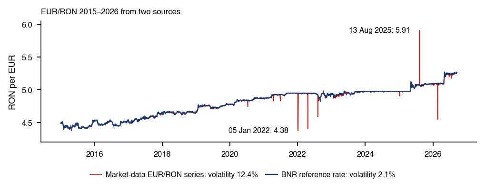
Graficul: EUR/RON (lei pentru un euro)
roșu: seria EODHD (cotații interbancare agregate, nu un curs oficial)
albastru: cursul de referință BNR
Întrebări pentru sală: pe 13 aug. 2025, seria EODHD urcă de la 5,0636 la 5,9065 lei
+15,4% ca variație logaritmică, apoi revine a doua zi
Saltul este o cotație eronată (bad tick). Două fapte o identifică: saltul se inversează imediat, iar o a doua sursă, cursul de referință BNR, nu se mișcă. Același tipar apare la începutul lui ianuarie 2022, cu o variație de circa ±12%. Asemenea înregistrări nu sînt inofensive: în 2015–2026 volatilitatea anualizată a cursului EUR/RON este de 12,4% cu aceste cotații și de 2,1% cu cursul BNR, motiv pentru care cursul preia mereu EUR/RON de la BNR. Randamentul titlurilor de stat românești pe 10 ani din datele cursului are erori de alt tip: o valoare de 0,00% pe 24 decembrie 2013 și valori duplicate în zilele de duminică la sfîrșitul lui 2022.
Pe scurt
Răspuns: o cotație eronată (bad tick)
saltul se inversează imediat, iar cursul BNR, o a doua sursă, nu variază
similar: \(\pm 12\%\) în ian. 2022
volatilitatea anualizată 2015–2026: 12,4% cu aceste cotații, 2,1% cu cursul BNR, sursa de referință pentru EUR/RON
Alte erori din datele cursului: randamentul la 10 ani al României
Pentru SPY în 2015–2026, raportul Sharpe (Sharpe ratio, SR) anualizat este estimat la 0,82, cu eroarea standard (standard error, SE) 0,29, deci intervalul de încredere de 95% este \([0{,}25;\ 1{,}39]\). Ca și media, raportul Sharpe este cunoscut doar cu o precizie de circa \(\pm 2/\sqrt{Y}\), unde \(Y\) este lungimea eșantionului în ani, iar 11,7 ani de date nu pot deosebi 0,8 de 0,5. Capitolul lucrează cu rata fără risc egală cu zero. Cu o rată \(r_f > 0\), raportul devine \((\mu_A - r_f)/\sigma_A\), unde \(\mu_A\) și \(\sigma_A\) sînt media și volatilitatea anualizate, deci fiecare SR scade cu \(r_f/\sigma_A\), cel mai mult pentru activele cu volatilitate mică: \(r_f = 2\%\) îl reduce cu 0,20 la \(\sigma_A = 10\%\) și doar cu 0,05 la \(\sigma_A = 40\%\).
Corelația dintre S&P 500 și TLT, ETF-ul pe titluri de stat americane pe termen lung, este calculată o singură dată pentru fiecare subperioadă, nu ca medie a unei corelații mobile: \(-0{,}47\) în 2010–2020 (\(n_1 = 2.769\) de perechi zilnice) și \(+0{,}11\) în 2022–2026 (\(n_2 = 1.182\)), o schimbare estimată de \(+0{,}58\). Testul Fisher \(z\) compară cele două corelații pe scara \(\operatorname{atanh}\), pe care, pentru perechi iid dintr-o distribuție Normală bivariată, corelația de selecție este aproximativ Normală, cu varianța \(1/(n-3)\):
Sub ipoteza nulă a corelațiilor adevărate egale, \(z\) din (0.17) urmează distribuția Normală standard. Rezultatul este \(z = 17{,}9\),\(p < 10^{-10}\). Testul cere un moment de ordinul patru finit al randamentelor, ipoteză pe care Capitolul 1 o pune la îndoială.
Pe scurt
Corelația S&P 500 – TLT calculată pe fiecare subperioadă (nu media corelațiilor rolling)
\(-0{,}47\) în 2010–2020 (\(n = 2\,769\)), \(+0{,}11\) în 2022–2026 (\(n = 1\,182\))
o variație de \(+0{,}58\)
Testul Fisher \(z\) pentru \(H_0\): cele două corelații adevărate sînt egale
\(\hat\rho_k\), \(n_k\): corelația empirică și numărul de perechi zilnice din perioada \(k\)
pentru perechi iid dintr-o distribuție Normală bivariată, \(\operatorname{atanh}\hat\rho = \frac{1}{2}\ln\frac{1+\hat\rho}{1-\hat\rho}\) are aproximativ distribuția Normală, cu varianța \(1/(n-3)\)
sub \(H_0\), \(z\) urmează distribuția Normală standard
Rezultat: \(z = 17{,}9\), \(p < 10^{-10}\)
inferența pe corelații presupune moment de ordin patru finit, pus sub semnul întrebării în Capitolul 1
Pe scara corelației, metoda delta transformă \(\operatorname{Var}(\operatorname{atanh}\hat\rho) \approx 1/(n-3)\) în varianța \((1-\rho^2)^2/(n-3)\) a unei corelații de selecție, iar intervalul iid pentru schimbare este \(0{,}58 \pm 1{,}96 \times 0{,}032\), adică \([0{,}52;\ 0{,}65]\). Acest interval este prea îngust: volatility clustering face perechile consecutive dependente, iar cozile groase încalcă normalitatea. Un bootstrap staționar (stationary bootstrap), care reeșantionează blocuri de zile consecutive cu lungimi aleatoare, de medie 20 de zile, dă intervalul \([0{,}48;\ 0{,}68]\), de 1,59 ori mai larg, care tot nu conține 0.
Pe scurt
Intervalul iid pentru variație, pe scara corelației
\((1-\rho^2)^2/(n-3)\): varianța corelației empirice, obținută prin metoda delta din \(\operatorname{Var}(\operatorname{atanh}\hat\rho) \approx 1/(n-3)\)
aici \(0{,}58 \pm 1{,}96 \times 0{,}032\), adică \([0{,}52;\ 0{,}65]\)
Volatility clustering induce dependență între perechi, iar cozile groase contrazic normalitatea
intervalul iid este prea îngust
Bootstrap staționar: blocuri de zile consecutive, de lungimi aleatoare (20 de zile în medie)
interval de 95% \([0{,}48;\ 0{,}68]\), de 1,59 ori mai larg, care tot nu îl conține pe 0
Testul stabilește o schimbare a asocierii, nu cauza ei; atribuirea ei șocului inflației și al dobînzilor din 2022 cere un test separat. Ferestrele sînt și ele o alegere: lasă deoparte anul 2021, cînd inflația din SUA a început să crească, și anii dinainte de 2010. O concluzie care depinde de punctul de tăietură este fragilă, așa că schimbarea trebuie raportată și cu 2021 inclus sau cu un început mai timpuriu, cu ferestrele alternative fixate dinainte. Pe scara \(\operatorname{atanh}\), SE este \(\sqrt{1/2.766 + 1/1.179} = 0{,}035\), iar fereastra mai scurtă, 2022–2026, contribuie mai mult (\(1/1.179 = 0{,}00085\) față de \(0{,}00036\)): eșantionul mai scurt domină incertitudinea unei diferențe.
Pe scurt
Ce susține rezultatul: asociere
testul arată o schimbare a asocierii, nu cauza ei
șocul inflației și al dobînzilor din 2022 cere un test separat
Studiul de eveniment (event study) întreabă cît a pierdut Banca Transilvania (TLV) la anunțul taxei bancare, peste scăderea pieței. Taxa a fost anunțată în seara zilei de 18 decembrie 2018, deci ziua 0 este 19 decembrie 2018. Randamentul normal este descris de modelul pieței (market model), \(r_{i,t} = a + b\,r_{m,t} + \varepsilon_t\), unde \(r_{i,t}\) și \(r_{m,t}\) sînt randamentele logaritmice zilnice ale TLV (prețul de închidere ajustat) și ale indicelui BET, estimat prin metoda celor mai mici pătrate (ordinary least squares, OLS) pe fereastra de estimare \([-250, -11]\),\(T = 240\) de zile. Fereastra se oprește la ziua \(-11\) pentru ca evenimentul să nu influențeze estimările \(\hat a\) și \(\hat b\).
Pe scurt
Întrebare: cît a pierdut Banca Transilvania (TLV) la anunțul taxei bancare, dincolo de scăderea pieței?
Taxa a fost anunțată în seara de 18 dec. 2018, deci ziua 0 este 19 dec. 2018
Modelul pieței, estimat prin OLS pe fereastra de estimare \([-250, -11]\), \(T = 240\) de zile
\[
r_{i,t} = a + b\,r_{m,t} + \varepsilon_t
\]
OLS: ordinary least squares
\(r_{i,t}\), \(r_{m,t}\): randamentele logaritmice zilnice ale TLV (închidere ajustată) și ale BET
fereastra de estimare se oprește la ziua \(-11\), ca evenimentul să nu influențeze \(\hat a\) și \(\hat b\)
Randamentul anormal (abnormal return, AR) din ziua \(\tau\) este randamentul realizat minus predicția modelului pieței, \(AR_\tau = r_{i,\tau} - (\hat a + \hat b\,r_{m,\tau})\), iar randamentul anormal cumulat (cumulative abnormal return, CAR) pe fereastra evenimentului \([0, +5]\) este suma celor șase AR. Testul absenței unui efect în ziua 0 este \(t = AR_0/\operatorname{SE}(AR_0)\), cu
unde \(\hat\sigma_\varepsilon\) este abaterea standard a reziduurilor, iar \(S_{mm} = \sum_t (r_{m,t} - \bar r_m)^2\) pe fereastra de estimare. Ultimii doi termeni din (0.18) adaugă la zgomotul zilei eroarea de estimare a lui \(\hat a\) și \(\hat b\)(MacKinlay, 1997). Cu erori iid Normale, \(t\) urmează sub ipoteza nulă o distribuție Student cu \(T-2\) grade de libertate; SE pentru CAR, care însumează \(L = 6\) zile, se calculează la fel.
Pe scurt
Randamentul anormal (AR) și randamentul anormal cumulat (CAR) pe fereastra evenimentului \([0, +5]\)
Panoul din stînga arată randamentele logaritmice zilnice ale TLV și ale BET, împreună cu predicția modelului, în zilele \(-10\) pînă la \(+5\), cu fereastra evenimentului colorată în roșu. Panoul din dreapta arată \(CAR[0,\tau]\), cumulat pînă în ziua \(\tau\), cu o bandă de \(\pm 1{,}96\) SE. În ziua 0, TLV scade cu 22,2%, iar modelul prevede 13,9%, deci \(AR_0 = -8{,}3\%\), cu \(t = -6{,}85\) și \(p < 10^{-10}\). Pe întreaga fereastră, \(CAR[0,+5] = -1{,}1\%\), cu SE de 2,27%, \(t = -0{,}48\) și \(p = 0{,}63\); banda conține 0 începînd din ziua 3.
Pe scurt
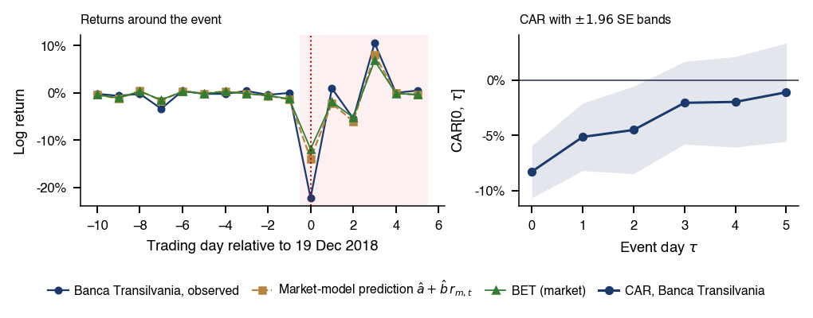
Stînga: randamentele logaritmice zilnice ale TLV, ale BET și predicția modelului
în zilele \(-10\) … \(+5\)
zona roșie: fereastra evenimentului
Dreapta: \(CAR[0,\tau]\), cumulat pînă în ziua \(\tau\), cu banda de \(\pm 1{,}96\) SE
Ziua 0: TLV \(-22{,}2\%\), predicția modelului \(-13{,}9\%\)
deci \(AR_0 = -8{,}3\%\), \(t = -6{,}85\), \(p < 10^{-10}\)
Estimările modelului pieței sînt \(\hat b = 1{,}18\) și \(\hat\sigma_\varepsilon = 0{,}83\%\) pe zi. Reacția anormală din ziua 0 este clară, dar zilele 1–3 recuperează cea mai mare parte a șocului, așa că pe o săptămînă efectul cumulat nu se poate deosebi de zgomot. Reacția din ziua 0 are o interpretare cauzală dacă în acea zi nu au apărut alte știri, predicția modelului pieței ținînd locul contrafactualului. Două limite o nuanțează. BET include TLV și BRD cu ponderi mari, deci predicția absoarbe o parte din șocul băncilor, iar AR îl subestimează. Anunțul a lovit apoi toate băncile în aceeași seară, deci AR-ul unei bănci nu este independent de al celorlalte. Seminarul 0 repetă analiza pentru TLV și BRD.
Pe scurt
Estimările modelului pieței: \(\hat b = 1{,}18\), \(\hat\sigma_\varepsilon = 0{,}83\%\) pe zi
Reacția anormală din ziua 0 este clară, dar zilele 1–3 recuperează cea mai mare parte a șocului
pe o săptămînă, efectul cumulat nu se distinge de zgomot
Ce susține rezultatul: identificare cauzală a reacției din ziua 0
dacă nicio altă știre nu a sosit în ziua 0; predicția modelului pieței ține locul contrafactualului, cu limitele de mai jos
Limită: BET include TLV și BRD cu ponderi mari
predicția absoarbe o parte din șocul băncilor, iar AR îl subestimează
Limită: anunțul a afectat toate băncile în aceeași seară
deci AR al unei bănci nu este independent de al celorlalte
Exemplul folosește cifre ilustrative: o valoare a activului net (net asset value, NAV) de 100 și un preț de piață al ETF-ului de 100,50, adică o primă (premium) \((P - \text{NAV})/\text{NAV}\) de 0,5%. Un participant autorizat (authorised participant, AP) cumpără coșul cu 100, îl predă emitentului, primește o unitate nouă de ETF și o vinde cu 100,50, un profit de 0,50 înainte de costuri. Unitățile suplimentare împing prețul ETF-ului în jos pînă cînd prima dispare; la un discount (\(P < \text{NAV}\)), AP face operațiunea inversă, cumpără unități de ETF și le răscumpără contra coșului. Primele persistă acolo unde NAV-ul este învechit sau coșul este nelichid, iar viteza cu care se sting se măsoară prin timpul de înjumătățire (half-life) al unui model autoregresiv de ordinul întîi, AR(1), din Anexă.
Pe scurt
Cifre ilustrative: NAV \(= 100\), prețul de piață al ETF-ului \(P = 100{,}50\)
deci prima\((P - \text{NAV})/\text{NAV} = 0{,}5\%\)
Întrebări pentru sală
ce tranzacție face un participant autorizat?
ce se întîmplă cu prima?
Răspuns: AP cumpără coșul cu 100 și îl predă emitentului
primește o unitate ETF nouă și o vinde cu 100,50
cîștig de 0,50 înainte de costuri
oferta suplimentară de unități ETF reduce prețul pînă cînd prima dispare
la un discount (\(P < \text{NAV}\)), AP cumpără unități ETF și le răscumpără contra coșului
Primele persistă cînd NAV-ul nu este actualizat sau coșul este nelichid
viteza cu care dispar se măsoară cu timpul de înjumătățire al unui AR(1), model autoregresiv de ordinul 1 (Anexă)
Ecuația (5) din Haddad, Huebner & Loualiche (2025) se sprijină pe două ipoteze: toți investitorii activi au aceeași elasticitate proprie \(\bar{\mathcal{E}}\), iar cei care trec la administrare pasivă sînt reprezentativi pentru investitorii activi. Introducînd răspunsul strategic, ec. (4), în media ponderată cu deținerile, în care deținerile active au ponderea \(\alpha\), iar cele pasive contribuie cu 0, se obține \(\mathcal{E}_{agg} = \alpha\bar{\mathcal{E}}/(1 + \chi\alpha)\). Împărțind la valoarea cu toți investitorii activi, \(\bar{\mathcal{E}}/(1+\chi)\), rezultă ec. (5) scrisă ca o singură fracție, \(\alpha(1+\chi)/(1+\chi\alpha)\).
Pe scurt
Ipotezele ec. (5) (Secțiunea V.A)
toți investitorii activi au aceeași elasticitate proprie \(\bar{\mathcal{E}}\)
cei care trec la administrare pasivă sînt reprezentativi pentru investitorii activi
Pasul 1: introducem ec. (4) în media ponderată cu deținerile (ec. 2)
Cu \(\chi = 1\) și \(\alpha = 0{,}5\), ec. (5) dă 0,67, iar rata de transmitere (0.19) este tot \(1/1{,}5 = 0{,}67\), deci o scădere cu 1% a lui \(\alpha\) reduce \(\mathcal{E}_{agg}\) cu circa 0,67%. Dacă investitorii cei mai elastici trec primii la administrare pasivă, ipoteza de reprezentativitate nu mai este valabilă.
Pe scurt
Pasul 3: elasticitatea lui \(\mathcal{E}_{agg}\) în raport cu \(\alpha\) este rata de transmitere din ec. (28)
Tema de proiect a capitolului urmează un flux de lucru fix. Ea începe prin reproducerea cifrelor capitolului, multiplii de randament total ai SPY (×12,7) și RSP (×11,9) și statisticile \(t\) ale mini studiului de caz, cu aceleași definiții: randamente logaritmice ale prețurilor de închidere ajustate, alăturate pe zilele comune. Ipotezele nulă și alternativă, testul, eșantionul, lagul \(L\) al erorii standard robuste la heteroscedasticitate și autocorelație (heteroskedasticity and autocorrelation consistent, HAC) și corecțiile pentru testarea multiplă se preînregistrează înaintea rezultatelor. Raportul dă estimarea, eroarea ei standard, efectul minim detectabil (minimum detectable effect, MDE) și fiecare specificație încercată; codul se publică drept Quantlet, prompturile care au influențat decizii se consemnează în `AI_USE.md`, iar fiecare eroare depistată în `AI_ERRORS.md`.
Pe scurt
Reproduceți întîi: SPY \(\times 12{,}7\), RSP \(\times 11{,}9\) și statisticile \(t\) din mini studiul de caz
cu aceleași definiții: randamente logaritmice ale prețurilor ajustate, aliniate pe zilele comune
Preînregistrați, într-un commit făcut înainte de rezultate
\(H_0\), \(H_1\), testul, eșantionul, lagul HAC \(L\) (Anexă) și corecțiile
Raportați: estimația, eroarea standard, MDE și toate specificațiile încercate
Publicați codul ca Quantlet
Consemnați
prompturile care au influențat decizii în AI_USE.md
Anexa adună materialul de referință al capitolului: harta cursului și bibliografia de bază, termenii structurii pieței, istoria burselor, a bulelor și a modelelor financiare val cu val, derivări despre scalarea volatilității și precizia raportului Sharpe, grafice suplimentare despre clasele de active, dobînzi și piața românească, activele digitale și reglementarea lor, metoda și rezultatele complete ale studiului de caz, mini studiul de caz al buclei descoperirii și un flux minimal în Python, cu o listă de verificare a datelor.
Cursul are douăzeci de capitole: de la piețele financiare și faptele stilizate (capitolele 0–1), prin eficiență, modele factoriale și portofolii (2–4), volatilitate și risc (5–9), microstructură, timp continuu și opțiuni (10–12), machine learning, deep learning și modele de limbaj (13–15), pînă la active digitale, bule și risc sistemic (16–18) și prezentarea proiectelor (19).
Cadrul definește termenii folosiți cînd capitolul descrie clasele de active. Pe piața monetară, titlurile de trezorerie (Treasury bills, T-bills) sînt datorie publică cu scadența sub un an, iar acordul de răscumpărare (repo) este un împrumut pe termen scurt garantat cu titluri. Dintre instrumentele derivate, un contract futures fixează astăzi prețul unei cumpărări sau vînzări ulterioare, o opțiune dă dreptul, nu și obligația, de a tranzacționa la un preț fix, iar un swap schimbă fluxuri de plăți. Riscul idiosincratic (idiosyncratic risk) este specific unei companii; riscul de contrapartidă (counterparty risk) este riscul ca cealaltă parte a contractului să nu plătească. Infrastructura cuprinde sistemul multilateral de tranzacționare (multilateral trading facility, MTF), contrapartea centrală (central counterparty, CCP), care devine cumpărătorul fiecărui vînzător și vînzătorul fiecărui cumpărător, și banca custode (custodian), care păstrează titlurile.
Pe scurt
Piața monetară
titluri de trezorerie (T-bills): titluri de stat cu scadența sub un an
repo: acord de răscumpărare, un împrumut pe termen scurt garantat cu titluri
Derivate
futures: contract de cumpărare sau vînzare la o dată viitoare, la un preț fixat azi
opțiuni: dreptul, nu obligația, de a cumpăra sau vinde la un preț fixat
swap-uri: schimburi de fluxuri de numerar
Riscuri
risc idiosincratic: specific unei singure companii
risc de contrapartidă: partea cealaltă a contractului poate să nu plătească
Infrastructură
sistem multilateral de tranzacționare (MTF): loc de tranzacționare operat în afara unei burse reglementate
contraparte centrală (CCP): devine cumpărătorul fiecărui vînzător și vînzătorul fiecărui cumpărător
Tabelul compară cinci tipuri de locuri de tranzacționare după mecanismul de execuție și după informația vizibilă. Bursele potrivesc ordinele într-un registru central de ordine limită și în licitații și publică cotațiile și tranzacțiile. Dealerii de pe piața over-the-counter (OTC) tranzacționează bilateral, iar informația devine vizibilă abia după tranzacție, ca la obligațiuni, valute și swap-uri. Dark pool-urile execută la un preț preluat de pe piețele publice și nu arată nimic înainte de tranzacție. Bursele centralizate de criptoactive au un registru de ordine deschis 24/7, iar un automated market maker (AMM) este un smart contract care tranzacționează dintr-un fond comun de două tokenuri, la un preț stabilit printr-o formulă. Makarov & Schoar (2020) documentează diferențe de preț mari și persistente între platformele de criptoactive, menținute de controalele de capital și de costuri.
O licitație de tip call (call auction) adună ordinele și le execută la un singur preț, cel care maximizează volumul tranzacționat; majoritatea burselor folosesc licitații la deschidere și la închidere, iar licitația de închidere stabilește prețul de închidere zilnic folosit în tot cursul. În tranzacționarea continuă, fiecare ordin nou este executat imediat, dacă se poate, întîi după cel mai bun preț și apoi după momentul introducerii. Mecanismul răsplătește viteza: tranzacționarea de înaltă frecvență (high-frequency trading, HFT) operează în microsecunde. Budish, Cramton & Shim (2015) propun licitații frecvente pe loturi (frequent batch auctions) pentru a pune capăt cursei vitezei.
Pe scurt
Licitații (call auctions)
Ordinele se acumulează, apoi se execută la un preț unic
cel care maximizează volumul tranzacționat
Folosite de majoritatea burselor la deschidere și la închidere
Concentrează lichiditatea
licitația de închidere dă prețul de închidere folosit în curs
Tranzacționare continuă
Fiecare ordin nou se execută imediat, dacă are contrapartidă
întîi cel mai bun preț, apoi ordinul cel mai vechi
Viteza aduce un avantaj
tranzacționarea de înaltă frecvență (HFT) operează în microsecunde
În tranzacționarea prin strigare (open outcry), brokerii se întîlneau în ringul bursei și potriveau ordinele prin voce și semne cu mîna, ca în fotografiile ringului Bursei din New York (NYSE) din 2011 și al Chicago Board of Trade din 1992. Registrele electronice de ordine au înlocuit treptat tranzacționarea în ring, iar astăzi ordinele sînt potrivite de calculatoare. Microstructura pieței este subiectul Capitolului 10.
În modelul lui Roll (1984), prețul observat este \(p_t = m_t + (s/2)\,q_t\), unde \(m_t\) este prețul eficient, un random walk, \(s\) un spread constant, iar \(q_t = \pm 1\) sînt semnele tranzacțiilor, independente, egal probabile și fără legătură cu \(\Delta m_t\). Doar semnul comun \(q_{t-1}\) leagă variațiile consecutive ale prețului, deci
unde \(\hat\gamma_1\) este autocovarianța de selecție de ordinul întîi a variațiilor prețului. Estimatorul din (0.20) nu este definit cînd \(\hat\gamma_1 > 0\), iar alte forme de dependență modifică și ele \(\hat\gamma_1\), deci nu orice autocovarianță negativă provine din oscilația bid–ask (bid–ask bounce).
Pe scurt
Modelul: \(p_t = m_t + (s/2)\,q_t\)
\(m_t\): prețul eficient (random walk)
\(s\): un spread constant, în unități de preț
\(q_t = \pm 1\): semnul tranzacției, independent, cu probabilități egale și necorelat cu \(\Delta m_t\)
Atunci \(\Delta p_t = \Delta m_t + (s/2)(q_t - q_{t-1})\)
Doar termenul comun \(q_{t-1}\) leagă două variații consecutive:
Fotografia arată mulțimea din fața Bursei din New York pe 29 octombrie 1929, Marțea Neagră (Black Tuesday). Crahul a adîncit o recesiune americană începută în august 1929, potrivit datărilor ciclului economic ale NBER; contracția inițială a Marii Crize a durat pînă în 1933. Bulele și crahurile sînt studiate în Capitolul 17.
Povestea populară a tulip mania provine în mare parte din pamfletele moralizatoare scrise după crah. Garber (1989) arată că bulbii rari s-au depreciat la fel ca soiurile noi pe piețele de flori de mai tîrziu, iar comerțul cu bulbi obișnuiți a durat cîteva săptămîni de iarnă, s-a desfășurat în taverne și s-a bazat pe contracte rareori executate. Goldgar (2007) găsește puține falimente și pagube mici pentru economia olandeză. Frehen, Goetzmann & Rouwenhorst (2013) arată că în 1720 avîntul s-a extins la Paris, Londra și Amsterdam, cu cele mai mari creșteri pentru firmele legate de comerțul atlantic și de asigurări. Lecția reluată în Capitolul 17 este că o bulă se sprijină pe o poveste despre o schimbare reală, iar datarea ei cere un model al valorii fundamentale.
Graficul așază principalele modele financiare pe o axă a timpului între 1900 și 2026: modelul de evaluare a activelor financiare (capital asset pricing model, CAPM), teoria evaluării prin arbitraj (arbitrage pricing theory, APT), modelele ratei dobînzii Vasicek, Cox–Ingersoll–Ross (CIR) și Heath–Jarrow–Morton (HJM), modelele de volatilitate condiționată ARCH și GARCH, adoptarea expected shortfall în revizuirea fundamentală a portofoliului de tranzacționare (fundamental review of the trading book, FRTB) și simularea Monte Carlo pe calculatoare cuantice. Cadrele următoare iau valurile pe rînd.
Pe scurt
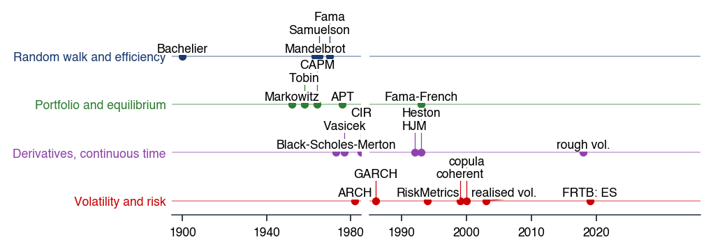
Abrevieri din grafic: CAPM, modelul de evaluare a activelor financiare; APT, teoria evaluării prin arbitraj; Vasicek, CIR (Cox–Ingersoll–Ross) și HJM (Heath–Jarrow–Morton), modele ale ratei dobînzii; ARCH și GARCH, modele de volatilitate condiționată; FRTB: ES, revizuirea fundamentală a portofoliului de tranzacționare, care adoptă expected shortfall; quantum MC, simulare Monte Carlo pe calculatoare cuantice MFM_ch0_history
Al doilea grafic mărește partea cea mai recentă a cronologiei, cu reperele machine learning (ML), ale inteligenței artificiale (AI) generative și ale simulării Monte Carlo pe calculatoare cuantice. Axa timpului marchează datele reperelor numite.
Pe scurt
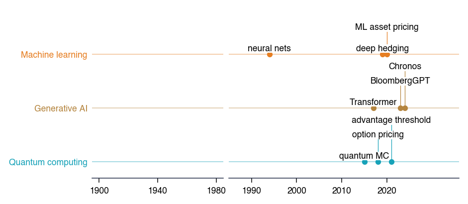
ML, machine learning; AI, artificial intelligence (inteligență artificială); quantum MC, simulare Monte Carlo pe calculatoare cuantice. Axa timpului indică anii reperelor numite. MFM_ch0_history
Bachelier (1900) a modelat prețurile titlurilor de stat franceze ca o mișcare browniană, cu cinci ani înaintea lui Einstein, și a dat prima formulă de evaluare a opțiunilor. Mandelbrot (1963) a arătat că variațiile prețului bumbacului au cozi mult mai groase decît permite distribuția Normală. Mișcarea browniană geometrică păstrează prețurile pozitive și face randamentele logaritmice Normale. Fama (1965) și Fama (1970) au formulat ipoteza piețelor eficiente (efficient market hypothesis, EMH) în trei forme: slabă (prețurile trecute), semi-tare (informația publică) și tare (toată informația). Cursul reia faptele stilizate în Capitolul 1, testele de eficiență în Capitolul 2 și modelele în timp continuu în Capitolul 11.
Tobin (1958) a stabilit separarea în două fonduri (two-fund separation): cu un activ fără risc, fiecare investitor deține același portofoliu riscant. CAPM (Sharpe, 1964),(Lintner, 1965), (Mossin, 1966) afirmă că \(\mathbb{E}[R_i] - r_f = \beta_i(\mathbb{E}[R_m] - r_f)\), cu \(\beta_i = \operatorname{Cov}(R_i, R_m)/\operatorname{Var}(R_m)\), deci doar riscul de piață este remunerat; modelul presupune investitori medie–varianță cu aceleași așteptări, împrumut și plasament la \(r_f\) și absența fricțiunilor. În APT-ul lui Ross (1976), absența arbitrajului cu \(K\) factori comuni duce la un model factorial liniar, iar Fama & French (1993) folosesc trei factori: piața, mărimea (SMB, small minus big) și valoarea (HML, high minus low după raportul valoare contabilă/valoare de piață). Modelele factoriale sînt subiectul Capitolului 3, iar optimizarea portofoliului al Capitolului 4.
Black & Scholes (1973) și Merton (1973) au evaluat opțiunile prin replicare dinamică. Heston (1993) a adăugat volatilitatea stocastică, cu un preț al opțiunii în formă închisă. În modelul de volatilitate rugoasă (rough volatility) al lui Gatheral, Jaisson & Rosenbaum (2018), logaritmul volatilității urmează o mișcare browniană fracționară \(B^H\), un proces gaussian cu \(\operatorname{Var}(B^H_{t+h} - B^H_t) = |h|^{2H}\), cu exponentul Hurst \(H\) aproape de 0,1; \(H = 1/2\) corespunde mișcării browniene, iar \(H < 1/2\) dă traiectorii mai rugoase. Aceste modele sînt studiate în capitolele 11 și 12.
În modelul lui Vasicek (1977), rata pe termen scurt urmează \(dr_t = \kappa(\theta - r_t)\,dt + \sigma\,dW_t\): driftul trage \(r_t\) spre nivelul de lungă durată \(\theta\) cu viteza \(\kappa > 0\), iar \(dW_t\) este o creștere a mișcării browniene, cu varianța \(dt\); rata poate deveni negativă. Modelul CIR (Cox, Ingersoll & Ross, 1985) înmulțește șocul cu \(\sqrt{r_t}\), astfel că volatilitatea scade pe măsură ce rata se apropie de zero, iar rata nu devine negativă. Cadrul HJM (Heath, Jarrow & Morton, 1992) modelează direct întreaga curbă a ratelor forward, iar absența arbitrajului fixează driftul fiecărei rate ca funcție de volatilitățile ei.
Pentru un randament zilnic centrat \(r_t\), cu varianța condiționată \(\sigma_t^2\), modelul ARCH al lui Engle (1982) stabilește \(\sigma_t^2 = \omega + \alpha r_{t-1}^2\), iar modelul GARCH al lui Bollerslev (1986) adaugă varianța din perioada anterioară, \(\sigma_t^2 = \omega + \alpha r_{t-1}^2 + \beta\sigma_{t-1}^2\); cînd \(\alpha + \beta < 1\), varianța revine la nivelul ei de lungă durată, \(\omega/(1 - \alpha - \beta)\). RiskMetrics (J.P. Morgan/Reuters, 1996) folosește o medie mobilă ponderată exponențial (exponentially weighted moving average, EWMA) a randamentelor la pătrat, \(\sigma_t^2 = \lambda\sigma_{t-1}^2 + (1-\lambda)r_{t-1}^2\), cu \(\lambda = 0{,}94\) pentru date zilnice, adică un GARCH(1,1) cu \(\omega = 0\) și \(\alpha + \beta = 1\).Andersen et al. (2003) măsoară volatilitatea din randamentele intrazilnice. Capitolele 5–9 tratează aceste modele.
Pentru un randament \(X\) cu cuantila de ordin \(\alpha\) notată \(q_\alpha(X)\), valoarea la risc la probabilitatea de coadă \(\alpha\) și expected shortfall (ES) sînt
VaR 1% este pierderea depășită cu probabilitatea 1%; ES este pierderea medie în cele mai rele \(\alpha\) din cazuri și, pentru distribuții continue, este egală cu \(-\mathbb{E}[X \mid X \le q_\alpha(X)]\), deci \(\mathrm{ES}_\alpha \ge \mathrm{VaR}_\alpha\). Din 1996, Comitetul de la Basel pentru Supraveghere Bancară (Basel Committee on Banking Supervision, BCBS) permite modele interne pentru VaR 1% pe 10 zile (BCBS, 1996), iar FRTB îl înlocuiește cu ES 2,5% (BCBS, 2019).
Pe scurt
VaR (valoarea la risc) a unui randament \(X\) la probabilitatea de coadă \(\alpha\)
Artzner et al. (1999) numesc o măsură de risc \(\rho(X)\), capitalul necesar pentru o poziție \(X\), coerentă (coherent) dacă este monotonă, invariantă la translație, pozitiv omogenă și subaditivă, \(\rho(X + Y) \le \rho(X) + \rho(Y)\), astfel încît diversificarea să nu adauge niciodată risc. VaR poate încălca subaditivitatea și poate astfel penaliza diversificarea, pe cînd ES este coerentă (Acerbi & Tasche, 2002). Teoria valorilor extreme (extreme value theory, EVT) modelează cozile dincolo de majoritatea datelor (Embrechts, Klüppelberg & Mikosch, 1997),(McNeil & Frey, 2000).
Pe scurt
Măsură a riscului coerentă (Artzner et al. (1999)): \(\rho(X)\), capitalul necesar pentru poziția \(X\), cu patru proprietăți
monotonă: o poziție care plătește mereu mai puțin este mai riscantă
invariantă la translație: adăugarea unei sume \(c\) în numerar scade \(\rho\) cu \(c\)
Li (2000) a construit momentele de default comune din probabilitățile marginale de default \(F_i\) și o structură de dependență Normală: \(\tau_i = F_i^{-1}(\Phi(Z_i))\), cu \(Z_i = \sqrt{\rho}\,M + \sqrt{1-\rho}\,\varepsilon_i\), unde \(\Phi\) este funcția de repartiție a distribuției Normale standard, \(M\) un factor comun, iar \(\varepsilon_i\) șocul propriu al debitorului, ambii Normali standard și independenți. Un \(\rho\) mai mare face ca defaulturile să se producă împreună; \(\rho = 0\) le face independente. Acest unic parametru evalua fiecare tranșă a unui CDO (collateralised debt obligation), plătit dintr-un fond comun de credite în ordinea priorității.
Neajunsurile discutate după 2007–2008 (Donnelly & Embrechts, 2010) încep cu independența asimptotică în cozi (asymptotic tail independence): pe măsură ce pragul devine mai extrem, probabilitatea condiționată a unui default comun tinde la zero, deci gruparea defaulturilor într-o criză extremă este modelată prost, deși la praguri finite dependența poate fi încă mare, iar această limită nu dovedește singură o evaluare greșită. Corelația implicită în prețurile de piață diferea și de la o tranșă la alta, deci un singur \(\rho\) nu le putea evalua pe toate consecvent, iar modelul nu are factori economici din care să se construiască teste de stres. Lecția este riscul de model, reluat la dependența în cozi în Capitolul 6 și la riscul sistemic în Capitolul 18.
Hutchinson, Lo & Poggio (1994) au arătat că rețelele neuronale pot învăța din date prețurile opțiunilor și ratele de acoperire, fără formula Black–Scholes. Gu, Kelly & Xiu (2020) au găsit că, pe acțiunile americane din 1957–2016, arborii și rețelele neuronale bat modelele liniare out-of-sample prin interacțiuni neliniare, măsurate prin \(R^2_{oos} = 1 - \sum (r_{i,t+1} - \hat r_{i,t+1})^2 / \sum r_{i,t+1}^2\); reperul prognozează un randament în exces nul, deci numitorul nu este centrat. În deep hedging (Buehler et al., 2019), o rețea neuronală alege pozițiile de acoperire în prezența costurilor de tranzacționare, minimizînd o măsură de risc convexă, fără un model de evaluare. Capitolele 13 și 14 tratează aceste metode.
Transformer-ul (Vaswani et al., 2017) citește o secvență întreagă în paralel, prin straturi de atenție (attention), și stă la baza majorității modelelor mari de limbaj (large language models, LLM) actuale, inclusiv a familiei GPT (generative pre-trained Transformer). BloombergGPT (Wu et al., 2023) are 50 de miliarde de parametri, antrenați pe 569 de miliarde dintr-un corpus de 363 de miliarde de tokenuri de text financiar și 345 de miliarde de tokenuri generale. Pentru serii de timp, Chronos (Ansari et al., 2024) scalează și cuantizează valorile în tokenuri și antrenează un model de limbaj pe multe serii, astfel încît prognozează serii noi zero-shot. Pe lîngă look-ahead bias, problemele deschise sînt costul, reproductibilitatea și erodarea unui semnal după ce mulți traderi îl folosesc.
Pe scurt
Transformer-ul (Vaswani et al. (2017)): straturile de atenție citesc în paralel întreaga secvență
Stă la baza majorității LLM-urilor actuale și a modelelor GPT (Transformer generativ pre-antrenat)
BloombergGPT (Wu et al. (2023)): un LLM cu 50 de miliarde de parametri
corpus de 363 de miliarde de tokenuri de text financiar și 345 de miliarde de tokenuri generale, din care 569 de miliarde folosite la antrenare
Ținta este \(\mu = \mathbb{E}[f(X)]\), plata medie actualizată pentru un scenariu de piață aleator \(X\). Monte Carlo (MC) clasic face media a \(N\) scenarii simulate, \(\hat\mu_N = N^{-1}\sum_j f(X_j)\), cu eroarea standard \(\sigma/\sqrt{N}\), deci precizia \(\varepsilon\) cere \(N = O(\sigma^2/\varepsilon^2)\) eșantioane. QAE pregătește o stare în care \(\mu\), pentru \(f\) scalat la \([0,1]\), este probabilitatea de a măsura 1 pe un qubit-obiectiv, încîlcit (entangled) cu registrul care conține \(X\)(Woerner & Egger, 2019). Un operator de tip Grover aplicat de \(m\) ori face ca eroarea să scadă ca \(O(1/m)\), deci precizia \(\varepsilon\) cere \(O(1/\varepsilon)\) apeluri ale circuitului de evaluare (Montanaro, 2015),(Rebentrost, Gupt & Bromley, 2018).
Pe scurt
Ținta: \(\mu = \E[f(X)]\), media cîștigului actualizat \(f\) într-un scenariu de piață aleator \(X\)
MC (Monte Carlo) clasic face media a \(N\) scenarii simulate \(X_1, \dots, X_N\)
Cîștigul este pătratic: acolo unde MC clasic face \(N\) pași, QAE face circa \(\sqrt{N}\)(Montanaro, 2015), pe cînd un cîștig exponențial ar însemna circa \(\log N\). În modelul interogărilor de oracol (oracle-query model), niciun algoritm cuantic nu face mai bine în cazul cel mai defavorabil, pînă la factori logaritmici. În practică, acesta nu este încă un avantaj:
Fiecare apel trebuie să încarce distribuția lui \(X\) și să ruleze fără erori, ceea ce cere corecția erorilor;
Operațiile cu corecția erorilor sînt mult mai lente decît cele clasice;
MC clasic se paralelizează ușor pe multe procesoare.
Pe scurt
Pătratic înseamnă: unde MC clasic face \(N\) pași, QAE face circa \(\sqrt{N}\) (Montanaro (2015))
un cîștig exponențial ar însemna circa \(\log N\)
În modelul interogărilor de oracol, niciun algoritm cuantic nu face mai bine în cazul cel mai defavorabil
pînă la factori logaritmici
Avantajul nu este încă practic
fiecare apel trebuie să încarce distribuția lui \(X\) și să ruleze fără erori, ceea ce cere corecția erorilor
operațiile cu corecția erorilor sînt mult mai lente decît cele clasice
MC clasic se paralelizează ușor pe multe procesoare
Preskill (2018) a numit hardware-ul din 2018 NISQ (Noisy Intermediate-Scale Quantum): zeci pînă la cîteva sute de qubiți zgomotoși, fără corecția erorilor. Numărul de qubiți fizici a crescut între timp: cipul Condor al IBM avea 1.121 de qubiți în 2023, iar atenuarea erorilor a dat rezultate utile din circuite cu peste 100 de qubiți și 2.000 de operații (IBM Research, 2024). Limita reală este însă numărul de qubiți logici, cu corecția erorilor, fiecare construit din mulți qubiți fizici, împreună cu adîncimea utilizabilă a circuitului înainte ca zgomotul să domine.
Pe scurt
Preskill (2018) a numit hardware-ul din 2018 NISQ (Noisy Intermediate-Scale Quantum)
zeci pînă la cîteva sute de qubiți zgomotoși, fără corecția erorilor
Chiar încărcarea unei distribuții a randamentelor în qubiți este costisitoare. Pentru un autocallable și un TARF, Chakrabarti et al. (2021) estimează circa 8.000 de qubiți logici și o adîncime T (T-depth), numărul de straturi succesive ale celei mai lente porți cu corecția erorilor, de 54 de milioane. Avantajul cuantic ar cere ca programul să ruleze în circa o secundă. Cifrele sînt o limită superioară pentru aceste produse și algoritmi, nu un prag universal, dar depășesc chiar și așa cu mult mașinile actuale.
Pe scurt
Chiar încărcarea unei distribuții a randamentelor în qubiți este costisitoare
Corelația din curs este întotdeauna corelația Pearson a randamentelor, niciodată a prețurilor. Randamentul la scadență (yield to maturity) este rata internă de rentabilitate a fluxurilor promise de o obligațiune; el este egal cu randamentul realizat doar dacă obligațiunea este păstrată pînă la scadență, plătește integral, iar cupoanele se reinvestesc la același randament. Spread-ul curbei randamentelor, \(y^{10\text{a}} - y^{2\text{a}}\), se măsoară în puncte procentuale (pp) sau în puncte de bază (basis points, bp), cu 1 bp \(= 0{,}01\) pp. Un spread negativ înseamnă o curbă inversată, care în SUA a precedat de regulă recesiunile.
Pe scurt
Corelația: coeficientul Pearson calculat pe randamente, niciodată pe prețuri
Randamentul la scadență: rata internă de rentabilitate a fluxurilor promise de o obligațiune
coincide cu randamentul realizat doar dacă obligațiunea este păstrată pînă la scadență, emitentul plătește integral și cupoanele se reinvestesc la același randament
Spread-ul curbei randamentelor: randamentul titlurilor de stat pe 10 ani minus cel pe 2 ani
\(y^{10\text{a}} - y^{2\text{a}}\)
în puncte procentuale sau în puncte de bază (bp), 1 bp \(= 0{,}01\) pp: \(4{,}3\% - 3{,}8\% = 0{,}5\) pp \(= 50\) bp
curbă inversată: spread negativ, adică dobînda pe 2 ani o depășește pe cea pe 10 ani
Regula \(\sqrt{h}\) este deci exactă cînd randamentele sînt necorelate și au varianță constantă; independența nu este necesară. Variance ratio \(\mathrm{VR}(h)\), paranteza din (0.22), este 1 pentru randamente necorelate, sub 1 la revenirea spre medie (mean reversion) și peste 1 la momentum; pentru un AR(1) cu autocorelația de lag 1 egală cu \(\rho\), tinde la \((1+\rho)/(1-\rho)\). Pentru S&P 500 în 2000–2026, \(\hat\rho_1 = -0{,}10\) și \(\widehat{\mathrm{VR}}(20) = 0{,}75\), deci scalarea volatilității zilnice cu \(\sqrt{20}\) supraestimează riscul lunar. Testele sînt în Capitolul 2.
Pe scurt
Varianța randamentului pe \(h\) zile, pentru randamente staționare cu varianța \(\sigma^2\):
Pentru cursul de referință BNR EUR/RON în 2005–2026, \(\hat\rho_1 = 0{,}17\). Un AR(1) ipotetic ar scala volatilitatea anualizată cu \(\sqrt{252}\), de 4,4%, cu factorul \(\sqrt{1{,}17/0{,}83} = 1{,}19\), la 5,3%, dar autocorelațiile negative de la lagurile 2–4 compensează lagul 1, iar randamentele lunare dau tot 4,4%. În seria furnizorului de date de piață, cotațiile eronate produc \(\hat\rho_1 = -0{,}57\); ele sînt erori de eliminat, nu un AR(1). Varianța se estimează și ea mai puțin precis decît sugerează formula: pentru randamente iid cu moment de ordinul patru finit, \(\operatorname{Var}(\hat\sigma^2) \approx \sigma^4(\kappa - 1)/T\), unde \(\kappa\) este kurtosisul, deci precizia crește încet cînd \(\kappa\) este mare, ca la randamentele zilnice SPY, cu \(\kappa = 17{,}1\).
Pe scurt
EUR/RON, cursul de referință BNR, 2005–2026: \(\hat\rho_1 = 0{,}17\)
un AR(1) ipotetic ar da factorul \(\sqrt{1{,}17/0{,}83} = 1{,}19\)
volatilitatea anualizată cu \(\sqrt{252}\), 4,4%, ar deveni 5,3%
însă \(\hat\rho_2, \hat\rho_3, \hat\rho_4 < 0\) compensează efectul lagului 1
randamentele lunare dau tot 4,4%
Seria EUR/RON de la furnizorul de date de piață: cotațiile eronate dau \(\hat\rho_1 = -0{,}57\)
ele exagerează volatilitatea
sînt erori de eliminat, nu un AR(1)
Varianța se estimează altfel decît media: pentru randamente iid cu momentul de ordin patru finit
Metoda delta (delta method) transmite eroarea standard de la un estimator \(\hat\theta\) la o funcție derivabilă \(g(\hat\theta)\), printr-o dezvoltare Taylor de ordinul întîi: dacă \(\sqrt{T}(\hat\theta - \theta)\) converge în distribuție la \(N(0, \sigma^2)\), atunci \(\sqrt{T}(g(\hat\theta) - g(\theta))\) converge la \(N(0, g'(\theta)^2\sigma^2)\). Aplicată raportului Sharpe zilnic \(\mathrm{SR}_d = \mu_d/\sigma_d\), pentru randamente iid Normale (Lo, 2002), ea dă
unde \(A\) este numărul de perioade pe an, iar \(Y\) numărul de ani. În (0.23), termenul 1 provine din estimarea mediei, iar \(\mathrm{SR}_d^2/2\) din estimarea abaterii standard.
Pe scurt
Metoda delta: dacă \(\sqrt{T}(\hat\theta - \theta) \xrightarrow{d} N(0, \sigma^2)\) și \(g\) este derivabilă
atunci \(\sqrt{T}\,\big(g(\hat\theta) - g(\theta)\big) \xrightarrow{d} N\big(0, g'(\theta)^2\sigma^2\big)\)
\(\theta\): un parametru
\(\hat\theta\): estimatorul lui din \(T\) observații
\(\xrightarrow{d}\): convergență în distribuție cînd \(T \to \infty\)
o dezvoltare Taylor de ordinul întîi, \(g(\hat\theta) \approx g(\theta) + g'(\theta)(\hat\theta - \theta)\)
aceasta transferă eroarea standard de la \(\hat\theta\) la \(g(\hat\theta)\)
Aplicată lui \(\mathrm{SR}_d = \mu_d/\sigma_d\), pentru randamente iid cu distribuția Normală (Lo (2002)):
Pentru randamente iid ne-Normale, cu asimetria \(\gamma_3\) și kurtosisul \(\gamma_4\)(Opdyke, 2007), varianța asimptotică devine \(V = 1 - \mathrm{SR}_d\gamma_3 + \mathrm{SR}_d^2(\gamma_4 - 1)/4\), care pentru distribuția Normală redă \(1 + \mathrm{SR}_d^2/2\). Pentru un raport Sharpe pozitiv, asimetria negativă și cozile groase lărgesc intervalul, dar la SPY eroarea standard trece doar de la 0,29 la 0,30, pentru că SR zilnic este mic. Randamentele dependente cer inferență HAC sau bootstrap studentizat (Ledoit & Wolf, 2008), iar alegerea ex post a celui mai bun dintre multe active sau strategii umflă raportul Sharpe, lucru pe care îl corectează raportul Sharpe deflatat (deflated Sharpe ratio) (Bailey & López de Prado, 2014).
Pe scurt
Randamente iid care nu urmează distribuția Normală, cu asimetria \(\gamma_3\) și kurtosisul \(\gamma_4\) (Opdyke (2007))
Graficul arată valoarea unui dolar investit pe 2 ianuarie 2015, pe scară logaritmică. SPY și TLT sînt serii de randament total, pe cînd Euro Stoxx 50 și Nikkei 225 sînt indici de preț, fără dividende, convertiți în dolari cu cursurile zilnice FRED, deci comparația cu SPY nu este una între investiții echivalente. Titlurile de stat pe termen lung au încheiat sub nivelul din 2015, la ×0,9.
Pe scurt
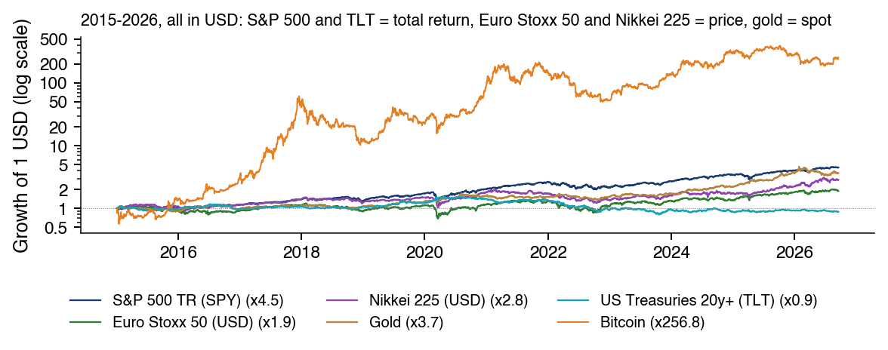
Valoarea a 1 USD investit pe 2 ian. 2015, scară logaritmică
SPY și TLT sînt în randament total
Euro Stoxx 50 și Nikkei 225 sînt indici de preț, fără dividende
comparația cu SPY nu este deci între randamentele totale ale unor investiții echivalente
Două efecte distorsionează comparațiile între active:
Selecția: multiplul ×257 al Bitcoin este ales ex post dintre mii de monede, dintre care unele au dispărut (survivorship bias), iar cel mai bun raport Sharpe dintre multe trebuie deflatat.
Orizontul: adîncimea drawdown-ului maxim crește cu lungimea eșantionului. Dacă logaritmul prețului este o mișcare browniană fără drift, cu volatilitatea anuală \(\sigma\), cea mai mare scădere logaritmică de la un maxim pe \(T\) ani are media \(E[D] = \sqrt{\pi/2}\,\sigma\sqrt{T}\)(Magdon-Ismail et al., 2004).
Pe scurt
Selecția: multiplul \(\times 257\) al Bitcoin este ales ex post dintre mii de monede
unele dispărute (survivorship bias)
cel mai bun raport Sharpe dintre multe trebuie deflatat
Orizontul: adîncimea drawdown-ului maxim crește cu lungimea eșantionului
dacă logaritmul prețului este o mișcare browniană fără drift, cu volatilitatea anuală \(\sigma\)
cea mai mare scădere logaritmică de la un maxim, \(D = \max_{s \le t \le T}(\ln P_s - \ln P_t)\)
Cu \(\sigma = 17{,}6\%\),\(E[D]\) este 0,70 pe 10 ani și 1,40 pe 40 de ani, adică scăderi de preț de 50% și 75%. Drawdown-ul maxim (maximum drawdown, MDD) procentual așteptat este mai mic în modul, circa 47% și 71% pe traiectorii simulate, din cauza inegalității lui Jensen, și și mai mic cu un drift pozitiv, ca la S&P 500. Cifrele arată creșterea cu \(\sqrt{T}\), nu sînt o prognoză, și explică de ce scăderea de \(-82{,}5\%\) a BET pe 29 de ani nu se poate compara cu MDD-ul S&P 500 pe 11,7 ani.
Pe scurt
Cu \(\sigma = 17{,}6\%\): \(E[D] = 0{,}70\) pe 10 ani și \(1{,}40\) pe 40 de ani
adică \(-50\%\) și \(-75\%\) ca scădere de preț, \(e^{-E[D]} - 1\)
MDD-ul procentual așteptat, \(E[e^{-D}] - 1\), este mai mic în modul (inegalitatea lui Jensen)
circa \(-47\%\) și \(-71\%\) pe traiectorii simulate
Cu un drift pozitiv, ca la S&P 500, MDD-ul așteptat este și mai mic
cifrele arată creșterea cu \(\sqrt{T}\), nu sînt o prognoză
BET: \(-82{,}5\%\) pe 29 de ani, deci nu se compară cu MDD-ul S&P 500 pe 11,7 ani
Panoul de sus arată VIX, volatilitatea implicită a S&P 500 pentru următoarele 30 de zile calendaristice, și volatilitatea realizată în următoarele 21 de zile de tranzacționare, ambele în % pe an. Panoul de jos arată diferența dintre varianța implicită, \((\mathrm{VIX}/100)^2\), și varianța realizată, cu verde cînd cea implicită o depășește pe cea realizată și cu roșu în caz contrar.
Pe scurt
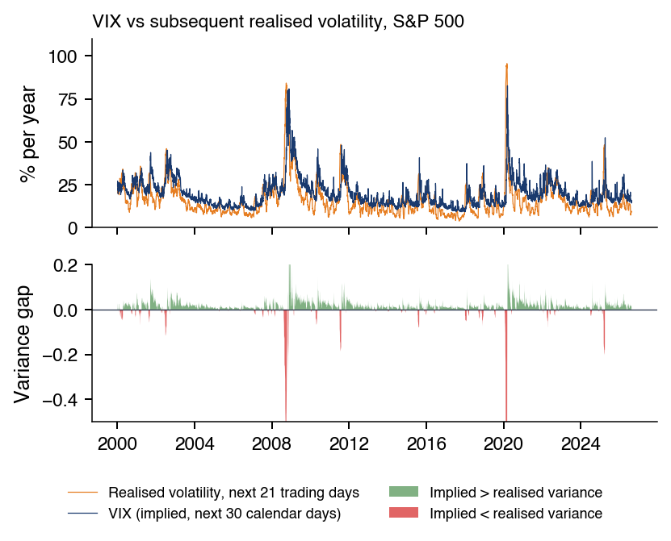
Panoul de sus: VIX și volatilitatea realizată în următoarele 21 de zile de tranzacționare
VIX: implicit, următoarele 30 de zile calendaristice; ambele în % pe an
Panoul de jos: \((\mathrm{VIX}/100)^2\) minus varianța realizată
verde cînd varianța implicită o depășește pe cea realizată, roșu altfel
\((\mathrm{VIX}/100)^2\) este varianța anualizată a S&P 500 pe 30 de zile, așteptată sub probabilitatea neutră la risc (risk-neutral), iar volatilitatea realizată este \(\sqrt{(252/21)\sum r^2}\) pe următoarele 21 de randamente zilnice. Prima de risc de varianță (variance risk premium), varianța așteptată neutră la risc minus cea așteptată sub probabilitatea reală, este pozitivă în medie (Carr & Wu, 2009): în 2000–2026, VIX mediu este 19,8, față de 16,2 realizat. Ex post, diferența este suma dintre primă și o eroare de prognoză. Bollerslev, Tauchen & Zhou (2009) găsesc că prima prognozează randamentele trimestriale.
Pe scurt
\((\mathrm{VIX}/100)^2\): varianța anualizată a S&P 500 pe 30 de zile, așteptată sub probabilitatea neutră la risc
Prima de risc de varianță: varianța așteptată neutră la risc minus cea sub probabilitatea reală
Panoul de sus arată randamentele titlurilor de stat americane pe 2 și pe 10 ani, zilnic, și rata fed funds, lunar, în %. Panoul de jos arată spread-ul dintre randamentul pe 10 ani și cel pe 2 ani, în puncte procentuale, cu perioadele de curbă inversată în roșu.
Pe scurt
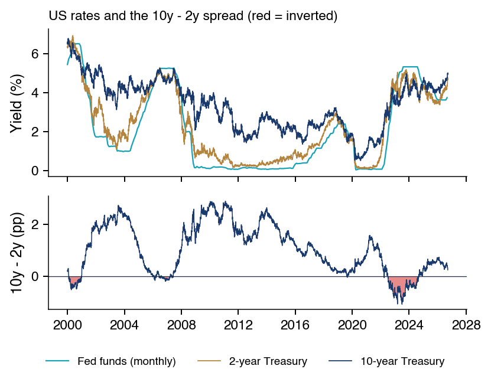
Panoul de sus: randamentele titlurilor de stat SUA pe 2 și 10 ani (zilnic), în %
și dobînda fed funds (lunar)
Panoul de jos: spread-ul 10 ani \(-\) 2 ani, în pp
Rata fed funds este rata overnight țintită de Rezerva Federală; datele provin din FRED. Spread-ul 10a–2a a fost negativ între 6 iulie 2022 și 26 august 2024, 537 de zile de tranzacționare, cel mai lung episod din eșantion, cu un minim de \(-1{,}08\) pp pe 3 iulie 2023. Pe 18 septembrie 2026, randamentul pe 10 ani este 5,01%, iar cel pe 2 ani 4,76%, un spread de 25 bp, cu rata fed funds de 3,63% în august 2026. Un randament la scadență nu este un randament realizat: TLT a pierdut din valoare în 2015–2026.
Bitcoin se închide la 24:00 UTC, iar S&P 500 la 20:00 sau 21:00 UTC, deci știrile apărute între cele două momente intră în cele două serii în zile diferite. Cu un factor comun, corelația din aceeași zi este atenuată, iar restul apare în corelațiile decalate; dacă doar factorul comun este împărțit între zile, iar varianțele zilnice rămîn neschimbate, corelațiile decalate înainte, din aceeași zi și decalate înapoi însumează corelația adevărată (Scholes & Williams, 1977),(Lo & MacKinlay, 1990), altfel se folosesc randamente pe perioade mai lungi (Burns, Engle & Mezrich, 1998). Pentru Bitcoin și S&P 500 în 2022–2026, corelațiile la lagurile 0, +1 și −1 însumează \(0{,}42 + 0{,}03 - 0{,}05 = 0{,}40\). Suma este un diagnostic, nu o dovadă: modelul nu admite corelații decalate negative, dar \(-0{,}05\) se află în limita a două erori standard iid, de circa 0,03 fiecare pentru aproximativ 1.180 de zile comune.
Pe scurt
Bitcoin (24:00 UTC) și S&P 500 (20:00 sau 21:00 UTC)
o știre apărută între cele două momente intră în cele două serii în zile diferite
Cînd seriile au un factor comun, corelația din aceeași zi scade
diferența se transferă în corelațiile decalate
dacă doar factorul comun se împarte între zile și varianțele zilnice rămîn aceleași
Fie relația stabilă \(y = \beta x + \varepsilon\), cu \(\beta\) și \(\operatorname{Var}\varepsilon\) fixe și corelația \(\rho\), unde \(x\) este randamentul pieței în care apare șocul (S&P 500), iar \(y\) randamentul celeilalte piețe. Corelația estimată doar în zilele în care \(\operatorname{Var}(x)\) este de \((1+\delta)\) ori mai mare este (Forbes & Rigobon, 2002)
care depășește \(|\rho|\) în valoare absolută pentru \(\delta > 0\) și \(0 < |\rho| < 1\). O corelație mai mare în perioade agitate nu dovedește deci, singură, o legătură mai puternică între piețe.
Pe scurt
Fie o relație stabilă \(y = \beta x + \varepsilon\) (\(\beta\) și \(\operatorname{Var}\varepsilon\) fixe), cu corelația \(\rho\)
Dacă o estimăm doar în zilele în care varianța lui \(x\) este de \((1+\delta)\) ori mai mare, corelația devine (Forbes & Rigobon (2002))
Pentru Bitcoin și S&P 500 în 2022–2026, cu zilele împărțite după VIX la cuartila superioară, 21,8, corelația este 0,52 în zilele cu VIX ridicat și 0,32 în celelalte, iar raportul varianțelor S&P 500 între cele două grupuri este \(1+\delta = 4{,}64\). Rezolvînd (0.24) pentru \(\rho\) se obține un \(\hat\rho\) ajustat de 0,27, care nu depășește 0,32 din zilele calme: creșterea varianței poate explica singură saltul la 0,52. Ajustarea presupune că nu lipsește niciun șoc comun și că între cele două piețe nu există feedback.
Pe scurt
Bitcoin – S&P 500, 2022–2026, zile împărțite după VIX (cuartila superioară: VIX \(> 21{,}8\))
corelația este 0,52 în zilele cu VIX ridicat și 0,32 în celelalte zile
raportul varianțelor S&P 500 între cele două grupuri de zile: \(1+\delta = 4{,}64\)
\(\hat\rho\) ajustat \(= \rho^*/\sqrt{1+\delta(1-\rho^{*2})} = 0{,}27\), prima formulă rezolvată pentru \(\rho\)
interpretare: 0,27 ajustat nu depășește 0,32 din zilele calme
creșterea varianței poate explica saltul la 0,52, fără o legătură mai puternică între piețe
Graficul arată volatilitatea anualizată mobilă pe ultimele 63 de observații, circa trei luni pentru S&P 500 (anualizată cu \(\sqrt{252}\)) și circa două luni pentru Bitcoin (anualizată cu \(\sqrt{365}\)). Volatilitatea Bitcoin a fost în medie de 65% în 2015–2017 și de 46% în 2024–2026; cu S&P 500 la 14% în 2024–2026, Bitcoin este încă de circa 3,2 ori mai volatil. Volatilitatea se schimbă în timp la ambele, deci un model cu volatilitate constantă le descrie prost.
Pe scurt
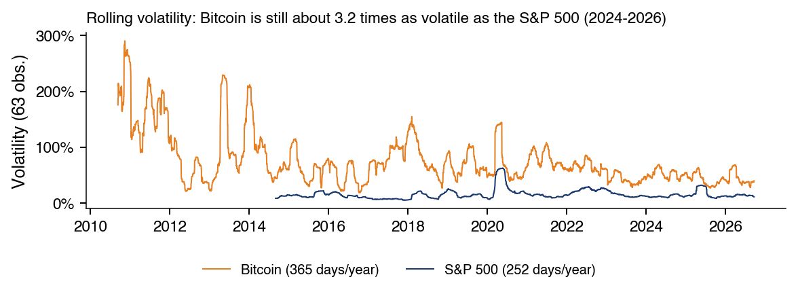
Volatilitatea anualizată rolling pe ultimele 63 de observații
circa 3 luni pentru S&P 500 (anualizat cu \(\sqrt{252}\))
circa 2 luni pentru Bitcoin (anualizat cu \(\sqrt{365}\))
Volatilitatea medie a Bitcoin a fost 65% în 2015–2017 și 46% în 2024–2026
Volatilitatea medie a S&P 500 în 2024–2026 a fost 14%
deci Bitcoin este încă de circa 3,2 ori mai volatil
Volatilitatea ambelor serii variază în timp
un model cu volatilitate constantă nu descrie bine datele
Graficul arată creșterea unui leu investit în ianuarie 2015, ajustată pentru dividende, pe scară logaritmică. BET-TR, versiunea de randament total a BET, se multiplică de 10,4 ori. Banca Transilvania (×17,1) și Romgaz (×12,5) bat indicele, iar BRD (×7,6) și OMV Petrom (×8,5) rămîn în urma lui.
Pe scurt
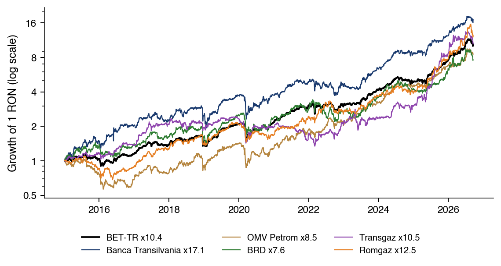
Creșterea a 1 leu investit în ianuarie 2015, ajustată cu dividendele (preț ajustat)
scară logaritmică
BET-TR \(\times 10{,}4\)
Banca Transilvania (\(\times 17{,}1\)) și Romgaz (\(\times 12{,}5\)) au depășit indicele
BRD (\(\times 7{,}6\)) și OMV Petrom (\(\times 8{,}5\)) au rămas sub el
Cursul de referință BNR pentru EUR/RON urcă de la 3,60 pe 4 iulie 2005, data denominării, cînd 1 RON = 10.000 ROL, la 5,26. Leul este o monedă administrată: volatilitatea lui anualizată în 2015–2026 este de 2,1%, cu perioade lungi de calm și salturi ocazionale.
Pe scurt
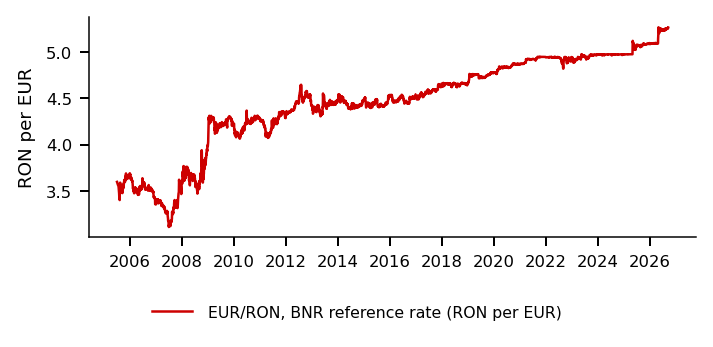
EUR/RON (cursul de referință BNR) de la 3,60 (4 iul. 2005, după denominarea 1 RON \(=\) 10 000 ROL) la 5,26
Pe 18 septembrie 2026, randamentul titlurilor de stat românești pe 10 ani, în lei, este 7,33%, iar al celor germane, în euro, 3,53%, o diferență între monede de 3,8 puncte procentuale. Această diferență nu este un spread pur de risc de credit suveran: ea amestecă deprecierea așteptată a leului, diferențele de inflație și de dobînzi de politică monetară și primele de credit, de lichiditate și de termen.
Pe scurt
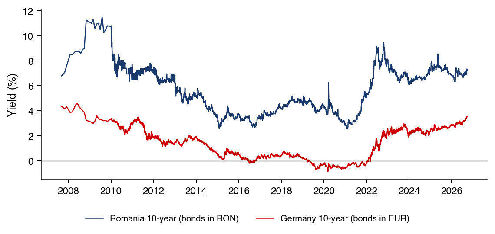
18 sep. 2026: România 7,33% (obligațiuni în lei), Germania 3,53% (în euro)
o diferență între monede de 3,8 pp
Diferența nu este un spread suveran de credit propriu-zis, ci reflectă simultan
deprecierea așteptată a leului, decalajele de inflație și de dobîndă de politică monetară
Bursa de efecte și mărfuri din București s-a deschis pe 1 decembrie 1882, prin decret regal al regelui Carol I. A trecut prin șocuri timpurii, răscoala țărănească din 1907 și războaiele balcanice din 1912–1913, și a fost închisă în timpul Primului Război Mondial. După redeschidere a urmat o perioadă de circa șapte ani de creștere puternică și apoi una de circa șapte ani de declin accelerat, suprapusă cu Marea Criză din 1929–1933. În 1929 a fost adoptată o nouă lege a burselor (Lege asupra burselor, 1929), cu expunerea de motive a ministrului Virgil Madgearu. Tranzacționarea s-a oprit în 1948, odată cu regimul comunist și naționalizarea economiei.
Pe scurt
1 dec. 1882: bursa de valori și mărfuri își începe activitatea (BVB (istoric))
în baza unui decret al Regelui Carol I
Primele șocuri: răscoala țărănească din 1907 și războaiele balcanice din 1912–1913
Palatul Bursei, din str. Ion Ghica nr. 4, a fost construit în 1906–1912 de arhitectul Ștefan Burcuș, ca sediu al Bursei și al Camerei de Comerț; din 1955 găzduiește Biblioteca Centrală de Stat. Fotografiile arată agenți de bursă în 1928 și clădirea în 2023.
România nu a avut o bursă de valori timp de aproape 50 de ani, pînă la prima ședință a bursei reînființate, pe 20 noiembrie 1995, în care s-au tranzacționat 905 acțiuni ale celor 6 companii listate. Indicele BET a pornit în 1997 cu 10 companii; coșul lui poate avea 10–20 de companii și are astăzi 20, iar BET-FI a fost primul indice sectorial, pentru societățile de investiții financiare (SIF) listate în 1999. În 2010, BVB și-a listat propriile acțiuni pe piața sa reglementată, un loc de tranzacționare autorizat în UE; în 2020, FTSE Russell a reclasificat România de la Frontier la Emerging; în 2023 a avut loc oferta publică inițială (initial public offering, IPO) a Hidroelectrica. Cea mai mare variație zilnică a BET este de \(-12{,}3\%\)(\(-13{,}1\%\) ca randament logaritmic), pe 7 ianuarie 2009, după \(+4{,}8\%\) în ziua precedentă.
Un ETF spot deține activul însuși, nu contracte futures; produsul tranzacționat la bursă (exchange-traded product, ETP) este categoria mai largă. ETP-urile pe Bitcoin spot au fost aprobate în SUA pe 10 ianuarie 2024 (SEC, 2024). Graficul arată IBIT, iShares Bitcoin Trust, tranzacționat din 11 ianuarie 2024, cu o valoare mediană tranzacționată zilnic de 1,97 mld. USD și un maxim de 10,3 mld. USD pe 5 februarie 2026; axa din dreapta dă prețul Bitcoin (BTC) în mii de USD.
Pe scurt
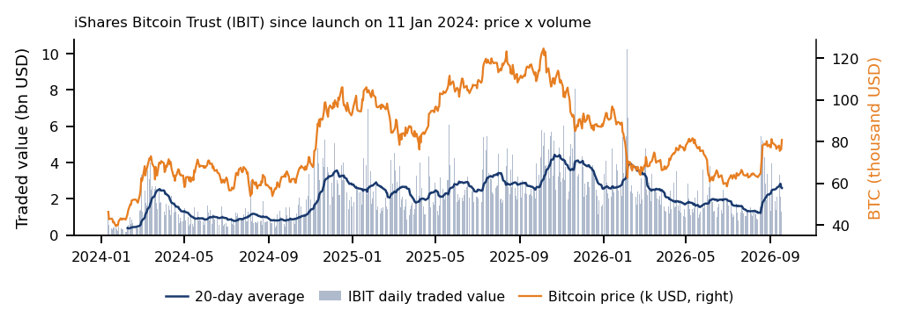
ETF spot: deține activul însuși, nu contracte futures
ETP (produs tranzacționat la bursă) este categoria mai largă
ETP-urile pe Bitcoin spot au fost aprobate în SUA pe 10 ian. 2024 (SEC (2024))
IBIT (iShares Bitcoin Trust), tranzacționat din 11 ian. 2024
Oferta de stablecoin-uri este valoarea în dolari a stablecoin-urilor legate de dolar aflate în circulație, după DefiLlama. Ea a crescut de la 4,2 mld. pe 1 ianuarie 2020 la un maxim de 187,4 mld. pe 2 aprilie 2022, a scăzut la 122,7 mld. pe 19 august 2023, după prăbușirea TerraUSD și crahul criptoactivelor, și a ajuns la 303,0 mld. pe 18 septembrie 2026.
Pe scurt
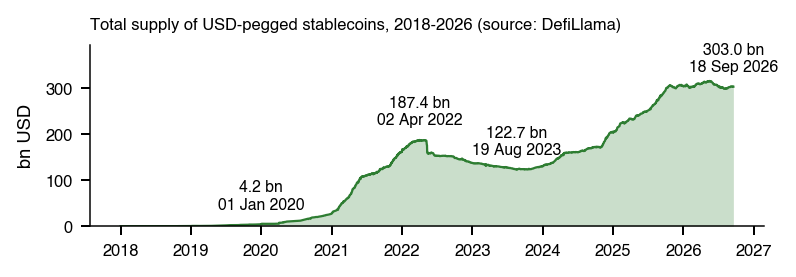
Oferta: valoarea în USD a stablecoin-urilor legate de USD aflate în circulație (DefiLlama)
Activele reale tokenizate (real-world assets, RWA) sînt obligațiuni, unități de fond, depozite sau mărfuri reprezentate printr-un token, o creanță asupra activului înregistrată într-un registru comun, care poate fi programată și transferată și decontată aproape instantaneu; fondurile de piață monetară tokenizate sînt un exemplu (BIS, 2023),(BIS, 2025). Datele-cheie ale reglementării sînt regulamentul UE privind piețele de criptoactive (Markets in Crypto-Assets, MiCA), aprobarea în SUA a ETP-urilor pe Bitcoin spot în ianuarie 2024 și GENIUS Act pentru stablecoin-urile de plată, iar datele de intrare în vigoare ale regulilor pot servi drept rupturi structurale în studiile de eveniment. Întrebarea statistică este dacă activele tokenizate preiau proprietățile activului suport sau pe cele ale piețelor de criptoactive.
Pe scurt
Active reale tokenizate
RWA (real-world assets): obligațiuni, unități de fond, depozite, mărfuri
Token: un drept asupra unui astfel de activ, pe un registru comun
cu transfer și decontare programabile, aproape instantanee
Tabelul compară Uniunea Europeană și Statele Unite. Cadrul european este MiCA, iar cel american pentru stablecoin-urile de plată este GENIUS Act; ETP-urile pe criptoactive sînt note tranzacționate la bursă în UE și ETP-uri pe Bitcoin spot în SUA din ianuarie 2024 (SEC, 2024). Autoritățile de supraveghere sînt Autoritatea Europeană pentru Valori Mobiliare și Piețe (ESMA), Autoritatea Bancară Europeană (EBA) și autoritățile naționale în UE, respectiv Securities and Exchange Commission (SEC), Commodity Futures Trading Commission (CFTC) și autoritățile bancare în SUA. Banca Reglementelor Internaționale (Bank for International Settlements, BIS) propune un registru unificat (unified ledger) care combină moneda băncii centrale, depozitele și activele (BIS, 2023) și constată că stablecoin-urile nu trec cele trei teste ale monedei: unicitatea, elasticitatea și integritatea (BIS, 2025).
unde \(\phi\) măsoară persistența, iar \(u_t\) este un șoc nou de evaluare greșită. Timpul de înjumătățire din (0.25) este numărul de zile în care o primă se reduce la jumătate, soluția ecuației \(\phi^h = 0{,}5\). Cînd \(\phi\) este aproape de 1, primele se sting încet, ca la ETF-urile pe acțiuni străine sau pe obligațiuni nelichide (Petajisto, 2017). În SUA, răscumpărările în natură permit în plus fondului să evite distribuirea cîștigurilor de capital, o particularitate a regulilor fiscale americane, nu a ETF-urilor în general.
Pe scurt
Arbitrajul în termeni statistici: prima modelată ca AR(1)
Haddad, Huebner & Loualiche (2025) folosesc formularele 13F ale administratorilor care decid asupra a cel puțin 100 de milioane de dolari în titluri 13(f). Fiecare acțiune \(k\) are caracteristicile \(X_k\): logaritmul capitalului propriu contabil și pătratul lui, profitabilitatea, investițiile și randamentul dividendului, fiecare transformată spre distribuția Normală; universul \(\mathcal{N}_i\) al investitorului \(i\) este mulțimea acțiunilor deținute de el în ultimii trei ani. Cererea investitorului \(i\) pentru acțiunea \(k\) (ec. 13–14) leagă logaritmul raportului dintre ponderea \(w_{ik}\) și ponderea activului din afara universului \(w_{i0}\), net de logaritmul capitalizării \(p_k\), de caracteristici, de elasticitatea proprie \(\mathcal{E}_{ik}\) înmulțită cu \(p_k\), de elasticitatea agregată \(\mathcal{E}_{agg,k}\) și de interacțiunea ei cu \(X_k\), plus un șoc de cerere \(\epsilon_{ik}\).
Pe scurt
Date: formularele 13F ale administratorilor (Secțiunea III.B)
administratori care decid asupra a cel puțin 100 de milioane de dolari în titluri 13(f)
Pentru investitorii activi, elasticitatea este \(\mathcal{E}_{ik} = \bar{\mathcal{E}}_{0i} + \bar{\mathcal{E}}_{1i}' X_k - \chi\, \mathcal{E}_{agg,k}\), cu răspunsul strategic \(\chi\); pentru investitorii pasivi este 0. În estimările de bază, coeficienții \(\bar{\mathcal{E}}_{1i}\) și \(\zeta\) sînt restricționați la 0 pentru toate caracteristicile, cu excepția capitalului propriu contabil. În echilibru (ec. 17–18), cererea este egală cu capitalizarea pentru fiecare acțiune, iar elasticitățile individuale ponderate cu deținerile însumează \(\mathcal{E}_{agg,k}\);\(A_i\) sînt activele investitorului, nu factorul de anualizare.
Pe scurt
\(\xi\), \(\zeta\): coeficienții lui \(\mathcal{E}_{agg,k}\) și ai interacțiunii lui cu \(X_k\)
Estimatorul este metoda generalizată a momentelor (generalised method of moments, GMM), cu o problemă de punct fix rezolvată prin metoda lui Newton; cu \(\chi = 0\) se reduce la sistemul de cerere al lui Koijen & Yogo (2019), iar investitorii cu sub 1.000 de dețineri sînt grupați după activele administrate (assets under management, AUM) în grupuri de circa 2.000 de dețineri. Instrumentul pentru preț (ec. 23) este construit doar din ceilalți investitori, fiecare distribuindu-și activele în mod egal în universul lui, iar instrumentul pentru elasticitate (ec. 24) rezolvă condiția elasticităților pentru aceleași portofolii cu ponderi egale.
Pe scurt
Estimatorul: GMM cu o problemă de punct fix rezolvată prin metoda lui Newton (Secțiunea III.C)
Tabelul adună cifrele lucrării, cu locul în care apar. Răspunsul strategic este \(\chi = 2{,}97\) (SE 0,47), între 0 și \(\infty\), și variază între 2,30 și 3,27 în rîndurile de robustețe, dar scade la 0,04 fără instrumentul pentru elasticitate și la 0,63 fără instrumente: endogenitatea ascunde răspunsul. Elasticitatea agregată medie este 0,438, iar reacțiile înjumătățesc dispersia reziduală între acțiuni (0,0395 față de 0,0842 cu elasticități fixe). Ponderea mediană a administrării active scade de la 81,4% în 2001 la 59,5% în 2020; panta în forma redusă a lui \(\Delta\log\mathcal{E}_{agg}\) în raport cu \(\Delta\log\) al ponderii active este 0,385 (SE 0,022), compatibilă cu o treime. Acțiunile mai puțin elastice sînt mai volatile și mai puțin lichide, iar elasticitatea agregată medie scade de la 0,41 la 0,27, o scădere de circa două ori mai mică decît ar fi cu \(\chi = 0\).
Un singur \(\chi\) pentru toți investitorii, fără intrări și ieșiri strategice sau fluxuri ale fondurilor;
Un singur formular 13F pe instituție, deci fondurile ei active și pasive nu pot fi separate;
O elasticitate pentru acțiuni individuale, nu pentru piață în ansamblu;
Ipoteza că cei care trec la administrare pasivă sînt reprezentativi pentru investitorii activi.
Deținerea pasivă este ea însăși endogenă, astfel că identificarea efectului ei se bazează pe reconstituirile indicilor și pe șocurile de fluxuri (Sammon, 2025).
Pe scurt
Limitele recunoscute de autori
un singur \(\chi\) pentru toți investitorii, fără intrări și ieșiri strategice și fără fluxuri către fonduri (Secțiunea I.B)
un singur formular 13F pe instituție: fondurile ei active și pasive nu pot fi separate (nota 51)
elasticitatea privește acțiunile individuale, nu piața în ansamblu (nota 37)
cei care trec la administrare pasivă sînt presupuși reprezentativi pentru investitorii activi (Secțiunea V.A)
Deținerea pasivă este endogenă
deci identificarea efectului ei (Sammon (2025)) se bazează pe revizuirile componenței indicilor și pe șocurile fluxurilor
Fără deținerile 13F, \(\chi\) nu poate fi reestimat, dar aritmetica din Secțiunea V.A poate fi verificată: 0,90 din ec. (5) și 0,33 din ec. (28), pe slide-urile principale. Pentru că rata de transmitere (0.19) se schimbă cu \(\alpha\), integrarea ei de la \(\alpha_0 = 0{,}814\) la \(\alpha_1 = 0{,}595\) cu \(\chi = 2{,}97\) dă \(-0{,}313 + 0{,}211 = -0{,}102\) în logaritmi, o scădere de circa 10%, de același ordin cu rezultatul principal. Măsura deținerii pasive din lucrare nu poate fi refăcută din agregatele publice: Financial Accounts of the United States nu separă fondurile mutuale pe indici de cele active, iar seria lor pentru ETF-uri amestecă fondurile pasive cu cele active. Autorii indică și reglementarea bancară, vînzările forțate (fire sales) și marii investitori suverani ca întrebări ulterioare.
Pe scurt
Fără deținerile 13F, \(\chi\) nu poate fi reestimat
calculele din Secțiunea V.A se pot verifica (0,90 din ec. 5 și 0,33 din ec. 28, în slide-urile principale)
Rata de transmitere variază cu \(\alpha\)
integrarea ec. (28) de la \(\alpha_0 = 0{,}814\) la \(\alpha_1 = 0{,}595\), cu \(\chi = 2{,}97\), dă \(\ln\frac{\alpha_1(1+\chi\alpha_0)}{\alpha_0(1+\chi\alpha_1)} = -0{,}313 + 0{,}211 = -0{,}102\)
circa 10%, același ordin de mărime ca cifra din rezumat
Limita datelor: măsura deținerii pasive din lucrare nu poate fi refăcută din agregatele publice
Conturile financiare ale Statelor Unite nu separă fondurile mutuale index de cele active
seria lor pentru ETF-uri amestecă fondurile pasive cu cele active
deci traiectoria ponderii pasive din lucrare și traiectoria elasticității care rezultă din ea nu sînt reproduse aici
Autorii propun și alte direcții (Secțiunea VI)
reglementarea bancară, vînzările forțate și marii investitori suverani
unde \(z_p\) este cuantila de ordin \(p\) a distribuției Normale standard, iar SE este eroarea standard HAC a spread-ului mediu anualizat dintre SPY și RSP, în pp pe an. Pe întregul eșantion, \(\operatorname{SE} \approx 0{,}29/0{,}27 \approx 1{,}1\) pp, deci (0.26) dă un MDE de 3,1 pp pe an; pentru 2015–2026, MDE este 4,9% pe an, mai mare decît estimarea însăși, +2,85%. Spread-ul este un rezultat, nu o măsură a deținerii pasive, deci o afirmație cauzală cere o sursă exogenă de variație.
Pe scurt
Efectul minim detectabil (MDE): cel mai mic efect real detectat cu putere 80% de un test bilateral la pragul de 5%
Spread-urile zilnice \(d_t\) sînt autocorelate, iar varianța lor se schimbă în timp, deci formula iid \(s_d/\sqrt{T}\) dă o valoare greșită pentru \(\operatorname{SE}(\bar d)\). Estimarea Newey–West (HAC) adaugă autocovarianțele \(\hat\gamma_l\) pînă la lagul \(L\), cu ponderi care scad liniar,
care păstrează estimarea nenegativă; \(L = 0\) redă varianța iid, autocorelația pozitivă mărește SE, iar cea negativă o micșorează. Lagul se fixează în preînregistrare: regula uzuală \(L = \lfloor 4(T/100)^{2/9} \rfloor\) dă \(L = 9\) pentru \(T = 5.884\) de zile, iar rezultatele se raportează și cu \(L/2\) și \(2L\).
Pe scurt
Diferențele zilnice \(d_t\) sînt autocorelate, iar varianța lor se schimbă în timp
deci formula iid \(s_d/\sqrt{T}\) dă o \(\operatorname{SE}(\bar d)\) greșită
Estimarea Newey–West (HAC) adaugă autocovarianțele pînă la lagul \(L\), cu ponderi descrescătoare liniar
Codul citește datele cursului din depozitul de pe GitHub: prețul de închidere al indicelui S&P 500, prețul de închidere ajustat al SPY și seria Bitcoin, tranzacționată 24/7. Pentru o analiză comună, el alătură întîi prețurile pe zilele comune și abia apoi calculează randamentele logaritmice, astfel încît ambele randamente să acopere același interval calendaristic, de exemplu de vineri pînă luni; altfel, randamentul Bitcoin de duminică pînă luni ar fi pus alături de randamentul S&P 500 de vineri pînă luni. Ultima linie calculează drawdown-ul ca raportul dintre preț și maximul lui de pînă atunci, minus 1.
Prompturile reproduc primele trei etape ale buclei descoperirii folosite în mini studiul de caz al capitolului. Promptul de literatură cere lucrări evaluate de colegi despre deținerea pasivă și informativitatea prețurilor, cu DOI, strategia de identificare și estimarea principală, și semnalează referințele nesigure; fiecare DOI se verifică apoi pe Crossref, iar rezumatul îl citește cercetătorul. Promptul de ipoteză cere trei explicații concurente pentru faptul că SPY a bătut RSP după 2015, fiecare cu o implicație pe care celelalte nu o au. Promptul de cod cere un test al unui spread mediu zilnic nul al randamentelor logaritmice, cu o statistică \(t\) Newey–West, pe prețuri alăturate pe zilele comune.
Pe scurt
Literatură
Listează lucrări publicate în reviste cu evaluare inter pares, din 2018 încoace, despre deținerea pasivă și informativitatea prețurilor. Pentru fiecare: DOI, strategia de identificare, estimația principală. Marchează orice lucrare despre care nu ești sigur că există.
verificați fiecare DOI în Crossref (titlul și autorii trebuie să coincidă) și citiți personal rezumatul
Ipoteză
Propune trei explicații concurente pentru faptul că SPY a avut randamente mai bune decît RSP după 2015 (fluxuri pasive, compoziția pe sectoare, creșterea profiturilor celor mai mari firme). Pentru fiecare, dă o implicație testabilă pe care celelalte nu o au.
Date și cod
Scrie cod Python care citește prețurile zilnice ajustate (randament total) ale SPY și RSP din datele cursului, aliniază prețurile pe zilele comune și testează H0: media diferenței zilnice a randamentelor log = 0, cu statistica t Newey-West.
Ultimele etape cer un plan de robustețe preînregistrat, cu subeșantioane, lățimi de bandă HAC, randamente simple față de logaritmice și o versiune neutră pe sectoare, împreună cu rezultatul care ar infirma ipoteza, și o critică în care asistentul joacă rolul unui referent ostil. Raportul dă estimarea, eroarea ei standard, eșantionul și fiecare specificație încercată. Cercetătorul trebuie să verifice referințele inventate, folosirea prețului de închidere neajustat în locul celui ajustat, randamentele calculate înainte de alăturare, ferestrele alese după ce s-au văzut datele și puterea scăzută, pe care o raportează MDE.
Pe scurt
Robustețe
Scrie un plan de robustețe preînregistrat: subeșantioane, lățimi de bandă HAC, randamente simple față de log, o versiune neutră pe sectoare. Spune dinainte ce rezultat ar infirma ipoteza.
Critică
Joacă rolul unui recenzent sever. Enumeră cele mai serioase trei obiecții la strategia de identificare și testul care răspunde fiecăreia.
Raport: estimația, eroarea standard, eșantionul, toate specificațiile încercate, inclusiv cele eșuate
Verificările cercetătorului
referințe inventate: verificați fiecare DOI
închiderea neajustată în locul celei ajustate: reproduceți întîi multiplii de randament total
randamente calculate înainte de alinierea prețurilor: numărați zilele comune
Herman, D., Googin, C., Liu, X., Sun, Y., Galda, A., Safro, I., Pistoia, M., Alexeev, Y. (2023). Quantum computing for finance. Nature Reviews Physics, 5(8), 450–465.
Pele, D.T., Wesselhöfft, N., Härdle, W.K., Kolossiatis, M., Yatracos, Y.G. (2023). Are cryptos becoming alternative assets?. The European Journal of Finance, 29(10), 1064–1105.
Samuelson, P.A. (1965). Rational theory of warrant pricing. Industrial Management Review, 6(2), 13–39. Retipărit în Henry P. McKean Jr. Selecta (2015), Springer, 195–232.
ROL: Romanian old leu (ISO 4217 code, until 2005) — leul vechi (cod ISO 4217, pînă în 2005)
RWA: Real-World Assets — active din economia reală tokenizate
SE: Standard Error — eroare standard
SEC: Securities and Exchange Commission — Comisia americană pentru valori mobiliare
SIF: Societate de Investiții Financiare
SMB: Small Minus Big (size factor) — factorul mărime: firme mici minus mari
SPDR: Standard & Poor’s Depositary Receipts — certificate de depozit Standard & Poor’s (familia de ETF-uri SPDR)
SR: Sharpe Ratio — raportul Sharpe
SUA: Statele Unite ale Americii
TARF: Target Accrual Redemption Forward — contract forward răscumpărat la atingerea unui cîștig cumulat țintă
TIPS: Treasury Inflation-Protected Securities — obligațiuni de stat americane indexate la inflație
TR: Total Return — randament total, cu dividende reinvestite
UDR: Uzinele și Domeniile Reșița
UE: Uniunea Europeană
UTC: Coordinated Universal Time (Temps Universel Coordonné) — timpul universal coordonat
VaR: Value-at-Risk — valoarea la risc
VIX: CBOE Volatility IndeX — indicele de volatilitate CBOE
VOC: Vereenigde Oostindische Compagnie — Compania Olandeză a Indiilor de Est
Prețuri zilnice EODHD pînă la 18 sep. 2026: indici, ETF-uri (prețuri ajustate), aur, Bitcoin, Ethereum, USDT; BET: valori oficiale de închidere. Cursurile USD/EUR și JPY/USD din FRED, cursul EUR/RON de referință al BNR. Studiile de caz: Haddad, Huebner și Loualiche (2025), ec. (5) și Tabelul 2; Pflueger (2025), Figura 1, cu randamentele FRED DGS10, DFII10 și DTB3, piața SUA din biblioteca Kenneth French și SPY.